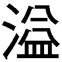

| ドラゴンライズ 双剣士と竜の嘘 (ガガガ文庫) | |
| 水市恵 | |
| (2011) | |
小学館ｅＢｏｏｋｓ
ドラゴンライズ 双剣士と竜の嘘
水市恵
イラスト ０２９
赤々と燃える火で、とても夜とは思えない明るさ。
フレイクが大通りに駆けつけたときには、家々から噴煙が上がっていた。竜の襲撃に備え、燃えにくい煉瓦の家がほとんどだが、それでも家財は焼ける。通りに面する数十軒、軒並み壁を砕かれ内部を焼かれている。皮膚が熱風に晒され、フレイクは顔をしかめた。この場に立っているだけでも辛い。
消火活動は後回し。火が広がるのも確かに怖いが、それ以上に優先すべきことがある。
優先的に抹殺しなければ、数十軒では済まない。
千軒以上あるといわれる、この町のすべての建造物が焼かれかねない。
火の中を悠然と歩く人影。
筋骨隆々とした、大柄な体躯。
衣服は一切身につけていない。
剝き出しの皮膚は色の濃い鱗で覆われている。
人間ではない。
人間の形に変化した、竜。
竜人だ。
「ぐ......」
「い、いてえ......」
「足が、動かねえ......」
現場には別のギルドがすでに先着していたが、十名弱の戦士たちは皆、負傷して倒れていた。家の壁に背中をめり込ませて苦鳴を上げる剣士。火傷を負い、水を求めて呻く槍使い。咳と一緒に地面に血を吐く壮年の重斧士。治癒魔術を使える後衛の魔道師まで倒されていて、彼らはもう立ち上がれない。
辛うじて立っていた召喚術師は、最後の力を振り絞って呪文を唱え始めた。時間をじっくりかけて、残るすべての魔力を振り絞る。詠唱中は隙だらけになるが、幸い、竜人の注意は彼に向いていない。
しばらくの詠唱の末に、魔術によって地面に円形の陣が描かれ、そこから半人半獣のケンタウルスが顕現。人間を大きく上回り、竜人の体躯に見劣りしない身の丈。片手は棍棒。腕慣らしの素振りは力強く、残像を作る速度だ。
現時点で召喚術師が呼び出せる最強の獣。彼は召喚の成功を見届けて、笑みを浮かべながら膝をついて倒れた。魔力も体力も使いきり、意識を失いかけている。
後を任されたケンタウルスは、術師の意図を理解して竜人を蹂躙すべく突進。四本の逞しい脚が躍動し、足音を轟かせて竜に迫る。
だが、一瞬で散る。
ケンタウルスが棍棒を振り上げて下ろすまでの間に、竜人の左右の拳が炸裂。一撃目がケンタウルスの腹部を貫き、二撃目が頭部に直撃。あっけなく首が曲がり、骨が破砕する音が響いた。
命を失ったケンタウルスは、光の粒に分解されて消滅した。自分がもといた異世界へと還ったのだ。
普段は馬車が行き交い、歩道に人がれる大通り。
数百メートルまっすぐ続くこの道に、今、立っているのは竜人だけ。
その猛威を雄弁に物語る惨状だった。
「フレイク......、お前、ひとりか？」
血を吐いて倒れている重斧士が顔だけをフレイクに向けて、弱々しい声で呼びかけた。何度か見たことがある顔だったが、脂汗をかき、表情は痛みに歪んでいる。まるで別人だ。
フレイクは小走りに駆け寄り、膝をついて尋ねる。
「立てますか？ 自力で逃げられないようなら......」
俺が肩を貸しますよ？ とフレイクが続ける前に、重斧士が応じる。
「ふん、お前に、心配、されちまうとはな。俺たちは、気にするな。這いずって逃げる、くらいなら、できる。それよりフレイク、竜人を、竜を、警戒しろ......」
竜と人間は絶え間なく対立している種族だ。竜は人間を襲って糧を得る。あるいは、殺戮を楽しむ。
今、目の前にいる竜人は後者のようだ。気の赴くままといった風に、笑い声を上げながら人家の壁を殴って砕いている。
竜と人間の力の差は歴然。ひとたび竜が人里に出現すれば、悪くすると数百人の死傷者が出る。全滅させられた町だって珍しくない。
町を守るために、幾多の戦闘ギルドが存在しているが、竜を打倒できるほどの戦力を持つギルドはごく一握り。しかも、今日現れたのは下位の竜ではない。属性攻撃を使いこなす、中位竜だ。
「見ての通り、俺たちのギルドは、全滅だ。お前ひとりでは無理、だから、グライド姉妹を早く、呼んでこないと......」
「すでにこっちに向かっていますよ、ふたりとも」
「そ、そうか......」
重斧士は目を細めた。
「任せたぞ、お前たち『グライズ』に......。二年前の再現だけは、させるな......」
「わかったから、早く逃げないと！」
フレイクが促すと、重斧士は咳き込みながら匍匐前進を始める。匍匐後退というべきかもしれないが。倒れている他の面々も、それぞれ自分の体を引きずるように逃げていく。
お前ひとりでは無理、と、言われた言葉をフレイクは心の中で反芻する。
その判断は妥当だと思う。竜と相対するときは、一匹を数十人がかりで取り囲むのが普通。ひとりで竜に挑める者は、英雄か馬鹿かのどちらかだ。
フレイクは決して英雄ではない。
だが、ここは退けない。
町を守るためにも、逃げる彼らを死なせないためにも、一刻も早くこの竜人を止めなくてはならない。グライド姉妹が到着するまで、フレイクは単身、竜人と対峙する。
「お？ まだ戦える奴がいたか？」
竜人がフレイクの姿に気づいた。笑いながら近づいてくる。まるで遊び相手を見つけた子どものように、嬉しそうに迫る破壊者。
「人語を解するだけの知能はあるか」
フレイクが呟くように言うと、竜人は唇を片方だけ上げて笑う。
「当たり前だろ。ガキの竜じゃないんだぜ？」
「この町に何の用だ」
「用？ 用なんてねーよ。用がないから消しにきた」
竜人が両手を広げて天を仰ぐ。
「暇つぶしだよ、暇つぶし。ついでに『この町は恐るべき竜、レクエルダの猛威で消し炭になりました』と、そういう評判が立てばいいなと思ってる。この町ってあれだろ？ 二年前に劫火竜と氷剣竜に襲われたのに、何とか持ちこたえたんだったよな？ すげえじゃん。偉業じゃん。そんな町を滅ぼしたとなれば、俺様の名前に箔がつく」
「......知能はあるようだが、やはり馬鹿だな」
「あん？」
レクエルダと名乗った竜人は、不機嫌そうに首を傾げた。
フレイクは指を差して、告げる。
「お前など、劫火竜や氷剣竜の足下にも及ばない。グライズが守るこの町を、そう簡単に落とせると判断したお前は大馬鹿だ」
フレイクは即座に地を駆けて竜との距離を詰めた。
小細工なし。通りの中央をまっすぐ突っ切る。
双剣士であるフレイクの武器は左右の短剣。
駆けながらふた振りとも抜いて構え、右の剣で躊躇なく突きを繰り出す。
ギルドを全滅させたばかりで気が大きくなっているのか、レクエルダはまだ危機感が薄い。竜人形態のままで切っ先を二の腕で受け止めようとした。腕を覆う固い鱗で跳ね返せるという、油断。
フレイクはそこに付け込む。軌道を変えることなく全力で突いた。皮膚と肉を裂く手応え。短剣は竜の腕を貫通し、傷口からは赤黒い血が散る。
フレイクが手にしているのは竜鋼製の短剣。竜の体細胞組織とセラミックスを配合した、高強度の剣だった。竜の防御力を破るために、人類はまさにその竜の力を活用して武器を錬成している。剣士の膂力と合わせれば、竜の身体を貫ける。
レクエルダが蹴散らした先ほどのギルドには、フレイクほどの使い手はいなかった。腕を貫かれてようやく危機を認識したか、表情から余裕を消した。息を吸い込み、胸が大きく膨れる。
あらゆる生物を殺戮する、竜の息吹が放たれる前兆。
フレイクは刺した剣を手放し、横に転がる。今しがたまでフレイクがいた空間を、レクエルダの口から飛び出た炎が赤々と焼く。人間どころか、象一頭を丸焼きにする規模の炎。
状況から予想はできていたが、正体は火竜。
「熱っ......！」
直撃は避けたが、それでも身体に熱が伝わってきて痛い。皮膚が溶け出しているかのように汗が流れた。
フレイクは転がった勢いを殺し、すぐさま起き上がる。再び距離を詰めて、残った左の剣でレクエルダの頭めがけて斬りかかった。風を切り裂く横薙ぎの一撃。今度はレクエルダは後ろに身を退いてかわす。その動きに連動する形で脚が旋回。蹴りがフレイクの胴を襲う。
「──ぐぅぉっ！」
胸の装甲に直撃した。フレイクは後ろに跳んで衝撃を和らげたが、それでも人間の蹴りとは桁違いの威力。装甲に圧されて一瞬絶息し、後方に吹き飛ばされた。長い滞空時間の後で背中から路面に落下。
受け身はとれたが、見ればレクエルダの姿が遠く小さい。フレイクはたった一撃で数十メートルも飛ばされていた。フレイクが態勢を整える前に、レクエルダは地を蹴って瞬く間に追撃を仕掛ける。
だが、その追撃は届かない。
「な......、なんだぁ？」
レクエルダは歩を止めざるを得ない。足に突き刺さったのは、低空飛行した鳥の嘴。海鳥ほどの大きさの鳥で、嘴が長く鋭く発達している。
同種の鳥が二十羽近く、次々と飛来してレクエルダを遮る。周りを取り囲むように羽ばたいて、頭や背中を狙って啄む。
飛び回っているのは、金属質の殻を纏った鋼鳥。自然界にいる種族ではなく、ケンタウルスと同様、異世界から召喚された種族。
召喚者はいつの間にか、フレイクの隣に立っていた。
長い髪が焼かれないようにフード付きのローブを纏う、若い女。緩く垂れ気味の眉と目で、いかにも優しげな顔立ち。女性にしては背が高いが、決して大柄という印象はない。細い体が優美な曲線を描き、見る者を魅了する。
召喚魔術と治癒魔術に長けた、この町随一の腕を誇る魔道師で、グライド姉妹の妹。
アイ・グライドだ。
「大丈夫、フレイクさん!?」
心配そうな表情のアイ。普段は女神みたいな微笑を絶やさないが、今この場面でそれはない。倒れているフレイクを見て動揺し、悲痛な声で叫ぶ。
「フレイクさん......、フレイクさんしっかりして！ こんなところで死ぬなんて絶対ダメだよ目を覚まして！ フレイクさんが死んだなんて絶対信じないんだから！」
叫びながら平手打ち。アイの手のひらが立て続けにフレイクの顔面を襲う。なすがままに左右に振られるフレイクの顔。防御が追いつかず、慌てて声を上げる。
「おい、アイ！ 起きてる！ 俺、起きてる！」
「あ、何だ、起きてたの？ 死んでなかったの？」
「ああ、死んでないぞ。だから早く平手打ちをやめるんだ」
「うん」
落ち着きを取り戻して手を休めるアイ。やめろと言われるまで平手打ちをやめなかったという事実に、フレイクは少なからず心配になる。痺れた頰を押さえながら身を起こした。
「大変！ フレイクさんのほっぺたがこんなに腫れてる！ 早く治癒魔術を......」
「顔が腫れてるのは竜の攻撃のせいじゃないんだが」
「あ、もしかして私のせい!? ご、ごめんなさい！ 私、慌てちゃって......」
「いや、いいんだ、聞き流せ。俺は少し休めば回復するから、治癒魔術はいらない。召喚を続けて竜を攻めてくれ！」
「わ、わかった！」
アイは召喚呪文を唱え始める。フレイクには何を言っているのか聞き取れない高速詠唱。見る間に足下に円形の陣が展開され、緑色に輝く。風が吹き荒れる中、アイが叫ぶ。
「出でよ、鋼鳥！」
陣の中央で、小さな爆発。
アイは今しがた召喚したのと同じ、鋼鳥を追加で呼び出すつもりだった。のだが、
「......ブヒ？」
「ああ、また間違えちゃった！」
アイが頭を抱えて嘆く。
爆発の跡地には子豚が一匹座っていた。何が起きたのかわからないといった感じで、きょろきょろと周囲を見回している。もちろん、竜に対抗できるような戦闘能力があるわけでも、何か特殊な能力があるわけでもない。単なる召喚ミスだ。
「雑魚どもが！」
レクエルダが鋼鳥の群れを振り払い、アイに狙いを定めた。二十歩ほどの距離を一息に詰めて襲いかかる。暴走馬車さながらの速度。
「させるか！」
フレイクがアイの手を引いて左に跳ぶ。風になったレクエルダが通り過ぎた。つきすぎた勢いを殺して止まったのは、三十メートルも先だった。
「ご、ごめん、フレイクさん」
「気にするな。お前の召喚ミスはこっちもわかってるんだから、謝るよりも先に──」
「わかった！」
アイは再び召喚呪文を唱える。
普通なら、戦闘中に召喚を失敗していたら命取りだ。仲間の足を引っ張ってしまうこと間違いない。とても戦力にはならないだろう。
だが、アイ・グライドにそれは当てはまらない。
アイが世間で称えられている所以は、高速詠唱。
その速度は一般的な魔道師の数倍ではきかない。
数十倍とも、数百倍ともいわれる速度。
「出でよ！ 鋼鳥！」
一瞬にして、陣の中央に光が炸裂。
数十羽の鋼鳥が一斉に飛び立ち、アイの意思に従ってレクエルダに襲いかかる。
一羽一羽は小さいながらも、それぞれがケンタウルス以上の力を秘めている。強い獣は呼び出すのに時間と魔力がかかるものだが、先ほどの魔道師がじっくり時間をかけて一体だけ呼び出せたのに対して、アイはものの数秒で何十羽も召喚した。
二度や三度の召喚失敗くらい、アイは速度で埋め合わせる。
レクエルダの姿は、飛び交う鋼鳥たちに囲まれて、ほとんど隠れて見えなくなった。レクエルダは必死に抵抗。拳と蹴りで鳥を叩き落とし、時おり火炎の息吹で数羽纏めて焼き払う。
だが、そうしているうちにもアイは召喚を続け、失った数を上回る鳥たちが新たに顕現。竜の手数はまるで追いつかない。
もはや群れは百羽か二百羽かそれ以上か。フレイクの目で追える数ではなくなってきた。詠唱速度だけでなく、魔力量も規格外。アイ・グライドの魔力が尽きるところを目撃した者は誰もいないという。
ギルド、グライズの後衛。
本来、後衛は補助魔術で前衛を補佐する役回りだが、その後衛がひとりで竜を圧倒するという恐るべき光景が展開されていた。
「鳥さんたち、頑張って！」
いったん召喚呪文を休んで鋼鳥を鼓舞するアイ。広場で鳩を見た女の子のような台詞と口調だが、あるいはこれで竜を倒してしまうかもしれない。鋼鳥たちはアイの士気に呼応して、より速く強く竜を突きまくる。
しかし。
竜は、竜だ。
鳥などに後れをとるはずがない。
「貴様らぁあああ！」
耳をつんざく大噴火のような咆哮。鋼鳥たちは気圧され、あるいは風圧に押された。あらゆる者を寄せ付けない威圧感。全羽が離れ、レクエルダの周りに球状の空間が生まれる。
これまでにない危機に、火竜レクエルダが本来の姿に戻る。
頭部が蜥蜴に似た形状に変化。首が伸びていく。後脚が太く逞しくなり、尻からは巨大な尾が生える。そして背中には翼。骨と肉が嫌な音を立てながら、変形し拡張し肥大化していく。
元の姿を顕した火竜。
竜の威容は巨象どころの騒ぎではない。縦にも横にもフレイクたちの視界に収まりきらない。赤く分厚い鱗に覆われた、炎の城壁とでも形容すべきか。
四足をすべて地面につけた姿勢でも、頭部の位置は周囲の人家を凌ぐ高さ。馬車がすれ違える広い道を完全に塞ぐ横幅。尾までの全長は優に十メートルを超える。
周りを飛ぶ鋼鳥たちが、今では羽虫程度にしか見えない。前脚に刺さったままのフレイクの短剣などは、竜の爪先くらいのものだ。
「ぁ......、ぁぁ......」
アイはレクエルダの眼光を見上げた姿勢で硬直してしまっている。震えて、ほとんど涙声だ。場慣れはしていても、前衛が皆無の状態で、こんなにも近距離で竜と向き合うのは、後衛のアイにとって未経験の事態。
火竜が息を吸い、口を開く。
「アイ、悪い！」
フレイクは後ろからアイの首根っこを摑んだ。「ほえ？」と驚くアイに構わず引き倒すように抱き抱え、細い路地に飛び込む。
低い唸りとともに背中に感じる熱風。大量の火炎が道路を焼いて熱していく。
火竜がフレイクたちを焼き払うために放った必殺の息吹。その規模も速度も温度も人間形態のときの比ではない。数十メートル先まで瞬時に届き、馬車数台分の道幅を目一杯焼き尽くす巨大な炎。家々の壁が焼け焦げて、火竜の近くの家はほとんど灰になっている。
フレイクとアイは通りからやや離れた家屋の陰に身を隠していた。道に倒れていたギルドの戦士たちのことがフレイクの頭をよぎる。自力で退避したことを祈るしかない。
「......フレイクさん、ごめん、もう大丈夫」
フレイクの首に手を回していたアイは、耳元で囁くように言った。落ち着きを取り戻したようで、確かな口調。もう抱えた身体に震えはない。フレイクはアイをその場に下ろした。
「ありがとね。助けられちゃった」
「それは俺も同じだろ。仲間なんだからお互い様だ」
というよりも、とフレイクは思う。
フレイクの最も重要な役目は、アイを守ることだと言っていい。
「今、竜は私たちを見てないね」
火竜は目の前を飛ぶ鋼鳥に気をとられていて、フレイクたちを捜すことは考えていなさそうだ。あるいは、今の息吹で焼き払ったと思っているのかもしれない。
「勝算はあるか？ どう攻める？」
「......フレイクさん、竜の懐に入り込める？」
アイはすでに作戦を構築していた。後衛の本領発揮。段取りをフレイクに伝え、じっと目を見て確認を求める。フレイクはアイの眼差しをまっすぐ受け止める。
「どう？ ちょっと無茶かもしれないけど......」
「任せろ」
フレイクは躊躇いなく頷き、不安そうなアイを勇気づける。
その場でアイと別れ、路地から大通りに飛び出した。竜は依然、頭の近くを飛ぶ鋼鳥の相手をしている。地上のフレイクに注意が向く前に接近する。
短剣を抜いて走る。息吹の名残で路面が熱い。足裏が焼かれるような熱さだが、構わず前進。
火竜の首の下に入り込んで、握った短剣に力を通わせ、
「刀身拡張！」
剣の質量を増大させた。生長するように伸びて、長さも太さも長剣の水準になる。
竜鋼製の剣は竜の体細胞組織を含んでいる。竜は自分の身体の質量をある程度、自由に増大・縮小させて姿形を変えることができる。剣はその性質を利用して、使い手の意思に応じて形を変える。
接近戦用の短剣ではなく、中距離での威力を重んじる長剣。これで横一閃、レクエルダの前脚を叩き斬る！
一撃目は前脚に食い込んだが、表面の鱗で威力が減殺。骨にまで届かず止められてしまった。ここにきてレクエルダは足下のフレイクを察知。鉤爪攻撃のために前脚を動かす。
「うおぉっ！」
フレイクは剣を握ったまま引っ張られ、足が宙に浮く。地面に振り落とされたら一巻の終わりだが、空いた右手を上に伸ばし、レクエルダの前脚に刺さりっぱなしだった短剣の柄を摑んだ。
「刀身拡張！」
こちらの短剣の質量も増大させる。長く太く育ち、傷口を押し広げて貫通。レクエルダの苦悶が大きくなり、痛がって暴れるがこれは好都合。揺れる動きも利用して剣をさらに食い込ませ、最後は腕力で圧しきる！
肉がちぎれ飛ぶ音とともに、フレイクは空中に投げ出された。両手の剣をもとの大きさに戻し、着地。見上げればレクエルダの前脚は完全に寸断されていた。血を乱れ飛ばしながら痛みに吠える火竜。前脚が使えなくなり、上半身を起こして後脚だけで立った。
さらなる高さになった火竜の相手をするのは、フレイクではなくアイの鋼鳥。フレイクが接近戦で時間を稼いでいる間に、アイは身を隠しておびただしい数の鋼鳥を追加召喚していた。
ざっと三百羽か四百羽か。全員が火竜の頭部を目指して飛びかかる。
首を鞭のように振るって鳥を弾き飛ばす火竜レクエルダ。だが、一撃でしとめられる鋼鳥はほんの数羽。多くの鋼鳥は攻撃の風圧を利用して逃げていく。
鋼鳥の群れは徐々に高度を上げていき、レクエルダは完全に見上げる状態になった。
また足下が疎かだが、フレイクはその隙をつかない。発達度合いが低い前脚ならともかく、逞しい筋肉に覆われた後脚に襲いかかったところで、フレイクの腕前ではたいした傷をつけられないという判断だった。
狙いは別にある。
レクエルダは、翼を動かし始める。
強風が吹き荒れ、周囲の家を震わせる。
鋼鳥はレクエルダを突きつつも、高度を上げて空へと退避。
それを追ってレクエルダも空中に浮かび上がった。地上を離れ、二十メートルほどの高さまで一気に達する。
巨大生物である竜の飛行は、人類にとって脅威だ。
広範囲に及ぶ高所からの息吹はもちろん、竜自身が急降下するだけでも相当な破壊力を生む。地上から上空への攻撃手段は限られるため、かつての人類は空の竜を地上に引きずり下ろすことに心血を注いだ。
今、フレイクたちはその逆をやった。
前脚を斬り、鋼鳥を使って上空へとおびき寄せた。
レクエルダは空の鋼鳥の群れに息吹を浴びせる構え。息を吸い込んだ胸が膨らみ、内部で気体を燃焼させる。
地上で、レクエルダを必殺する戦力が整ったことも知らずに。
レクエルダの真下で膝を撓める人物がいた。
華奢な身体の、女。
顔が炎に照らされて、くっきりと浮かび上がる。目鼻立ちが直線的で、凛とした表情。瞳が輝くのは炎を映しているからか、あるいは闘志からか。細い顎を上げる。気高い、揺るぎない意志を視線に込め、竜を睨む。
それにしても、とフレイクは思う。
握れば折れてしまいそうな、細い手足。痩せた胴。低い身の丈。装甲を身につけていても一目瞭然。女性だからとか、まだ幼いからとかではなく、成長期を過ぎているのに少女ほどの体格だ。
とても戦いの場に出てこられるような人物には見えないが、その腰には長剣が携えられている。
これがギルド、グライズの有する最強戦力。
ノラ・グライド。
グライド姉妹の姉が到着したのだ。
「好き放題荒らしたな、竜め......」
深い怒りを込めて、呟くようにノラは言った。
時機を図り、跳躍。
ノラは軽やかな足音を残して真上に跳び上がった。空中にいたレクエルダの、さらにその上をいく高さ。当然、脚力だけではない。重力操作の術を駆使したからこそ、この高さが出る。
「死んで詫びろ、この町に！」
空中で全身を反らせ、力を溜め込むように長剣を振りかぶるノラ。長剣といっても長さはせいぜいノラの片腕程度のもので、竜の体躯に比べればないに等しいが、しかし構うことはない。最高地点で一瞬静止し、そのまままっすぐ落下し始めた。
鋼鳥がレクエルダの視界を覆い、ノラの姿を隠していたが、ノラの落下に反応してすべて左右に退避。ノラの道を開ける。落下する先には口を開きかけた火竜がいる。膨大な火炎を吹き出す火口に、真っ向から挑む。
「刀身拡張！」
ノラは叫んで剣を振り下ろした。
ひときわ大きな風切り音。
その剣は、たった今まで構えていたものとは別物。
刀身拡張のスキルによって一瞬のうちに巨大化した大剣。長さ、幅ともに、ノラ自身の体格の三倍ほどに膨れ上がっている。
振り終えた剣は、ノラの意思に呼応して元の大きさに戻る。何事もなかったかのように着地。すぐさま振り返り、空中の竜を警戒する。
レクエルダはすでに絶命していた。
頭部は真っ二つに割られている。胸元までが正中線を境に左右に裂かれ、粘性の高い血や唾液や胃液が大粒の雨のように落ちてくる。
放射されるはずだった炎はレクエルダ自身の内臓に燃え広がる。身体を内部から焼き尽くし、体内の気体と反応したのか、最後には爆発して竜の身体を細切れにした。
破片がばらばらと落ちてきたが、家屋や道路にたどり着く前に燃え尽きて灰になった。
低いどよめきが遠くから聞こえた。
一瞬後に、歓声が上がる。
レクエルダが倒されたのを、遠くから見ていた人々の声だ。これまでは戦士以外の人は危険なので近づけなかったが、脅威はノラが叩き斬った。これで自警団の消火活動も本格的に始められるだろう。
「ふう」
ノラは軽く息を吐いた。まだ火が消えない人家を背景に、精密な動作で剣を鞘に戻す。
「さっすがお姉ちゃん！」
アイが快哉を叫ぶ。ノラは対照的に、冷静な表情を崩さない。
「怪我はないか、アイ？」
「全然！ フレイクさんが守ってくれたし！」
「......怪我がないかどうか、俺のことは心配してくれないんだな、ノラは」
姉妹の会話の横でフレイクが呟くと、ノラは意外そうに目を見開いた。
「何だ、いたのかフレイク」
「存在すら無視かよ！ 誰よりも先にいただろうが！」
「気を悪くするな、冗談だ」
「ノラの冗談は冗談にならないな。お前が来るまで時間を稼いだってのに」
「何を言っている。フレイクに経験を積ませるために、あえて遅れてきたんだ」
「お前な......。そのせいで死人が増えたらどうするつもりだったんだ？」
「そうなる前に私が止めを刺したじゃないか」
ノラは涼しげに言う。フレイクは心の中で不満を抱くが、実際、ノラがこの手の見極めを誤ったことはないため、反論しようとしても言いがかりにしかならない。
ノラ・グライド。
単身で竜を殺戮できる、英雄と呼ぶべきこの女剣士が、現在の、グライズのリーダーだ。
二年前に、両親を竜に殺されてから、ギルドを引き継いだノラ。その目には復讐の念が強く宿る。竜をこの世界から絶滅させるのが、彼女の究極の目標である。
「しかし、フレイクも上達したよな。あの大きさの竜の前脚を斬れるようになったのは収穫だ。これは褒めておかないと」
「おっ？ 珍しいな、ノラが俺のことを褒めるなんて」
「さすが私が鍛えただけのことはある」
「..................」
得意げな笑顔のノラに、フレイクはげんなりして視線を送る。
「ん？ どうした？ 私の顔に何かついているか？」
「何もついてねえよ。そういう意味で見てたわけじゃない」
「おいおい、何もついていないというのはひどいぞ？ 田舎者のフレイクと違って、ちゃんと目と鼻と口がついている」
「......何かおかしくないか？ 俺が田舎者なのはその通りだが、今のノラの言い方だと、まるで俺に目と鼻と口がついていないみたいじゃないか」
「今のフレイクの言い方だと、まるでフレイクに目と鼻と口がついてるみたいじゃないか」
「え？ ちょっと待て、俺はのっぺらぼうだったのか!?」
「フレイクさん、真に受けなくていいから！ 青ざめて顔をぺたぺた触らなくていいから！」
アイの言葉でフレイクは我に返る。ノラは軽く握った手を口元に近づけ、抑えきれないといった感じで笑う。
「くくく......、フレイクをからかうのは本当に面白い」
「うるせえよ、ちびっ子。お前には目と鼻と口はついてるが、身長がついてないからな」
「む」
「ついでに言うと......」
フレイクはノラとアイの首の下、お腹の上あたりを見比べる。装甲の上からでも違いは明らか。片や不毛の平地、片や豊作。たっぷり二度見してから、述べる。
「やっぱり言わないでおこう」
「フレイク、貴様！ 言っていいこととダメなことがあるぞ！」
「だから言うのをやめたんじゃないか、ちびっ子」
「ちびっ子言うな、この田舎者！」
ノラが顔を真っ赤にして食ってかかる。
「は、はい、そこまで！ お姉ちゃんも、フレイクさんも、そーこーまーでー！」
アイは大げさに声を上げて会話を止めた。ノラと比べられて決まりが悪かったらしく、誤魔化すように話を変える。
「逃げ遅れた人がいないかどうか、確かめよ！ あと、倒れてたギルドの人たちの治癒をしにいくから、お姉ちゃんとフレイクさん、手伝って？」
「アイがそう言うなら是非もない」
「もちろん、俺はいくらでも手伝うぜ？」
ふたりとも即答で同意。アイの言ったことは正論だったし、そうでなくても、基本的にフレイクもノラもアイには甘いのだった。
戦闘ギルド「グライズ」の現在の構成員は三名。剣士ノラ・グライド、魔道師アイ・グライドのグライド姉妹と、家名のない双剣士フレイクである。
町にはグライズ以外にも幾多のギルドが存在し、一般的には十名前後、大規模なところでは五十名程度の戦士を擁しているが、そんな中にあってグライズの人数の少なさは異例だ。
戦闘ギルドの面々の多くは、日頃は戦闘とは無関係の副業に従事しながら、町から委託される見回りや見張りなどの治安維持業務に就いたり、町の有力者に雇われて護衛の任に就いたりして糧を得る。こういった場では、少人数のグライズの存在感は薄い。
翻って緊急時、町を襲ってきた竜を迎撃するのが戦士としての本分だが、その成果はグライズが飛び抜けている。竜を倒したギルドに出される報奨金は、ほとんどグライズが独占している。
多くのギルドは、竜を倒せる戦力を持たず、竜に対しては怯えている。二年前の「二十二匹の竜」の事件が記憶に新しく、本能的な恐怖を覚える者が大半だ。
グライズのリーダー、ノラ・グライドは逆だ。
二年前の恨みを糧にして、彼女は剣を振るう。
グライズはもともと、ノラとアイの両親がふたりで始めたギルドだ。
父の、剣士グレー・グライド。
母の、魔道師サラ・グライド。
構成員は、ふたりだけ。ギルドと呼んでいいのかどうかすら危うい規模だが、しかし、戦力としてはそれで十分だった。
両名とも凄腕で、その実力は常なる剣士や魔道師の百人分とも千人分とも言われていた。中位の竜であれば一撃で撃破できるという、圧倒的戦力。町一番どころか大陸有数の実力者との呼び声も高く。その気になれば王都で暮らすことだってできただろうに、故郷の町を愛したふたりはそれを望まず、一地方都市を守ることに人生を捧げた。
襲ってくる竜の動きをサラが魔術で封じ、グレーが大剣で一閃してしとめる。他の誰も太刀打ちできない竜を瞬殺する彼らは、羨望の眼差しを集めた。
当然、竜退治の報奨を独占することになるが、そのことで恨み言を言う者はいなかった。それもそのはず、彼らは私財をなげうって町の防壁や公共施設の整備に充てていたのだ。
れる才気を町に捧げたグライズ。
人々から英雄と称えられた彼らだが、ギルドの規模を拡大することはなかった。
「僕は人を率いる器じゃないから」
グレーが気恥ずかしそうに述べた言葉は、実力に似合わない謙虚さのあらわれと受け止められた。
彼らが後継者と認めたのは、娘のノラとアイ。前線には出さず、大事に鍛えていた。
二年前の、あの日まで。
「二十二匹の竜」の事件は、突然に起きた。
一般的に、竜は単独で行動するものとされている。人間のような連帯を築かず、自分の身ひとつで戦い、奪ったものは誰とも分けあわず、独占する。獲物や、縄張りや、雌の竜を賭けて、竜同士で争い殺しあう。よほどのことがない限りは、協力などしない。
そんな生態をもつはずの竜が、二十二匹、同時に町を襲うというあり得ない事態。
「よほどのこと」だったのだろう、というのが後の人々の推測である。
グレー・グライドとサラ・グライドが守る町を落とすためには、そのくらいの戦力が必要だったのだろう。
グライド夫妻にとって、中位以下の竜が二十二匹ならば、まだ対処できたかもしれない。苦戦はしただろうが、勝てていた可能性は高い。
問題は、二十二匹の中に存在した高位竜だった。大陸じゅうに無数にいる竜の中でも、千匹に一匹の戦闘力を生まれ持った稀有な血統の竜が、あろうことか二匹。
劫火竜ウォーフィアと、氷剣竜ゴーヴェドル。
グライド夫妻は勇敢に立ち回った。下位の竜をすべて瞬殺し、町の被害を最小限にとどめた。世間で言われているところでは、氷剣竜はいつの間にか姿を消していて、残すところ劫火竜のみになった。
戦闘の経緯を目撃した者はいない。
結果は、相討ちと言うべきなのだろうか。
グライド夫妻は、劫火竜ウォーフィアに深手を負わせて退けた。
それと引き換えに、全身に火傷を負って、命を落とした。
ノラは、両親の命を奪った者として、竜を許さない。
竜は例外なく殺し、絶滅させると心に誓った。
とりわけ、高位竜のウォーフィアとゴーヴェドルへの恨みは強い。まだ彼女は自分の父親の実力を越えておらず、高位竜と相対するには力不足だが、いずれ必ず高位竜を斬る力を身につける。そのために修練に励んでいる。
「それに比べてお前はまだまだだ、フレイク。中位の竜の前脚を斬れたからと言って、それで満足しているようでは私との差は開く一方だぞ？」
ノラが不敵に笑って言った。
火竜を倒して一夜明けて、今は昼過ぎ。町の外のだだっ広い草原のど真ん中。剣の稽古がひと段落し、フレイクとノラは休憩して地べたに座って向かい合っていた。
「グライズは少数精鋭と言われているが、とんでもない。私に言わせれば、ふたりの精鋭とひとりのおまけ、くらいだな」
「おまけかあ......」
フレイクは天を仰いだ。ノラとの剣術の腕前の差は歴然。先ほどまでの稽古でも一方的に打ち込まれるばかりだ。また、フレイクはアイのように魔術が使えるわけでもない。ノラの言葉は決めつけではなく、世間一般の評価でもあった。
「見た目だけなら、ひとりのちびっ子とふたりの保護者になるはずなんだが」
「ええい！ それを言うなあ！」
ノラが座ったまま長剣を抜いて上段から振り下ろす。フレイクは慌てて短剣を交差させて受けた。火花が散る。稽古よりも本気の一撃だった。
「おいおいおいおい、まさかとは思うが、それ、模擬剣だよな？」
「真剣に決まっているだろうが」
「さすがに洒落にならねえ！ 休憩中に殺されるの俺!?」
「フレイクの余計な一言のせいだ！」
まだノラは剣を収めない。フレイクの短剣の防御を押すように、力を加え続けている。小刻みに震えながら堪える両腕。押し切られると頭が真っ二つになる。
フレイクはあえて視線をそらせた。
「あ！ あっちに桃らしきものが落ちてる！」
「何だと!?」
ノラはすぐさま剣を引っ込め、フレイクの視線の先を追う。消える速度で草原を駆け、数秒ほどで立ち止まった。ありもしない桃を探して、あたりをきょろきょろ見回す女の子の図。
「フレイク、どこだ！ 桃はどこだ！」
「............」
フレイクは笑いをかみ殺す。
ノラはその表情を見て、我に返った。
「フレイクめ！ 謀ったな！」
「ははは！ お前、何度も同じ手に引っかかりすぎ！」
フレイクは腹を抱えて大笑いする。
ノラは桃が大好物で目がない。この近辺では収穫できない果物で、滅多に手に入らないので希少価値が高い。フレイクは桃の現物を見たことすらない。
「いやー、笑った笑った。しかし、ノラがそこまで見境なくすってことは、桃ってものはよっぽど美味いもんなんだな、ってうわあああ!?」
ノラが瞬時に距離を詰めて、斬撃を繰り出していた。フレイクは反射的に短剣で防いだが、衝撃で身体が宙に浮き、吹き飛ばされる。弾かれた短剣が空中で回転して舞っていた。
地面に打ちつけられるフレイク。
ノラはその姿を見下ろす。視線は冷たい。
「桃のあの甘ったるい濃厚な果汁。肉厚な歯ごたえ。味わったことがないまま散ってしまうとは、フレイクは不幸な奴だ」
「おやおや、ノラ。まるで俺がもう間もなく死ぬみたいな言い方じゃないか」
「私の心を弄んでおいて長生きできると思ったか？」
「ちょ、ちょっと待っ──！」
「死んで詫びろ、この私に！」
ノラが駆け、必殺の剣を繰り出す。短剣を手放してしまったフレイクになすすべはない。覚悟を決めた瞬間。
「危ない！」
横手からアイの声。
席を外していたアイが戻ってきたのだ。
「出でよ！ 拘束植物！」
召喚呪文を高速詠唱した。足下に円形の陣が広がり、中央から勢いよく植物のツタが生える。人間の胴体ほどの太さもある、巨大植物のツタ。ノラの胴体に巻きついて、フレイクから引き離す。
「アイ！」
収まりきらない怒りを妹にぶつけるノラ。アイは対照的に、姉を宥める笑顔だ。
「お姉ちゃん、どうどう、落ち着いて」
「ぐぐぐ......」
「ハロルド・ガーティス閣下の言葉を忘れたわけじゃないでしょう？ あんなに尊敬してたんだから。『小さなことで怒ってはいけない。精神が安らかでないと、戦士として正しい判断はできない』って」
「......ハロルド様の名を出されると弱い」
納得したように唸るノラ。表情が落ち着き、ツタに抵抗していた力が緩んだのを見て、アイはツタを操って解く。
「助かった......」
フレイクはようやく本当に安堵し、弾かれた剣を拾いにいく。
ノラの短気は今に始まったことではないが、それにしても凄まじい勢い。誰ともギルドを組まないというよりは、誰ともギルドを組めない性格だった。
「ダメだよ、お姉ちゃん。フレイクさんに『死んで詫びろ』だなんて。仲間でしょう？」
「面目ない......」
「まさか本気で言ったわけじゃないわよね？」
「うん」
妹に叱られてしおらしくなる姉の図。
「フレイクさんも、あんまりお姉ちゃんを怒らせないこと」
アイの矛先がフレイクにも向いた。フレイクは頷きながら「了解、了解」と応じたが、口調は軽く、反省の色はあまり見えない。
「ところで、今言っていたハロルド何とかって何だ？」
今後のノラ対策に有効だと考え、フレイクは抜け目なく尋ねる。ノラは呆れた様子で、これ見よがしにため息をついた。
「ハロルド・ガーティス様を知らないとは、フレイクの田舎者具合ときたら......」
「王宮警備隊の隊長で、凄腕の剣士だよ。たぶん、大陸で一番強い人なんじゃないかな」
「王宮警備隊って......」
アイの説明で得心がいく。ハロルドの名は知らなかったフレイクだが、さすがに王宮のことくらいは知っている。
ここから馬車で二週間ほどかかる、大陸の中央部に王が住まう町、王都がある。
王の住居となるのは巨大な王宮。そこを警備する兵は選り抜きの精鋭揃い。一介の賊ではまずもって近寄ることすらできず、万にひとつの幸運で敷地内に侵入したところで、王室や祭壇、蔵などの要所を護るのは鬼神と恐れられる一騎当千の戦力。
大陸屈指の剣士、拳士、槍使い。
かのグライド夫妻に匹敵するか、あるいはそれ以上の強者たち。
それらを束ねるハロルド・ガーティスもまた、例に漏れず凄腕の剣士だ。
「私だけではない。戦士の憧れを一身に受ける存在だ」
ノラは目を輝かせて、王都のある西の方角を見る。もちろん、ここから目が届くはずもないが、思いを馳せているのだろう。視線は遠い。
「ノラだってこの近辺では最強の剣士だよな？ そのお前でも『憧れる』ってことは、そんなに強いのか？」
「ハロルド様であれば、二年前の高位竜、劫火竜や氷剣竜を単独で相手にしても勝てるかもしれない。配下の兵を連れていればさらに勝率は増すはずだ。私はまだまだ、ハロルド様とは比べものにならないだろう。今の私であれば、剣を一合交えるだけで負かされてしまうだろうな」
「高位竜に勝つって、化け物じゃねえか......。確かに、そんなのと力比べをするなんて、ちょっと考えられないな」
「言っておくが、諦めてるわけじゃないぞ？ 今は無理でも、日々力をつけていけば、いずれはきっと互角の腕前くらいにはなれる。いや、なる。グライドの血筋を引く者として、そうならなくてはならない」
「前向きだなあ」
「よし、稽古だ稽古だ！ もう十分休んだだろ？」
「休憩できたって実感はあんまりないけどな。まだ手が痺れてるし」
本気で襲いくるノラに応戦したため、稽古よりも苛烈な休憩時間だった。
「軟弱だな。じゃあ、腕を使わない種目にしよう」
長剣を鞘ごと腰から外し、草原の地面にそっと置きながら、ノラは提案する。
「鬼ごっこをしよう」
「鬼ごっこ？」
「さっさとしろ。フレイクも立って剣を置け」
「立つのも剣を置くのもいいんだが......」
「さあ、早く」
フレイクは短剣をふた振り装備している。左右の腰にひと振りずつ。ノラに言われるがまま、留め具を外して地面に置いた。
「痺れてるといっても、手を伸ばすくらいならできるだろ？ フレイクが鬼をやれ。あんまり遠くまでいくときりがないから、範囲はこの長剣を中心に半径五十メートルまでにしようか。アイは時間を見ていてくれ。三十分以内に私を捕まえられればフレイクの勝ちで、逃げきれれば私の勝ち」
ノラは説明を終えた。自信に満ちた表情。軽い体操をして、やる気満々といったところなのだが、
「ええと......」
フレイクは困っている。戸惑いがちにノラとアイを交互に見て表情を窺う。
アイが心配そうに尋ねる。
「フレイクさん、どうしたの？」
「......ちょっとわからないことがあるんだ」
「ルールのこと？ だったら私じゃなくてお姉ちゃんに聞かないと」
「いや、聞くと恥ずかしいことかもしれないんだが......」
「遠慮することはない。何でも教えてやるぞ？」
ノラも助け船を出してきた。
「そうか。じゃあ......」
フレイクは、意を決して言う。
「鬼ごっこって何だ？」
「..................」
「..................」
静寂。
アイとノラの目が点になった。その表情と姿勢のままで硬直。石像のようになっている。決してフレイクが石化の魔術を使ったわけではない。使えるはずもない。
「この辺では有名なものなのか？ 俺は初耳なんだが、鬼ごっこってことは文字通り小鬼の真似をすればいいのか？ こうやって、キシャーッ！ って」
フレイクはそれっぽく両手の爪を立てて叫んでみた。声は甲高く。目を見開いて、牙も剝き出しにする。
「ぶっ！」
アイは固まったままだが、ノラは表情を崩した。小刻みに震えながら、半笑いで指を一本だけ立てる。
「フ、フレイク、もう一回、もう一回やってくれ」
「ん？ わかった。キシャーッ！」
フレイクは言われるままに再挑戦。小鬼を見た経験はそれほど多くなかったが、極力似せたつもりだった。
「くっ、くくく......」
震えながら顔を下に向けるノラ。フレイクはその様子を見て戸惑う。
「そんなに似てなかったか？」
「似てる似てないの問題じゃないぞフレイク！ 馬鹿だ、馬鹿すぎる！ あははははは！」
ノラは大笑いし始めた。腹を抱えて、咳き込みまでしている。
「お姉ちゃん、ちょっと、笑いすぎ......」
アイが硬直から立ち直って抑えようとするが、ノラは意に介さず笑い続ける。
「鬼ごっこで本当に鬼の物真似をするとか、ははは、ダメだ、もう面白すぎて勝てる気がしない......！」
たっぷり十秒ほど笑いっぱなしだった。しばらく待っているとようやく落ち着いてきたが、それでもまだ半笑いが残った表情だ。
「いやはや、お前がド田舎の村の出身だということは聞いていたが、まさか鬼ごっこを知らないほどだとは思わなかった。恐れ入ったよ」
「だから聞きにくかったんだよ。この辺じゃ鬼ごっこって常識なのか？」
「この辺でもどの辺でも常識だろう。鬼ごっこを知らずに今まで暮らしてこれたのは、ちょっと奇跡的だぞ？」
「フレイクさん、あのね、鬼ごっこというのは鬼の声や動作を真似ることじゃないの。鬼が人間を追い回す様子を模した遊びなの」
ノラと違って、アイは笑わずに懇切丁寧に説明した。何度かのやりとりの末に、フレイクは鬼ごっこの正しい概要を理解した。
「なるほど。で、俺が鬼ということは、ノラを追いかけて触ればいいわけだな？」
「そういうことだ。私は触れられないように、三十分間全力で逃げる」
「俺を甘く見るなよ。触れるだけで終わりなんだろ？ しかも半径五十メートルの中で。三十分も続くなんてあり得ねえよ」
「ほーお？ そこまで言い切るか。この私を相手に」
「ああ、言い切るね。負けたら丸一日お前の下僕になったっていい」
「面白い。では私も、負けたらお前の言うことを何でも聞いてやろう」
不敵な笑みで応じるノラ。軽く腰を落とし、上半身は前傾。いつでも駆け出る態勢になる。
「開始の合図を頼む、アイ」
「わかったけど......、これ、どっちを応援したらいいのやら......」
戸惑いがちにフレイクとノラを交互に見て、アイは手を振り上げて鬼ごっこ開始を宣言した。
＊
「またそれかよ！ 汚えぞノラ！」
「汚くなんかないぞう！ 美しい眺めだ！」
ノラはおかしそうに笑いながら滞空していた。二階建ての家屋を越える高さ。普通の人間が跳躍したところで絶対に届かない位置だ。
種明かしをすれば、ノラは魔術を使っている。
剣士が竜を相手取るにあたって有効な二大スキルというものがある。昨日、飛び上がった火竜を斬ったときにも、ノラはふたつとも活用していた。
ひとつは剣の「刀身拡張」。竜鋼の特性を最大限に活かし、一時的に剣を巨大化させるものだ。巨大質量を長時間操ることは困難だが、竜に止めを刺す一撃に用いられることが多い。これはフレイクも昨日、火竜の前脚を斬り落とすときに使ったものだ。
もうひとつが「重力操作」。自分にかかる重力を魔術で軽減、あるいは増大させることを指す。召喚や治癒の魔術と違って呪文詠唱の必要がなく、有効性も絶大。重力を軽減させて垂直跳びをすれば常人の数十倍の高さにまで跳べる。ノラは二十メートルは軽いと豪語している。
「その重力操作スキルをこんなことに使うか......」
鬼ごっこで逃げるノラは、後ろや左右に走るだけでなく、フレイクの頭を跳び越すという選択肢まで、余すところなく活用する。
フレイクから悠々距離をとった地点に着地。すぐさま立ち上がり、態勢を整えて次の攻防に備える。このあたりの動作は竜と戦うときと同じだ。
「こんなこととはずいぶんな言い種じゃないか、フレイク。言っただろう？ これはただの鬼ごっこじゃない。稽古を兼ねている上に、賭けているものもある」
フレイクは舌打ちする。事前に楽勝と思って交わした約束が徒になりつつある。普段からフレイクに対して嗜虐的なノラのことだ。負けると何をさせられるかわからない。
少し躊躇いつつも、フレイクはある策をとることに決めた。その場で膝をつく。
「どうした、フレイク？ もうバテたか？」
「地面を観察して作戦を練ってるだけだ」
「はははっ、強がるな強がるな」
「強がってなんか──」
ねえっ！
フレイクは地を蹴った。ノラにまっすぐ向かうのではなく、あえてやや右寄りの軌道で迫る。
当然、ノラは悠々、逆方向に逃げる。
フレイクがそれを誘っていたことも知らずに。
「うわっ！」
ノラが足を滑らせた。体勢が崩れ、つんのめりかかる。
「どうしてここだけ地面が凍って──!?」
ノラは驚きつつも理解したようだった。フレイクの走行軌道は囮。もとから一発で捕まえる気はなく、凍った水たまりに誘導するための作戦だったのだ。
前のめりに倒れて地面に手をつくノラ。隙だらけになったところに、フレイクは今度こそとノラを捕らえにいく。
「もらった──！」
「まだだ、フレイク！」
ノラは拳を振り下ろし、地面に薄く張った氷を叩き割っていた。氷の破片と水柱が立ち上り、ノラの姿を隠す。
とっさのことで、フレイクは怯んで立ち止まってしまった。構わず水柱に飛び込むという発想に遅れて気づいたが時すでに遅し。水柱が消えた後で見ると、
「──あれ？」
そこにあるはずのノラの姿まで、水柱と一緒に消えていた。
「悪いなフレイク。万全を期させてもらう」
「また上か！」
ノラは宙に浮いていた。水柱が立った一瞬で跳び上がったらしい。足を滑らせてからの体勢の立て直しの早さに、フレイクは舌を巻く。
「ぐっ......、だ、だが万全にはほど遠いぜ！」
今回はノラに余裕がなかったせいか、フレイクの頭を跳び越すのではなく、ほぼ垂直方向の跳躍だ。高く跳びすぎている。これなら落下点を読んで先回りが可能。触れれば勝ちとなる鬼ごっこ。フレイクはノラが落ちてくるのを待ち構える。
が。
ノラはいっこうに落ちてこない。
異様な滞空時間で、足で宙を搔いている。
いや、歩いている。
「お......、おいノラそりゃねえだろ！」
「これが万全だ！」
ノラは落ちてくるどころか、嬉しそうに空を駆け上がっていた。
フレイクも過去に二、三回しか見たことがない超絶技巧、空中走法が発動していた。
ノラは予め、身につけている小袋に小石を大量に詰めている。跳躍した後でその小石を空中に放り投げ、その小石を足場として活用。踏みしめて、下方に思い切り蹴って、自身は上に進む。重力操作で自分にかかる重力を軽減しているからこそできる、空中の即席階段だ。
並の剣士ではそこまで重力を軽減しきれない。小石を踏んでも何の効果もなく落ちていくだけだ。そもそも、空中に散らばる小石を踏むことすらできないかもしれない。高度に極められた重力軽減スキルと体術があってこそ成り立つ離れ業だ。
用済みとなった小石が、地面にぼとぼとと雨のように降り注ぐ。
「どうだフレイク！ 万全だろう！ 終了時間まで空中にい続ければ私の勝ちだ！」
「汚えぞ！ 今度こそそれは汚え！」
「はははっ！ フレイクがゴミクズのようだ！」
ノラは実に楽しそうにフレイクのことを見下ろす。お互いの姿が遠くなり、小指の先ほどの大きさに見える。
もちろん、この空中走法は長時間持続できる技ではない。重力軽減にはそれなりの体力が必要になるし、足場となる小石だって無限ではない。どちらかが尽きれば落下することになる。
だが、ノラは数分程度なら維持できる。
「アイ、残り時間は!?」
「ええと、あと一分ってところかな」
アイは太陽の傾きを精確に観察して時刻を計っている。残り一分。ノラが落ちてくる見込みはほぼ皆無。
かといって、フレイクは追おうにも追えない。フレイクは空中走法はおろか、その前提となる重力軽減スキルさえ満足に使えない。本当に打つ手がなくなってしまった。
「............ん？」
打つ手がないと思って、諦め半分でノラの姿を目で追っていた。
いや、半分どころか、ほとんど諦めていた。
ノラは。
ノラは何かに気を取られたようで、夕日の方角を見て足を止めた。
空中走法は、走り続けないと滞空できない。
足を止めたということは、落ちてくるしかない。
小石を踏みしめたまま、完全に呆けて宙を見ているノラ。
「あ、あ、あ、しまっ......！」
勢いを失い、落ちてくる。
何があったのか、完全に動揺している。
姿勢を制御できず、足場の小石を出すこともままならない。
「あの馬鹿っ！」
「お姉ちゃん！」
あの高さから落ちたらただでは済まない。
アイは驚きで硬直している。
召喚を指示しても間に合いそうにない。
フレイクは落下点を読んで駆け出す。
疲れてふらつく足を、ひたすら前へ。
前へ前へ前へ前へ！
倒れ込むようにして身体を投げ出す。
両腕を出したところにノラの背中が落ちてきた。
衝撃に耐え、ノラを受け止めて離さない。
そのまま地面に滑り込んで止まる。
「............」
「............」
抱き抱えた体勢で、ノラの顔がすぐ近くにある。空を見たまま、薄目を開けてぼんやりした表情。
「......大丈夫か、ノラ」
「............」
「おいノラ、大丈夫か！ 頭を打ったか!? しっかりしろ！」
「お姉ちゃん、しっかりして！ こんなところで死ぬなんて絶対ダメだよ目を覚まして！ お姉ちゃんが死んだなんて絶対信じないんだから！」
アイが駆け寄って気付けの平手打ちを繰り出そうとした、その瞬間、
「......あ、あれ？ 私はいったい──？」
ようやくのことノラは反応し、フレイクに目を向けた。
「フレイク!? お前、何でこんなにくっついてる!?」
「ノラが落ちてきたからだろーが！」
「は、離れろ、離れろ、もう大丈夫だから離れろー！」
顔を真っ赤にして、フレイクの頰を張るようにして引き離すノラ。腕力でフレイクを押し退け、戦闘時もかくやという速度で体勢を立て直した。
「......それだけの身のこなしができるなら、大丈夫そうだな」
「フレイクに心配されるような鍛え方はしていない」
「だけど、この鬼ごっこは一応、俺の勝ちということになるのかな......？」
「その話は後にしろ！」
「何だよノラ、負けたのがそんなに悔しかったのか？」
「違う！ お前はまだ気づかないのか！」
「気づくって、何に......？」
そこで、フレイクはようやく気づいた。
日が沈んでいく方角。
太陽に劣らぬ存在感。
巨大な、強大な気配。
まだ距離がある。
まだ距離があるのに、この威圧感。
「お姉ちゃん、これってまさか......」
アイも気づく。
気づかざるを得ない。
遠くにある森の木々がざわめく。
鳥たちが慌てて飛び立ち羽音が響く。
まだ姿は見えないが、間違いない。
間違いなく、この気配は──！
「竜......！」
長い爆発音が、響いた。
見れば遠く離れた森から盛大に煙が上がっていた。木々が裂ける音とともに、破片が舞い上がって飛び散る。かすかに混じるのは人間の断末魔の声か。今から行ってもとても救えない距離だ。
竜が、森の中の人間を襲っている。襲いながら、こちらに向かっている。
ノラは空中にいたときに、竜の姿を確認していた。それに気を取られて落下したということか。
フレイクは自分の感覚を一瞬、疑う。竜の襲来が二日続いたこと自体が珍事だが、さらに特筆すべきことがある。
「おい、この気配、複数じゃねえか......！」
「私が視認できたのは三匹だ」
唇を嚙んで、怒りに猛る表情。
「三匹って......」
竜は連帯を築かない。
竜は集団戦をしない。
一匹で現れ、一匹で戦い、奪ったものをすべて我がものにする。
それが竜だったはず。
二年前の一件があるとはいえ、あれは例外中の例外だったはず。
「だからこそ驚いたんだ」
ノラの目は険しい。早足で歩き、地面に置いていた長剣を拾い上げた。フレイクも慌ててそれに倣って短剣を手に取った。
「フレイクは町に助けを呼びに行け。ギルドを大勢連れてこい。私とアイはここで奴らを少しでも食い止める。竜を町に行かせるわけにはいかない」
「無茶言うなよノラ。三匹なんだろ？ いくらノラとアイでもそれは無理だ！ 俺もここで戦う！」
「私の両親は二十二匹を相手に戦った。三匹など物の数にも入らない。無理なのはフレイクのほうだ。今のお前の体力で戦えるのか？ お前の実力で立ち回れるのか？ 無理なものは無理だ、思い上がるな！」
ノラの言葉は容赦ない。激しく突き飛ばすような気迫。だがフレイクは引きさがらない。
「鬼ごっこの景品をここで使う」
「......何だと？」
「何でもひとつ言うことを聞いてもらえるんだったよな！ 俺をここで戦わせろ！」
「............！」
「『おまけ』扱いは結構だが、ここでお前らを見捨てて逃げるような臆病者になんかなりたくねえ！」
舌打ちするノラ。埒が明かないと見たか、単に言葉が出てこないだけか、無言でフレイクを睨みつける。その視線をまっすぐ受け止めるフレイク。ここでふたりと一緒に戦うという、その決意は揺るがない。
膠着状態の中、遠くから足音が聞こえてきた。竜が迫ってくるまさにその方向、森林から出てきてこっちに走ってくる人間がひとり。
二十代と思しき女戦士。装備の形状を見たところ、剣と杖を兼ねた魔道剣。ということは魔道剣士だ。剣術と魔術の両方に長けた上級職の戦士。
その魔道剣士が見る影もない。全身の装甲や服が傷だらけで、よほど強い攻撃を身に受けたと見える。
それでも足取りは確かだ。両手で胸に何かを抱え、必死の形相で激走する。
ノラとフレイクは睨み合いをやめて、そちらを見た。
「......襲われて、逃げてきた人？ 竜に追われてる？」
「竜がこっちに来ているところを見ると、そのようだな」
アイの問いをノラが肯定。
ノラは魔道剣士を遮るように立つ。
魔道剣士は三人を見て、息も切れ切れに呼びかけながら走り続ける。
「すみません！ 助けてください！ 竜が......、竜が......」
「竜が三匹、こっちに向かっているのは確認した！」
ノラが大声で応じる。魔道剣士は疲れからか、ノラの前で膝をついた。目を見開いて尋ねてくる。
「あ......、あなた方はもしや、グライド姉妹......？」
「その通りだが？」
「ああ、よかった......！ ご武勇はかねがね、伺っております......。どうか、どうかお願いです......、仲間が全滅、して、しまって......」
「今は私の質問に答えろ」
ノラは先ほどの動揺から見事に回復し、驚くほど冷静な目で尋ねる。
「竜どもがお前を追っている理由は何だ？ 身に覚えはあるか？」
「ある、とすれば、この子......」
「この子？」
魔道剣士の腕に抱かれていたのは、六、七歳ほどの少女だった。耐火性のローブだろうか、全身が布にくるまれている。事情をわかっていないようで、きょとんとした表情。上目遣いでフレイクたちを見ているが、特に何も言わない。
「竜がこの娘を狙っていると？」
「だと、思います......。私は一介の魔道剣士にすぎません。この子は......、カーネス嬢は......」
「では娘をここに置いて、お前は町まで走れ」
言い淀む魔道剣士に、ノラが迅速な判断を下す。
「娘が狙われているとすれば、町まで連れていくわけにはいかない。竜の被害が町に及んでしまう。私たちがここで竜の相手をするから、お前は町まで走って助けを呼べ。この先まっすぐ行けばわかるはずだ。集められるだけのギルドを連れてこい」
「カ、カーネス嬢を置いて......？」
「さっさとしろ」
ノラは凄む。時間の猶予がなく、議論している場合ではない。
「わ、わかりました......」
魔道剣士は腕を解き、抱いていた少女を地に下ろした。纏っていた装甲もついでとばかりに外し、身軽になる。
「どうぞ、使ってください」
その横で、アイは召喚呪文を唱え終えていた。魔法陣からせり上がるのは、角を生やした馬。逞しいユニコーンだ。
アイは魔道剣士を導き、ユニコーンの背に乗せる。魔道剣士にも乗馬の心得はあるようだった。
「お願いします、カーネス嬢を......」
魔道剣士はそう言い残して、ユニコーンを走らせた。後ろ髪を引かれる思いもあるのだろうが、振り返らずにまっしぐらに駆けていく。
フレイクは、その姿を目で追いながら言う。
「ノラ、ふたつほど質問がある」
「何だ」
「詳しい事情を聞かなくてよかったのか？ この子が何なのか、俺たちは何も知らないぞ」
「その娘が何であっても、守ることには変わらない。竜どもに人間を殺させはしない」
それは、ノラが強く誓った決意。
人間を守る。
竜を殲滅する。
そこに例外は存在しない。
「竜が何のつもりかは知らないが、三匹まとめてやられにきてくれるとは好都合だ」
それは明らかに強がりだ、とフレイクは思う。ノラは竜を一撃で倒せる腕前を誇るが、それは相手が一匹だからだ。三匹を同時に相手にするのは初めてのはず。決して楽観できない。
だが、そんなことはおくびにも出さない。
ノラを止めることはできない。
「で、もうひとつは何だ、フレイク」
「さっきの魔道剣士が伝令役になったんだから、俺はここで戦っていいんだよな？ 『私たち』というのは俺を含むということでいいんだろ？」
フレイクは左右の短剣を抜いて掲げる。
教わった通りに構える。
疲れを見せないように、力強く。
ノラはどこまで見抜いているのか、呆れたように小さく笑う。
「死ぬなよ、フレイク」
「......おう」
ノラは膝を曲げて中腰の姿勢になり、まだ見ぬ竜の姿を睨みつける。腿の筋肉が力を溜めて、発進の準備完了。
「三匹に囲まれるのはまずいから、私は前衛として突撃する。できれば三匹すべて、最低でも一匹の首は落とす。その娘のお守りはアイとフレイクに任せていいな？」
「わかった。任せて、お姉ちゃん」
「倒せないまでも、援軍が来るまでの時間くらいは稼ぐ」
フレイクはカーネスと呼ばれた少女のそばに立つ。カーネスは円らな瞳でフレイクを見上げ、不安そうに小首を傾げる。フレイクは安心させるように「大丈夫だ、安心しろ」と頷く。
頷きながら、前方を確認。
夕闇の中、三匹の竜の姿が小さく見えてきた。
低空飛行で森を突き破るように抜けてくる。
「行くぞ」
来るぞ、ではなく、行くぞ。
ノラ・グライドはバネで弾かれたように跳び、竜に迫っていく。
＊
駆けるノラを見て、竜たちは飛行軌道を変えた。
上昇し、ノラを飛び越してカーネスを狙おうという意図。
放たれる殺気を感じ取って、ノラを警戒したのか。
あるいは、ノラの実績を予め知ってのことだったか。
いずれにせよ、竜はノラとの戦闘を回避する意図を示したのだ。
竜が上昇したのを見て、ノラもまた空を目指す。
跳躍し、最高地点に到達する前に、ノラは腰に手をやり、装着していた袋から小石を複数取り出した。自分の上方に軽く放る。やがてノラ自身の身体が小石群に追いつき、越えていく。
ノラは足で宙を搔く。自らが投げた小石を踏んで、下方に蹴り飛ばして自分は上へ。また次の石、次の石へと跳び移っていき、空中の即席階段を駆けていく。
小石群を上りきる前に、また袋に手をやった。再び石を投げ、次の階段を作る。
先ほども披露した空中走法。
斜め上に加速しながら駆ける、緋色の剣士。
「刀身拡張！」
そんなノラの手から、生えるように伸びる巨大な剣。
質量を増大させて、竜の頭部側面に猛然と斬りかかる！
「──ッ！」
鋭い風音が地上にまで届く一撃。
しかし風音だけ。肉と骨を裂いた音ではない。
三匹の竜はノラに反応し、三者三様の方向に散った。
左下、右下、真下。いずれも下方向。ノラを避け、地上にいる少女、カーネスを目指して今度は高度を下げる。
ノラも剣の質量をいったん戻して落下に転じる。その真下付近、軌道の先には竜が一匹飛んでいる。両者ともほぼ垂直降下。通常なら追いつけるはずもないが、ノラは自分にかかる重力を今度は増大させて落下速度を上げる。
上空から迫る剣士に気づき、竜が減速して首を擡げた。ノラを見上げて口を開き、息吹を放射する構え。
鱗の色は濃い紫。
属性は毒。毒竜だ。
息吹はもちろん毒液。人間の全身を一瞬で麻痺させる、恐るべき毒の奔流。
ノラは、この時点で敵の属性を知らない。毒竜は珍しい種族で、遭遇するのは初めてのことだった。息吹がどのようなものか、知る術を持たない。
知っていようといまいと構わない、とノラは思う。
どんなに恐ろしいものであれ、息吹は回避すれば怖くない。あるいは、放たれる前に敵を潰せばいいだけの話。
毒液が発射されようとする、まさにその時、ノラは左手を思い切り振るった。
剣を振ったわけではない。
殴ったわけでもない。
間合いは離れていて、剣や拳が届く距離ではない。
ノラが放ったのは、足場用の小石。
手持ちのすべてを使っての攻撃。高速の、二十個以上のつぶてと化して降り注ぎ、毒竜の身を襲う。
狙いは正確ではなかったが、いくつかが頭部に直撃してめり込み、竜は呻きを上げる。発射されるはずの毒液は中途半端にこぼれ、ノラには届かない。紫の飛沫が毒竜自身の身体にかかった。
怯んだ毒竜に向かって、大上段に構えるノラ。
距離は詰まり、すでに剣が届く間合い。
再び剣が巨大化して、落下の勢いも借りて振り下ろされる。
交錯。
ノラの身体は毒竜の腹を掠めるように通過し、上下の位置関係が逆転。
ちぎれ飛んだのは、毒竜の前脚。
頭を狙ったはずのノラの一撃を、毒竜はとっさに身を捩るようにして回避したが、前脚だけが軌道上に残っていた。ほとんど根本から寸断。竜は再生能力を備えているが、切断された脚を瞬時に回復できるほどではない。
毒竜はノラから離れるように上空へと方向転換。足場をなくしたノラは落ちていく。距離が開いては追撃できないが、これは予め想定済み。
落下するノラを待っていたのは、鋼鳥の群れ。
ノラは鋼鳥の背を踏んで、足場にして滞空する。
鋼鳥の一羽一羽は小さく、人間ひとりの体重を支え続ける力はないが、重力操作で軽減されたノラの体重を、一瞬だけ支えることならできる。
ノラは絶えず別の鋼鳥の背を踏むように、跳び移っていく。
その様子を、フレイクは地上から眺めていた。
「相変わらず、アイの先読み能力はすごいな......」
「先読みなんかじゃないよ。よくあることだもん」
アイの召喚呪文は、ノラが毒竜に斬りかかるよりも前に完了していた。
鋼鳥はアイの意図を理解して飛び、ノラの周囲に来てからはノラの意を汲んで毒竜への道を形作っていく。
アイは、ノラが戦うための環境を整えた。
ノラは、アイがそうすることを信じて動いた。
お互いにそれを当然とする、グライド姉妹の連携だった。
「感心してばかりじゃだめだよフレイクさん。二匹、こっちに向かってくる」
「わかってる」
ノラが上空に足止めできたのは毒竜一匹のみ。さすがに三匹すべてというわけにはいかなかったが、それだけでも誇るべき成果だ。
フレイクとアイが相手取るのは、二匹。
一方の鱗は黄色。属性は雷竜。
もう一方の鱗は白銀色。属性は酸竜。
「私たちが二匹とも倒すのは無理だと思うけど、逃げるために手傷を負わせることを目標に」
「翼を裂くのが一番だな。それと同時に、死なないように気をつけよう」
フレイクは短剣を両手にとって、臨戦態勢。
託された少女、カーネスを守る。
そしてそれ以上に、恩人のアイ・グライドを守る。
一歩前に進んで、アイの盾になる。
本望だ、とフレイクは思う。
フレイクがこのギルドに入ったのは、まさにそのためだった。
＊
二年前。
二十二匹の竜が町を襲った日。
竜の数は多かったが、大半の竜は剣士グレー・グライドと魔道師サラ・グライドの前に次々と敗れ去り、破壊活動を行う前に倒れていた。
だからといって、被害が小さかったわけではない。被害の大部分は劫火竜ウォーフィア、ただ一匹によってもたらされたが、その猛威は中位以下の竜と比較にならない。
中位竜を凌駕する巨体が俊敏に動き、風圧だけで家々を揺るがす。
逃げ遅れた人々を、紙くずのように爪で裂き、
虫けらのように足で踏み、
平地のように尾で叩き潰す。
息吹を吐くまでもなく、体温の放射だけで町を焼く。
燃え盛る町から、満身創痍のフレイクは逃げて倒れた。
劫火竜と戦って、あえなく敗れ、全身を焼かれたが辛うじて生きていたフレイク。
どうして、劫火竜なんかに挑んでしまったのだろう。
この町に来たのは初めてで、自分の家があったわけでもないのに。
財産があったわけでもないのに。
劫火竜に勝てる見込みなんてないと、知っていたのに。
どうして。
仰向けに倒れたフレイクは、無意識に手を空へと伸ばした。
そこには何もない。
何も摑めない、虚空。
何も得られない一生だった。
力尽き、目を閉じようとしたとき、
「大丈夫ですか!?」
突然、手を握られた。
火傷を負って、高温になっているだろうフレイクの手を、握る手があった。
「しっかりして！ せっかく逃げてこられたんだから！ こんなところで死ぬなんて絶対ダメだよ目を覚まして！」
おぼろげな視界の中には、若い女。
女が治癒魔術を発動させ、フレイクは光に包まれる。
優しい光。
傷ついた内臓が修復され、焼けた皮膚が癒やされていくのを実感する。
死の淵から、フレイクは呼び戻された。
「あ、あなたは......？」
ある程度の回復を見せ、何とかしゃべれるようになったフレイクは、女に名前を聞く。
アイ・グライド、と彼女は名乗った。
五日後。
回復したフレイクは、アイを訪ねた。
低位の竜たちは倒され、劫火竜と氷剣竜も姿を消したが、町にはまだ破壊の跡がまざまざと残っていた。灰になった人家。溶岩になって固まった地面。そして、瓦礫に埋まっている焼死体。
処理に慌ただしく動き回る人々を横目に見ながら、フレイクはグライズの事務所で申し出た。
「仲間になりたい、と？」
応じたのは、アイの姉、ノラ・グライドだった。
ノラから見れば、フレイクは不審者でしかない。両親を喪ったばかりで悲しみに暮れているところに突然現れた男。しかも、この町の住人ではなく、流れ者だという。
「私たちグライズは、グライド家以外の者を仲間にしない。仲間が増えても足を引っ張られるだけだ。腕に覚えがあるなら別のギルドに売り込めばいい。とっとと去れ」
「俺は、アイに助けられた。アイのために戦いたいんだ」
フレイクはまっすぐに、粘り強く主張した。一度失ったこの命は、是非、グライズに捧げたい。聞く耳を持たないノラに、頼み込んだ。
「お姉ちゃん、私はこの人を仲間にするべきだと思う」
ノラにとって意外なことに、アイがフレイクを援護した。
「たぶん、この人は足を引っ張らない。私が治療したときに見たけど、フレイクさん、すごく力持ちみたいだから」
「ふむ」
ノラは横柄な性格だが、アイに対しては聞く耳を持つ。
「よし。ならばお前の腕力を試してやろう。腕相撲だ。お前が勝てば仲間に入れてやろう」
「腕相撲？ 腕相撲って何だ？」
フレイクは腕相撲という種目を知らなかった。その事実を知って、ノラは呆れる。いったいどこの田舎に住んでいれば腕相撲を知らないままで暮らしていけるのか。
この時点で、ノラはフレイクを仲間にする気など一切ない。こんな世間知らずを置いておいても邪魔になるだけ。憂さ晴らしに腕相撲でフレイクの手首を折ってやろうという気分でいた。小柄な女だからと言って甘く見るな。ノラは父のグレーに匹敵とまではいかないが、この町の他のどの戦士よりも腕っ節に自信があった。
腕相撲のルールを説明し、組み合う。
アイの合図で開始。
フレイクは、不慣れから一瞬遅れる。
ノラの、その身に似合わぬ筋力に押され、驚く。
だが、押し切られはしない。
途中でとどまり、押し返す。
いかにノラが腕力に自信があろうと、ここで負けるわけにはいかない。
「こ、この力は......!?」
ノラが目を見開いたときには、すでに決着がついていた。
フレイクが一瞬で形成を逆転させ、ノラの手の甲が机に押し付けられていた。
「くっ」
ノラは悔しそうに声を漏らしたかと思えば、
「くっくっく......」
低い声で笑い始めた。
「いいだろう。フレイクと言ったか。仲間には入れてやろう。さんざんこき使ってやるから、覚悟しておけ」
「望むところだ。アイのためになら、俺はいかようにでも使われてやる」
フレイクは賭に勝ち、グライズの一員になったのだった。
＊
あの日の言葉に噓はない。言葉通り、フレイクはアイの盾になる。
酸竜と雷竜の同時襲来は確かに脅威だが、劫火竜ほどではない。フレイクは数歩進み、アイとカーネスの前方に立ち、迫る竜を待つ。
二匹は高度を下げて地面すれすれの低空飛行で向かってきている。姿と影がぐんぐん大きくなる。ノラの奇襲を受けて「上空を飛んでも戦闘を回避できない」と判断したのか、敵を視界に据える正対の位置関係。
とは言え、フレイクにはノラのような跳躍力や重力軽減スキルはない。低空飛行はむしろありがたい。
呼吸を止めて、振りかぶる。
手には抜き身にした短剣。
全身の力を溜めに溜め、二匹を引きつけ、息吹の間合いに入る前、しかしフレイクの射程距離に入った瞬間に投じる。
渾身の一投は山なりではなく、水平一直線に飛翔。
風を切り裂き、酸竜の右の翼を貫通。
おおよその目安として狙ったのは頭部だが、フレイクの投擲はそこまで精確なものではなく、酸竜も反射的に回避するから、どこかに当たってくれれば儲けものというところだった。
結果は上々。
短剣での小さな傷だが、翼の負傷は見た目よりも効果が大きい。
人間で言えば足を傷つけたようなものだ。
酸竜は呻きながら体勢を崩し、右半身を地面に一瞬引きずった。何とか高度を上げて持ち直したが、再生能力が働くまでは不自由な飛行になる。
先に接近してきたのは、雷竜。
雷撃放射能力を備えているはずだが、まだ繰り出してこない。フレイクの顔面を襲うのは、雷撃でも牙でも前脚でもなく、筋肉に覆われた後脚。くすんだ黄色の鉤爪だ。
フレイクはふた振りめの短剣を掲げて応戦。
鉤爪を跳ね上げるように叩く。
衝撃に、濁った音が響いた。
体勢を崩しながらも二撃目で雷竜の足首を狙ったが、それは空振りに終わった。雷竜は高度を上げて遠ざかりながら通過。空中で旋回してフレイクたちを見下ろす。
前方に酸竜、後方に雷竜。
挟み撃ちされる位置関係になった。
「アイ！ どっちが対処しやすい!? 二秒以内に答えてくれ！」
「じゃあ、酸竜！」
「なら雷竜は俺に任せろ！」
アイの迷いない答えを信頼し、フレイクは雷竜に向かう。
本当なら、フレイクは二匹とも自分が相手取るつもりだった。恩返しのことを抜きにしても、アイには後方支援に徹してもらうのが本来の形。しかし、挟み撃ちの位置関係では困難。アイにも体を張ってもらうしかない。
アイが手負いの酸竜を選んだのは合理的だ。スピードが落ちている上に、アイならば酸を中和できる魔術を発動したり、酸に強い動物や植物を召喚できるため、圧倒される危険は少ない。
フレイクも、絶縁体の装甲に守られているので、雷竜の雷撃に対して決して無力ではない。
「このツォノゼヴルに対して、人間が一騎打ちを挑むとはな、笑わせる」
雷竜は苛立ち混じりに、吐き捨てるような口調で語る。
「絶縁装甲を纏っていい気になっているようだが、おふざけもいいところだな。俺たち雷竜を軽く見ているとしたら、それは大きな間違いだ」
「どこが間違いなんだ？ 人類が絶縁装甲を発明してから、雷竜は減る一方だろ」
フレイクは尊大な雷竜ツォノゼヴルを挑発する。
目にも留まらぬ雷撃を操る彼ら雷竜は、一時は最強と言われた種族だ。
脳や心臓に直撃すれば即死。そうでなくても皮膚を炭化させ焼き切る雷は、人類を震え上がらせた。
だが、絶縁装甲が普及して神話は崩れた。雷撃は無効になって返り討ち。雷竜は狩る種族から狩られる種族に転落した。
はず、なのだが──。
「はん、人間ごときが雷竜を語るか。その勘違いを正すための見せしめとして、俺の電気に痺れて死ね」
ツォノゼヴルの態度は大きい。酸竜と違い無傷の両翼を、目一杯広げて身体を大きく見せる。竜が敵を威嚇するために好んでとる姿勢だ。
その身体のあちこちで、細かい稲光が瞬き始めた。鱗の隙間から出て、角張った軌道で別の鱗へと戻る白い線。出たと思ったら消え、別のところにまた現れる。同時に無数の線が輝き、雷光の鎧のようにツォノゼヴルを包む。
出力が見る間に上がり、輝きは増していく。
ツォノゼヴルの狙いを、フレイクは察知した。
中距離からの雷撃放射ではない。
雷光を身に纏っての突進、特攻だ。
全長十五メートルの巨体に物を言わせて装甲を突進で砕き、体が剝き出しになったところに電気を浴びせるつもりだ。
ノラであれば、ツォノゼヴルを正面から迎え撃って一刀両断するところだが、フレイクにはそんな規格外の技量はない。並大抵の剣捌きでは、竜の突撃を止めることなどできない。
そうと知って、フレイクは迷わず駆け出した。
ツォノゼヴルに向かってではなく、直角右方向。
アイとカーネスから遠ざかるように走った。
近くにいたらアイたちを巻き込んでしまう。少しでも離れて、突撃の影響をフレイクだけにとどめようという算段で、ツォノゼヴルの注意を引きつける。見通しのいい草原で遮蔽物がなく、逃げきれるはずもないが、突っ込んできた瞬間に何とか対応してみせる。
そのフレイクの思惑は、見事に外れた。
雷竜ツォノゼヴルは、しばらくはフレイクを目で追っていたが、やがてそっぽを向いた。
纏っていた雷光も消し、見つめる先はアイとカーネスの後ろ姿。アイたちは酸竜と対峙していて、後方に注意が向いていない。
「くそっ！」
ツォノゼヴルにとって、フレイクは障害物のひとつに過ぎなかった。遮ろうとするなら排除するが、逃げていくのであれば追う必要はない。
フレイクが言い出した役割分担は完全に裏目に出た。「任せろ」と言ってしまったために、アイの注意は酸竜にしか向いていない。
フレイクは心の中で自分を強く責めるが、一瞬で切り替える。
地面を蹴って、身体を思い切り捻り、反転。
まっしぐらにアイとカーネスを目指す。
雷竜は翼を大きく振った。風を味方につけ、アイを狙って急降下する。
「アイ、左に逃げろ！」
フレイクは叫びながら、ローブを被ったカーネスめがけて低く跳んだ。びくついたカーネスを構わず抱えて押し倒すように滑り込む。
雷竜は暴風のように地面すれすれを通過した。カーネスは身体で覆って守ったが、フレイクの右脚に衝撃。ツォノゼヴルの爪から逃げきれなかった。刺されたのではなく、打撲の痛み。
顔を上げて見ると、アイは面食らいつつもきちんと雷竜を避けていた。その様子にフレイクはひとまず安心する。雷竜は再び高度を上げて旋回。地上にいる酸竜の遙か後方の空中に留まった。
フレイクは立ち上がる。脚の痛みはそれほど強くない。ふくらはぎの打撲だが骨折も出血もなく、アイの治癒魔術の力を借りるまでもなく戦闘続行できる。
腕の中で、カーネスは恐怖で小刻みに震えている。泣きそうになっている少女に、フレイクは「大丈夫だ」と声をかけることくらいしかできない。優しく地面に下ろし、短剣を構え直す。
その動作の間も、フレイクは雷竜と酸竜から目を離さない。
雷竜ツォノゼヴルはプライドが高く直情的に見えたが、意外にもフレイクの挑発に乗ってこなかった。雷撃放射は無効になるとしても、それを重々わきまえ他の攻撃手段を備えているあたりが冷静で、手強い。
酸竜は酸竜で、動きは鈍っているものの強酸の息吹には警戒が必要だ。大量に浴びれば命にかかわる。翼の負傷はフレイクたちにとって有利な材料のはずだが、負傷によって慎重になるか、あるいは怒りに猛るか。かえって対処が難しくなる可能性も否めない。
「地面に這いつくばって、ざまあないな、サンルヴィア」
雷竜ツォノゼヴルは嘲るように、酸竜に呼びかけた。
「あの程度の投擲をかわせないとは、のろまのお手本のつもりか？ そんなことで俺たちに勝とうなど、笑わせてくれる」
「......うるさいぞツォノゼヴル。油断して醜態をさらしたのは認めるが、この程度の傷はすぐに癒える。余裕ぶって我を笑っていられるのも今のうちだ」
サンルヴィアと呼ばれた酸竜は、忌まいましげに応じた。
フレイクは竜たちの関係を推測する。三匹は仲間としてやってきたわけではないようだ。それは、竜の習性から言っても納得できる。三匹とも雄の竜。争うことはあっても、蜜月になることはほぼあり得ない。
とすると、何かの事情があって一時的な共闘をしているのか。
「よく考えてみれば、今この場でお前を葬っておくという手もあるわけだな、サンルヴィア。そうすれば俺のひとり勝ちだ」
残忍な笑みを浮かべ、雷竜ツォノゼヴルは空中から酸竜を見下ろす。酸竜は負けじと睨み返す。
「......できるものならやってみるがいい。この状態でも、我は雷竜ごときに後れはとらぬ」
「はっ！ 強がるねえ強がるねえ。じゃあわかった、強がったまま死んでけよ」
雷竜の出力が再び上昇。稲光の鎧が現れる。
酸竜サンルヴィアも大きく呼吸をして態勢を整える。全身から蒸気が噴き出してあたりに漂う。おそらくは強酸性の気体。吸引すると危険なので、フレイクはアイとカーネスに距離をとるように促した。
「仲間割れ......？」
アイは訝しがりながら後ずさり。
竜同士の敵意が満ちていき、空気が変容していく。
もはや雷竜も酸竜も、当初の目的を忘れたのか、カーネスたちのことなど眼中にない。
彼我の間合いをはかりあい、先手をとる機を窺っている。
ふたつの闘気がぶつかりあおうとする、その瞬間、
静かに、しかし迅速に接近した小さな影。
空中の竜より高くから飛来する剣士。
雷竜ツォノゼヴルの背後をとった。
迷いなく、無言で。
自身の落下とともに、左腕一本で剣を振り下ろす。
断頭台のように冷徹で、明確なひとつの意志。
竜への殺意が大剣に宿り、風の唸りとなって響く。
だが剣先は、掠めただけ。
雷竜は気配を瞬時に察知し急発進していた。
前方に逃げ、剣の殺傷範囲から離れる。
反撃ではなく、離脱。
人間を圧倒する実力を持つはずの竜が、戦略ではなく、本能的な反射で逃げた。
逃げざるを得なかった。
それだけの速度と凄みを帯びた刃。
ノラ・グライド！
「お姉ちゃん！」
アイの呼びかけは喜びと驚きが半々といったところ。
一方のノラは表情を動かさず、雷竜と酸竜の動向を警戒しながら着地。かなり高い位置からの落下になったが、重力軽減で衝撃は緩和されている。すぐに立ち上がって中腰で構えた。質量は戻してあるが、剣を持った左腕を前にして、いつでも斬れる態勢だ。
雷竜はフレイクたちの上を通過し、必要以上に遠い間合いを確保していた。酸竜もまた傷ついた翼を不格好に羽ばたかせ、雷竜とは違う方向に距離を置く。両者とも空中に留まり、今はノラに注意を向けている。
雷竜ツォノゼヴルが口を開く。
「......お前、何者だ？」
「私はノラ・グライド。貴様らを葬る者の名だ、地獄に行くまで記憶していろ」
「グライド家の剣士か。なるほど、納得した」
「死んで詫びろ、貴様らが殺した、旅の一行に！」
蔑むような声で応じるノラ。足場にしていた鋼鳥が数羽、周囲を旋回している。数がかなり減っているところをみると、毒竜との戦闘で死滅したのだろうか。
フレイクはそこまで思い至って尋ねる。
「そうだ、ノラ、毒竜はどうした？」
「すまん、逃げられた」
険しい表情のままで回答。
「前脚を斬って、後脚にも傷を負わせたが、それだけだ。少なくとも一匹は殺すと宣言したくせに、面目ない。あの竜はさほど強くはなかったが、引き際を心得ていた」
面目ないどころか、恐るべき戦果だった。
制空権を握る竜に空中戦をふっかけ、追い返せる剣士はそういない。
「ヴェレルロンらしい潔さだな」
雷竜ツォノゼヴルが納得した様子で応じる。毒竜の名はヴェレルロンというらしい。
「不本意だが、ここは俺も奴を見習うとするか。サンルヴィアはどうする？」
「......是非もない」
雷竜と酸竜は目的を諦め、戦闘を打ち切るつもりのようだ。雷竜は尊大なわりに、危ない橋は渡らない慎重さを備えていた。一方の酸竜は、翼を回復させる時間が欲しいところだろう。
「逃げるのか？」
ノラが剣の切っ先を雷竜に向けて尋ねる。
「勘違いするなよ、女。グライド家の剣士は警戒に値するが、今ここでやりあえば九割方俺が勝つ。単に、一割が許せないだけ、万全を期したいだけのことだ。ヴェレルロンを退けていい気になっているとすれば、それは大きな間違いだ」
「逃げるなら追うまでだが？」
「ついてくるなら雷撃で焼き殺すまでだ」
そう言い残して、雷竜ツォノゼヴルは再発進。それを見たサンルヴィアもまた遠ざかっていく。二匹はそれぞれ速度を上げて別の方角を目指す。
ノラは空を睨む。雷竜の背を見据える。剣を鞘に戻して、膝を撓めた。
「追うぞ！ アイ！ 鋼鳥の召喚を頼む！」
「だめだよ、お姉ちゃん。今は追っちゃいけない」
以心伝心に近い連携を見せていたふたりだが、ここにきてアイは唐突に姉の指示を拒絶した。ノラは一瞬戸惑い、血相を変えてアイを見る。
「な......、なぜだ！ いいか、奴らが諦めて安全になったわけじゃないんだぞ!? こっちが忘れた頃に、態勢を整えてまた襲ってくる可能性がある！ せめて一匹はここで殺さなければ......」
「治療してからじゃないと、ダメ」
アイは静かに、しかし怯むことなく言い返した。
「私を誤魔化せると思ったの？ お姉ちゃんの右腕、見せてよ」
「う......、うるさい！」
ノラは動揺しながら左手で右半身を庇う。
確かに、とフレイクは納得する。思えば、ノラは普段は両手で構えるのに、毒竜を退けてからは剣をずっと利き手ではない左手一本で持っていた。
右手を、動かせない。
その原因は......、
「毒竜の毒を受けたんでしょう？」
アイが言い当てた。順当な推測だ。ノラは先ほど「あの竜は強くなかった」と言ったが、それは雷竜と酸竜に弱みを見せないための虚勢だった。自分が毒竜の攻撃を受けた事実を隠したのだ。
「......こ、この程度は、何でもない。私はまだ戦える！」
ノラの目に宿るのは復讐の念だけでなく、責任感。竜を野放しにすると、人間がまた危険に晒される。一匹でも多く竜を叩き伏せ、後の憂いを絶ちたいという気持ちから、ノラは猛然と主張したが、
「戦うだけなら、確かに戦えるかもしれない。でもその後はどうするの？ その右腕の毒、放っておいて全身に回ったらお姉ちゃんは死んじゃうかもしれない。それは、お姉ちゃんがよくても私が許さない」
普段は穏やかで優しいアイが、珍しく毅然とした態度。
いや、優しいからこそ、ここは引かない。
だが姉のノラも強情で譲らない。
「しかし！」
「悪いなノラ」
フレイクは屈んでいるノラの右側から近づき、首の後ろに手刀を放った。
ノラの呻きと打撃音が、ほぼ同時に響く。
普段のノラなら難なく防御して反撃を返していたはずだが、今は右腕が不自由。なすすべもなく急所に食らう。体勢が崩れ、倒れていく。
「フレ......イク......、貴様、覚えて、いろ......」
朦朧とした声で呟き、ノラは意識を失った。
倒れたノラの姿勢を慎重に整えながら、フレイクはアイに言う。
「これで治療できるだろ？ 症状に脳震盪が増えちまったけど」
「あ、ありがとう、フレイクさん。えっと、まずは毒の種類を確認しなくちゃ......」
アイはノラに駆け寄り、屈みこんで装甲をてきぱきと外していく。召喚だけでなく治癒魔術にも長けるアイ・グライド。ここから先は彼女の独壇場で、フレイクの出る幕はない。
フレイクにできることと言えば、不安そうな顔をしている少女、カーネスに「もう大丈夫だ」と笑いかけて安心させてやることくらいだった。
カーネスは無言でフレイクの脚に抱きついてきた。
泣き出すかと思ったが、震えるだけで涙は出さない。
「強い子だな、カーネスは」
ぴとっとくっついたカーネスの頭を、フレイクは優しくなでてやる。
町のギルド街の一角、ひときわ目立つ位置に戦闘ギルド、「グライズ」の事務所兼住居がある。二階建ての建物の一階が事務所で、二階がノラとアイの住居。よその大規模なギルドのように大きな建物ではないが、ふたりが住む分には余るほどの広さだ。
フレイクはグライズの一員ではあるが、ここの住人ではない。いかに仲間であっても男女同居はまずいということで、住処は別にある。だから、フレイクがここに踏み込むのは初めてだ。
ノラとアイの寝室。
ベッドがふたつと、衣装棚や姿見がある他は何もなく、整然とした部屋。アイが普段から丁寧に整頓しているのだろう。
戦闘から数時間経って、ノラは目覚めた。日はとっくに沈んだが、真夜中にはまだ遠い。ベッドから気だるそうに身を起こしながら、開口一番、フレイクたちに尋ねる。
「......ここは？」
着せられているのは飾り気のない半袖のシャツ。右腕には何枚か湿布が貼られている。半開きの目で周囲を見ている。
アイは答えるよりも先に、足音を立てて駆け寄った。
「お姉ちゃん、まだ横になってて！ こういうときは無理しちゃだめ！」
「無理はしてないが......」
言い返そうとするノラに有無を言わさず、アイは毛布でノラをベッドに押しつける。こういうときのアイの腕力は男顔負けだ。
ノラも強く抵抗せず、再び仰向けになった。枕の上で顔だけ横に向ける。
「ここは私たちの部屋のようだが、竜たちはどうなった？」
「覚えてない？ お姉ちゃん大活躍だったよ！ 三匹とも撃退できたし、こっちの死者はゼロ！」
「撃退ということは、しとめてはいないんだな」
ノラの冷静な相槌で、アイの声から勢いが消える。
「......うん」
「逃げていったのか」
「撃退だけでも上出来だよ。中位の竜が三匹も一斉に襲ってきたんだもの」
アイの慰めは、ノラの心を癒やしきれない。
ノラは自分の腕に改めて目をやる。
「薬草入りの湿布か......」
「お、お姉ちゃん、どうしたの？」
「いや、薬草が要るような、ちゃんとした治療が必要なほどの傷を負ってしまったわけだな、私は」
自嘲気味な響き。完膚なきまでに竜を抹殺することを誓っているノラにとって、竜を一匹も殺せず、こうして床に臥せているのは屈辱なのだろう。
こんな姿は、自分の理想とする剣士とはほど遠い。
歯嚙みしたその表情が、そう語る。
「......ちょっと記憶が曖昧なんだが、確か、そうだ、竜の尾が右腕に掠ったんだったか」
「ま、まだ動かしちゃだめだよっ！」
「ん」
アイが先回りして制止し、ノラは不満げに短く唸った。そして長く息をつく。
「しかし解せない。尾に触れるだけで痺れが走ったような記憶がある」
「ノラが相手したのは毒竜だったからな」
フレイクが口を挟むと、ノラは目を見開く。
「毒竜か！ 聞いたことはあったが、遭遇したのは初めてだ。実在したんだな」
「珍しい種族だから、あまり戦法が知られてないんだ。毒竜にはありがちなことで、派手な息吹を見せておいて、本命はむしろ尾の攻撃。だからこそ、尾の制御能力は他の竜よりも鍛えてあることが多い」
「なるほど。身をもって体感した。即死するような毒でなかったことに感謝しよう」
ノラは真面目な表情で続ける。
「刺し違える形で傷を負わせたら、毒竜は諦めて逃げた。私は追撃するかどうか一瞬迷って、結局、深追いはやめて他の二匹の竜を殺しに戻ったのだった。奇襲はかわされ逃げられて、この辺から意識が朦朧とし始めたな。私はどうして気を失ったんだったかな？」
フレイクは呆れる。ノラは朦朧とした意識で竜を追おうとしたのか。本当に止めておいてよかったと思う。
フレイクは表情を変えず、ノラの質問に噓で答える。
「ノラが気を失ったのは、毒が回ったからだろう。毒竜の毒を放っておいて意識を失わないほうがおかしい」
「やはりそうだよな！ そうなるよな！ 実は私は誰かむかつく奴に殴られた記憶があるのだが、並の人間の攻撃が私に当たるわけはないし、うん、それは夢だったわけだ。毒なら納得。犯人に報復する必要はなくなった」
「............」
合点がいって満足げなノラ。真実は告げないほうがいいなとフレイクは思った。アイと無言で目線を交わし、頷きあう。
「ところで死者ゼロという話だが、本当に皆無事だったのか？ その娘は......、見たところ無傷のようだが」
「ああ、カーネスな」
魔道剣士が抱いていた少女、カーネスもここにいる。
一連の会話中、カーネスはなぜかずっと無言でフレイクの指をしゃぶり続けている。一心不乱に見つめては舐めてを繰り返す。別の意味で心配だが、健康であることは一目でわかる。
「........................」
フレイクの手首を両手でがっちり摑むカーネス。人差し指が唇で甘嚙みされ、優しい吐息に包まれる。やわらかい舌先が動いて、唾液がフレイクの皮膚を浸していく。
カーネスが飽きる様子はない。
「見ての通りだ」
「舐めさせてていいのか、フレイク？」
「何度引き離してもやめないんだよ。こっちが根負けした」
「ふうん。フレイクの指がそんなにおいしいとは知らなかった。飢え死にしそうになったときのために、覚えておこう」
真顔のノラの言葉を、アイは流して言う。
「でも、このカーネスちゃん、一言もしゃべらないんだよね。森の中で竜に襲われたのが、よほどショックだったのかな。私はむしろそっちのほうが心配」
アイがカーネスの頭をなでる。カーネスは目を丸くしてアイを見つめるが、特に何も言わない。もしも魔道剣士から何も聞けなければ、カーネスの名前を知ることすら難しかっただろう。
「で、魔道剣士さんは町で倒れて、治療院のほうに運ばれたけど、命に別状はないから安心して。さっき様子を聞いてきたときにはもう意識も戻っていて、打ち身と軽い火傷、あとは疲れがあるだけだって」
「確か『仲間が全滅』とか言っていたが、その仲間はどんな状態だ？」
「えっと......」
アイは一瞬言い淀んで、意を決して伝える。
「死者ゼロって言ったけど、それはこの町の人たちの話で、魔道剣士の人のお仲間さんは別ね。本当に全滅していたみたい。自警団の人たちが森の中を捜索して、何人か遺体が見つかって、生き残った人は、いないって......」
「竜どもめ......！」
ノラは目を血走らせる。
人間を殺傷する竜は、当然人類から憎まれているが、とりわけノラの憎悪は深い。
深いからこそ、剣術をこれだけ極めてきたのだ。
「だから、カーネスちゃんの事情を知っているのは、あの魔道剣士の人だけになっちゃった」
「よし、では早速、話を聞きにいこう」
「だからお姉ちゃんはまだ起きちゃダメだって！」
慌ててノラを押しとどめるアイ。油断も隙もない姉だ。ノラはむうと唸ってまた仰向けになる。
「しかし、アイもフレイクもぴんぴんしているというのに、私だけこんな状態とは不甲斐ない。フレイクたちはよく凌げたな」
「ああ、それなんだが、竜は俺たちに対して大がかりな攻撃をしてこなかったんだよな」
これは謙遜でもなんでもなく、事実だ。実際、フレイクの傷は攻撃を食らったというよりも、飛んでいる竜に軽くぶつかったという程度のものだった。
「そうなのか。竜が本気ではなかったというのは不可解だが、この世界は結果がすべてだ。無事に切り抜けたのは賞賛に値する。事情は横に置いて褒めておこう」
「おお、珍しいな。ノラが俺を褒めるなんて」
「さすが、私が鍛えただけのことはある」
「やっぱり褒めるのは俺じゃなくて自分自身なのかよ......」
フレイクは呆れつつも、思わず笑ってしまう。
「だけど、俺はちょっと安心したな。これだけ普段通り話せるなら、容態は本当に心配なさそうだ」
「だから最初からそう言っているだろう。私はもう治っている。さっさと魔道剣士のところに行こう」
立ち上がりかけるノラを、アイが慌てて制する。
「お姉ちゃんの『治っている』は信用ならないよー！ 無理なときでも絶対我慢して無茶しちゃうんだもん。私が診ます」
「わかったよ。好きなだけ診てくれ」
「じゃあお姉ちゃん、シャツ脱いで」
「ん」
ノラは相槌を打って上半身だけ起こし、細い腕を袖の中に引っ込めて外しながらシャツをたくしあげた。頭から引っこ抜いてアイに渡す。アイはそれを丁寧に畳んで脇に置く。
ノラは白い肌着だけになった。あれだけ巨大な剣を操れるとは到底思えない、華奢な体格。肩幅の狭さ、胸板の薄さが改めて強調される。
肌着は身体にぴったりくっついて、ノラの輪郭がよく見える。無駄な脂肪がほとんどない肢体に、ほんの少しだけ膨らんだ胸が緩い曲線を形作る。
「......んん!?」
ノラがそこでぎょっとしてフレイクを見る。フレイクも遅れて違和感に気づいたが、もう遅い。
ノラは顔を真っ赤にした。左手で毛布をとって身体を隠し、右手を振りかぶって、
「どうしてフレイクが見てるんだあああ！」
強い衝撃とともにフレイクの視界が真っ暗になった。ノラが全力で投じた枕が顔面に直撃したのだ。顔面が枕にめり込むよりもむしろ、顔面に枕がめり込んでいる感覚。
「フレイクにこんなところを見られるなんて！ ああああ、もう！ というかアイのせいだぞ！ 自然に促されたから、うっかりいつもの感覚で脱いでしまったじゃないか！」
アイは悲鳴に近い声で必死に謝っている。枕で視界を塞がれたフレイクは、ふたりのやりとりを声だけで聞く。
図らずも「殴った犯人への報復」がここで実現してしまった。ノラは枕を投げるのに右手を使っていたから、本当に容態は大丈夫なのだろう。
フレイクは仰向けに倒れた。枕が顔からずり落ちる。カーネスが不思議そうな表情でフレイクの顔を覗き込む。目をぱちくりさせるカーネスの顔を見ながら、フレイクは意識を失った。
＊
フレイクがのびてる間に診断が済んで、ノラは身支度を整えていた。
いつどこで戦闘になってもいいように、簡易ではあるが装甲を身につけ、もちろん愛用の長剣も携える。
体調は万全ではないが一応持ち直し、腕も自由に動かせる。アイはまだ大事をとったほうがいいと主張したが、ノラの言い分を渋々認めざるを得ないくらいには回復していた。
グライズの三人は、カーネスを連れて治療院に赴く。カーネスはフレイクの手から離れないので、手を繫いで引っ張っていくような形になる。
「よほど気に入られているんだなあ、フレイクは」
「ほんとだよねー。フレイクさんにすごく懐いてる感じ。私たちよりもフレイクさんって、なんか負けた気分！」
ノラとアイがいかにも微笑ましく見守る眼差しで見てくるので、フレイクとしては何だかむずがゆい。微妙な居心地悪さを感じている。
「俺のどこがいいんだろうな......」
そう言ってカーネスを見るが、カーネスは答えを返してこない。作りものみたいな丸い目で、じっとフレイクを見るだけだ。
治療院に着いて、魔道剣士と面会したい旨を伝える。事が事だけに町長が魔道剣士を保護して事情聴取を行っているはずで、しかも夜遅くという時間帯。締め出されてもおかしくないところだったが、意外にもすんなり通された。
「むしろ、こちらから皆様をお迎えに上がろうかというところでした」
町長の部下の執務官は、四人を丁重に出迎えて病室まで案内する。
「迎えに？」
「どういうことだ？」
アイとノラが怪訝に思って尋ねる。
「クリス・フェデルタ氏自身があなた方との面会を希望しておられましたし、何より、町長のご意向もありまして」
クリスというのがあの魔道剣士の名前らしい。カーネスを預けていったわけだから、クリスがグライズの面々に会いたいというのはわかる。
「しかし、町長の意向というのは何だ？」
ノラが追及するが、執務官は首を振る。
「私はそこまで知らされておりません。ただ、呼んでくるようにと言われただけでして」
「竜を撃退した分の報酬の話なら、こんなに急ぐ必要はないだろうし、わからんな、いったいどういうつもりだ？」
「ですから、私には何とも」
執務官のつれない答え。
「町長もクリス氏の病室におられますので、そこでお尋ねになるとよろしいかと」
フレイクたちは目を見合わせる。
町長のゴーディアは相当な権限を持った人物で、管轄する仕事が多岐にわたるため、細々としたことは部下に任せるはず。その町長が直々に病室に出向いている？
「何かあるな」
小声でノラが言い、フレイクとアイは頷いた。
執務官は四人を病室まで案内すると、辞去した。予め町長がそう指示していたようだ。部下にも聞かれたくない、内密の話をするつもりなのだろう。
病室は最上階の角部屋で、ベッドひとつしかない個室。窓は閉ざされ分厚いカーテンに覆われている。そう広くなく、フレイクたち四人が入ったことでかなり窮屈な印象になる。
ベッドには魔道剣士のクリス。顔のあちこちに絆創膏が貼られているが、顔色は悪くない。
椅子はふたつしかない。そのひとつに町長のゴーディアが座っていたが、フレイクたちを一瞥して立ち上がった。
「戦い終えたばかりのところ、すまんな」
壮年の男。長身で肩幅も広く、堂々と背筋を伸ばしている。顔には皺が目立つが、その眼差しには力が宿っていて年齢を感じさせない。短く刈り込んだ髪。ところどころにうっすらと残る傷跡。政治家ではなく戦士の顔だ。
それもそのはず、若い頃は重斧士として最前線で活躍していたという。フレイクがこの町に住むようになったのはほんの二年前のことで、ゴーディアの現役時代を知らないが、この町では多くの人間が知っていることだ。それこそ、鬼ごっこと同じく、常識というものだなとフレイクは思う。顔もどことなく鬼に似ている。
「負傷したと聞いたが、もう回復したのか、ノラ・グライド」
「見ての通りです。ご心配なく」
ノラは威儀を正した。涼しげに笑って、視線だけでアイを差す。
「私たちには腕のいい魔道師がついてますからね」
「そうだったな。アイ・グライド」
ゴーディアの言葉にアイは「それほどでも」とお辞儀したが、満更でもない表情。謙遜しつつも、自分の腕前に誇りをもった態度だった。
「お前たちが活動可能なのは助かるのだが......」
ゴーディアはそう言って視線をフレイクに注ぐ。フレイクと、その陰に隠れているカーネスに。
カーネスはなぜか、何かに怯えている様子で、フレイクのそばを離れない。
「クリス女史、話が違うのでは？」
ゴーディアはベッドの上のクリスに向き直って尋ねる。
「そうですね......」
クリスは困惑した表情だったが、ふと気づいてベッドの上で姿勢を正した。
「あ、皆さん、失礼しました。改めまして、カーネス嬢を守っていただき、ありがとうございます。カーネス嬢と、私の命も救っていただいて、本当に感謝してもし尽くせません」
深々と頭を下げるクリス。
その姿に、アイが恐る恐る尋ねる。
「あの......、クリスさん、あなたのお仲間の方々のことは......」
「はい、聞いています。全員亡くなったと」
「そうですか......。この度は、本当にお悔やみ申し上げます」
アイは心底、悲痛そうな表情で悼む。ノラも顔を曇らせた。フレイクはふたりに倣って黙礼する。
「仲間の何人かは、私の親友とも呼べる間柄でした。亡くなったのは本当に悲しい。聞かされたときは、不格好でお恥ずかしい限りですが、泣いてしまいました。でも、私たちは戦士としての覚悟をもって任務に臨んだ身。彼女たちの死を無駄にしないように、今後に目を向けなければなりません」
「今後とは？」とアイ。
「彼女たち？」とノラ。
ふたりの言葉が重なって、アイが姉に譲る。
「お前の仲間は全員女性だったのか？」
「はい」
クリスが応じると、ゴーディアが横から口を挟む。
「ノラ・グライド、クリス女史に対してその口の聞き方はよくないぞ」
「......と言いますと？」
「クリス・フェデルタ氏。魔道剣士で、王宮警備隊の一員だ」
「お、う、きゅう......！」
フレイクは思わず言葉に詰まった。ノラとアイも息を呑む。大陸じゅうから集められた精強な戦士たちで構成される、王宮警備隊。入隊希望者は毎年殺到するが、その門は狭い。高い見識を備え、なおかつ、最低でも幼年期の竜をひとりで倒せるほどの腕前がないと入隊できないという。
その一員を目の前にしていることにも驚いたが、何より、そんな戦士たちが少人数とは言え、クリスを残して全滅しているという事実だ。中位竜三匹に囲まれるという状況の恐ろしさを、改めて実感する。
アイは姿勢を正した。
「失礼しました、クリス・フェデルタ様。しかし、そんな王宮警備隊の方が何のご用で......」
「それは......」
クリスが口を開きかけたところを、ゴーディアが引き取る。
「俺はもう聞いた話だが、お前たちにも説明しないといけないな。クリス氏に繰り返させるのは何だから、俺から話す。そのお嬢ちゃんに纏わる話だ」
ゴーディアは再び椅子に腰掛けた。フレイクたちは立ったままで聞く。
今から二か月近く前に、王宮警備隊の中で特別な召集があった。女性の戦士と魔道師だけが集められ、緊急の特務部隊として編成された。
クリス・フェデルタを隊長とする五人という少人数の部隊に早速、重要任務が下される。
少女カーネスの住む町に赴き、王都まで護衛して連れてくること。
期限はその時点から二か月後。片道一か月かかる長旅である。
カーネスには傷ひとつつけてはならず、一刻の遅れも許されない。期限を厳重に守るようにと念を押された。
馬車で一か月かけて町にたどり着き、カーネスを連れ出すところまでは滞りなかった。
一日進んでは途中の町に泊まり、朝になるとまた出発するのを繰り返して王都に戻る。途中で何度か低位の竜と遭遇したが、そこは精強な部隊。女性ばかりではあるが腕は確かで、何とか無事に切り抜けてきた。
しかし、今日ばかりはどうにもならなかった。
属性攻撃を持つ中位の竜が、しかも三匹。
人類は一匹の竜をいかにして取り囲んで退治するかに心血を注いできたが、複数の竜に囲まれるという事態は極めてまれで、並の戦士では到底、対応できない。想定外。
ひとり、またひとりと命を散らしていく中、クリスは機転を利かせてカーネスを抱き、逃げきったのだった。
「で、逃げてきた先がこの町だったと」
「その通りです」
クリスはゴーディアの話を丸ごと肯定する。
「正直、あの水準の竜を三匹も相手にして、私たちでは勝てるわけがありませんでした。目立たないようにするための少人数編成だったのですが、だからこそ見つかってしまっては詰みです。本気であの竜たちを打倒するには、警備隊水準の戦士が数十人、ことによると百人以上必要になるでしょう」
「いくつか不可解なことがあるのですが」
ノラが挙手する。相手が王宮警備隊では、普段横柄なノラもさすがにかしこまる。
「さっきも聞きましたが、なぜ女性ばかりの編成だったのですか？ いや、女戦士が男よりも劣ると言うつもりはありませんが、任務成功の確率を上げるためなら、性別問わず強い者を集めるべき。女性にこだわる理由はないはずでは？」
クリスが一瞬、カーネスに目をやって答える。
「......カーネス嬢が男性恐怖症だったからです」
「男性恐怖症？」
アイの目が見開かれる。
「男の人が怖いっていうこと......？ え？ でも、カーネスちゃん、フレイクさんの手をずっと握って......」
「だから俺も『話が違う』と言ったんだ」
ゴーディアが不満げに言うが、クリスは弁明する。
「でも、カーネス嬢が男性を怖がっているのは確かです。道中、男性が近づくと必ず怯えていましたし、今だってゴーディア殿のことを怖がっている様子です。父親以外の男性と長時間一緒にいさせると発作を起こすという症状で、王宮の事前調査でもわかっていたことです」
「ということは、フレイクはその娘の父親か、もしくは男性でないという推測が成り立つ」
ノラは真顔でそう言ったが、もちろん本気ではない。
「俺は例外ってこと、なのか？」
フレイクがカーネスに話を振るが、やはり無言。丸い目をフレイクに向けて首を傾げるだけだ。
「不思議な娘だ。何もしゃべってくれないから、何を考えているのかまるでわからない」
「それは出発してからここまでずっとそうでした。これは病気ではないようですが、もともと口数が少ない子だったようです」
クリスが補足すると、ノラは次の質問に移る。
「なぜ竜が三匹も示し合わせたようにこぞって襲ってきたのでしょう？ この娘を狙っている可能性があるようなことを仰しゃいましたが、だとしたら、この娘はいったい何ですか？」
さっきよりも根本的な質問。王宮警備隊が直々に出向いたこの一件。カーネスは普通の少女にしか見えないが、重要な立場にあるのかもしれない。
「それは......」
クリスは口ごもる。
「正直に言って、私にもわからないんです。町の仕立屋のひとり娘だったと聞いています。出自はいたって普通なんですが」
「だったら竜が狙う理由はないですし、護衛の必要もないでしょう」
「ですが......」
クリスはゴーディアに目で助けを求める。ゴーディアは懐に手をやり、巻物状の書状を取り出して広げた。
「その娘に何かがあるのは間違いないんだ。見ろ」
向きを変えてノラに渡す。フレイクとアイも左右から覗き込むようにして見る。
「こ......、これは......！」
字を追っていたノラの目が驚きで見開かれる。書状を持つ手が小刻みに震える。
「なあ、アイ」
「どうしたの、フレイクさん」
「俺、字が読めないんだが、解説してくれないか？」
「あ、そうだった！ ごめんなさい！」
アイが広げた口を手で押さえた。この界隈では字を読める人間のほうが多数派で、フレイクのように字が読めないと不便なことが多い。
「えっとね、カーネスちゃんを王都に連れていくから差し出しなさいって内容の書状なんだけど」
「ああ、なるほど。王宮の偉い人がそういうのを書くわけだ。で？ 何で驚いたんだ？」
「差出人が王宮警備隊隊長、ハロルド・ガーティス閣下なの」
「は、ろ、るど......？」
フレイクの声がまた裏返る。
「ハロルド・ガーティスって、ノラが言っていた......！」
「ハロルド様を呼び捨てにするなああああ！」
フレイクの視界がいきなり暗転。鼻が折れたんじゃないかと思うほどの痛み。尻餅をつくまでいったい何が起きたのかわからなかったが、
「何のことはない、私が裏拳を叩き込んだだけだ」
「何のことないわけがあるか！ めちゃくちゃ痛かったぞ！」
「その程度の痛さが何だ。ハロルド様を想うと、私の胸はもっと痛い」
「そこは罪悪感で胸を痛めろよ......。さっきの枕のことといい、俺の顔面が可哀想だとは思わないのか」
「確かにフレイクの顔面は可哀想だと思うけど、それは私が殴ったせいじゃないぞ。フレイクの顔面は生まれつき可哀想だ」
「マジで!?」
「フレイクさん真に受けなくていいから！ 青ざめて顔をぺたぺた触らなくていいから！」
アイが庇ってフレイクを落ち着かせる。ノラは握った手を口元に当て笑いをかみ殺していた。
「話を戻していいか？ この書状のことだが」
ゴーディアはフレイクがノラに殴られているところを目の当たりにしたというのに、まったく動じていない。それもそのはず、よくあることだからだ。
「書状には詳細が記されていないが、カーネス嬢の召喚は王も承認した事項で、国家防衛のために絶対必須と書かれている」
「仕立屋の娘を招くにしては、あまりにも大げさでは？」
「ただの娘ではないのだろうな。防衛のためということは、何らかの力を秘めているのだろう」
ゴーディアはノラの疑問を受け、カーネスを見る。
「俺が見たところ決して武術の心得はない。魔術の方面は専門外だが、どうなんだ、アイやクリス女史から見て？」
「魔道師の実力は外見からでは判断できませんが......」
アイは自信なさげにクリスを見る。クリスも頭を振った。
「素質はあるのかもしれませんが、時間をかけて調べてみないことには何とも言えません。ただひとつ言えるのは、カーネス嬢はこれまでに魔術を行使したことはありませんし、魔道師の師匠についた経験もありません」
「ということは、素人。戦力ではなかったか」
ノラが結論づけた。
「しかし、ハロルド様が言うことであれば、きっと何かがあるのだろう。私たちに及びもつかない何かが。そして竜どもはハロルド様のご意志を阻もうとしている。そう考えるしかない」
「その通りです。しかし、私たちは力不足で敗れて散り、この様です。ハロルド様の命をまっとうできません」
「そこでだ」
ゴーディアがいよいよ切り出す。
「王都まで、カーネス嬢の護衛を頼みたい。お前たち、グライズに」
＊
王都はその名の通り、王が住む都だ。
その昔、この大陸を統一した王の一族。
幾千もの邸宅が整然と並ぶ都の中央に屹立する、巨大な王宮が彼らの住まいだ。
見る者を圧倒する偉容。
美術品のような造形。
当時の人類最高の建築家と職人たちが尽力して作り上げたという王宮は、間違いなくこの世で最も価値のある建造物だろう。
蔵には東西から集められた貴重な財宝が眠るという。高名な芸術家たちの手による絵画、彫像、楽器類。古の勇者たちの宝剣、名刀、鎧の数々。王族と、ごく限られた人々が愛でるために集められ、丁重に陳列されている。
貴重であればあるほど、それを狙う輩も出てくる。しかし彼らの企みは例外なく失敗に終わる。
大陸最強の剣士と名高いハロルド・ガーティスと、それに匹敵する戦士たちが王宮の要所を守る。
彼らを攻略できる人類は皆無。ノラですら、少なくとも現時点では歯が立たない。
対抗するには人類以上の戦力、それこそ高位竜並みの力を複数揃える必要がある。
しかし、高位か否かにかかわらず、竜は王都に近づくことができない。
王都全体を覆う「対竜結界」。
不可視の巨大な半球状の領域が存在し、竜はその半球の内部に入ることができない。
入らないのではなく、入れない。入ろうとする竜はすべて押し返す、絶対的な結界が王都を護っている。
人類は自由に行き来できて、竜だけを遮断する。その中にいれば絶対に安全という奇跡の結界。特殊な才能を持った、結界術師と呼ばれる術者たちが、日夜、結界を維持している。
最強の戦士たちと、対竜結界による二重の防備で、王都が襲撃に揺らいだことは一度もない。
「その王都防衛のために絶対必要な任務、ねえ......」
グライズの事務所の前で、フレイクは書状を開いて改めて訝しがる。字は読めないので、あくまで眺めるだけ。空いたほうの手は相変わらずカーネスと繫いでいる。
早朝で空は白い。まだ太陽の光は弱く、涼しいのが好きなフレイクには心地いい。そんな空気を切り裂くように、ノラの剣の風切り音が唸る。日課の鍛錬だ。
ノラは架空の敵の胴を横一閃に斬りながら答える。
「私たちが考えても仕方がないことだ。ハロルド様がお望みとあれば是非もない」
ノラがふたつ返事でゴーディアの依頼を受諾したので、一夜明けた今日、早速発つことになった。
ほかでもないノラが病み上がりというのが不安だが、ハロルドの指定した期日が迫っていて、悠長にはしていられない。、あまり長い時間カーネスをこの町に留まらせるのは危険だという判断もあった。一度は追い返したとはいえ、昨日撃退した三匹の竜がこの町を襲うという可能性がないとは言えない。
「移動中が一番危険なんだけどね」
アイは冷静に分析する。
「町には自警団やギルドが集まっていて、竜たちも手を出しにくいはず。だから、竜たちは移動中を狙った。クリスさんたちが襲われたのも、森の中の街道だったし」
「しかし、移動しなければ王都にはたどり着けない」
「それはそうだけど......」
「いかに危険だろうと、誰かが務めなければならない。私たちはこの町では数少ない女性のギルドで、この任務にはうってつけだし、何よりハロルド様の命を受けるのは光栄だ」
長剣を振り下ろしたノラの瞳に、覚悟の光が宿る。
昨日の不覚を晴らすため、士気は高い。
そんなノラに、フレイクがつっこむ。
「女性のギルドっていったら、まるで俺がいないみたいじゃないか」
「......間違えた。この町では数少ない女性とそのおまけのギルドだ」
「そうでしたねえ！」
雰囲気を台無しにするノラの訂正だった。
やがて、ゴーディアとクリスとその部下の執務官たちが、馬車を引き連れてやってきた。二頭の馬と、箱型の車両。
「待たせたな」
ゴーディアが心持ち緊張した表情で挨拶する。ノラは剣を鞘に戻して会釈する。
「直々にお見送りがあるとは、思ってませんでした」
「何しろ王都の指示だからな。俺が受けたものではないとは言え、間違いがあっちゃいかん」
馬車はゴーディアが手配したものだ。普段、この町に拠点を置くグライズはよそに移動することが少なく、馬車を持っていないため、借り受ける形になる。
「ちなみに、この馬車の他に十二台の馬車を、町の別の場所から次々に発進させることにしている」
「竜に対する目くらましですね」
「ご明察だ」
カーネスが町から出たところを狙われてはたまらない。移動中が危険というのはゴーディアも理解していて、すでに手を打っていた。竜がどこかから町を監視しているとすれば、一台だけで出ていけば竜の目を逃れられないが、複数ならば注意が分散される。
執務官たちは黙々と作業し、馬車の綱を解いていく。二頭の馬が車両から離れる。執務官の誘導に従って、馬はもと来た道を引き返して歩く。四角い車両だけがここに残された。
クリスは呆気にとられたように馬たちの後ろ姿を見送った。
「あれ？ 馬は使わないんですか？」
「馬は自前のものがありますので」
ノラが誇らしげに頷く横で、すでにアイは召喚呪文を唱え始めていた。
アイは目を閉じ、両手を祈るように組んで、呪文を唱え続ける。やがて、アイの目の前の地面に円形の陣が浮かび上がった。模様の一画一画が光を放ち、草原を思わせる緑色に輝く。
陣の中央からせり上がるように出現したのは、角の生えた二頭の白馬。
ユニコーンだ。
乱れのない毛並みと、逞しい筋肉。高い嘶きを上げて自らの降臨を宣言する。
竜ほどではないが、ユニコーンも戦闘能力の高い種族だ。角の一撃で象をも殺すと言われている。力は十分。ユニコーンたちに馬車を牽かせれば、普通の馬よりも速く進めるだろう。
クリスは感服した様子で「お見事」とアイの召喚術を称える。
「しかし、言うこと聞いてくれるのか？ ユニコーンって顔に似合わず、かなり凶暴だってイメージがあるんだが」
「安心して、フレイクさん。ユニコーンは女性には懐く種族だから」
アイが微笑んで答えた。召喚術を終えて陣を消し、ユニコーンたちの頭のほうに歩み寄って、手で優しくなでる。気持ちがいいのか、あるいはくすぐったいのか、ユニコーンは歯を剝き出しにして笑っているような表情になる。
「ねえ、お姉ちゃん。御者は私とお姉ちゃんがかわりばんこってことでいい？」
「問題ない。久々だが、手順はわきまえている」
「よかった。じゃあ、まずは私がするね？ 一応、召喚者だから、何かあったときに対応しやすいし」
ノラとアイが打ち合わせを始めた。馬を御する心得のないフレイクは蚊帳の外という雰囲気になったので、その場を離れて装備品や着替えを車両に積み込むことにする。カーネスと繫いでいた手を離した。カーネスはユニコーンに見とれている様子だ。
口を半開きにして。
瞳を大きくして。
ぼんやりしている。
「カーネス？ 大丈夫か？」
フレイクが心配に思って尋ねると、
「......だいじょぶにゃ」
カーネスは、初めてフレイクの前で言葉を発した。
フレイクを見ていないが、ちゃんと返事をした。
舌足らずな口調ではあったが、確かに発音した。
そして、ユニコーンたちを指さして言う。
「きれいにゃ」
短く感想を述べた。
指を差した姿勢のまま、留まる。
まるで魔術にでもかかったように、静止する。
「カーネス、お前しゃべれたのか......？」
フレイクが呆気にとられていると、
「おいフレイク、荷物の積み込み手伝え！」
後頭部をノラに叩かれた。もうアイとの打ち合わせは済んだらしい。ノラは荷物を小脇に抱えていて、アイはユニコーンの手綱を整え始めている。最初に言っていた通り、まずはアイが御者を務めるようだ。
「ノラ、聞いてくれ。今カーネスがしゃべったぞ？」
「ほう。本当か。何と言った？」
「ユニコーンを見て『きれいにゃ』って......」
カーネスはまだ指を下ろさない。
「言った......んだが」
「カーネス。もう一度、何か言ってみてくれないか」
ノラが呼びかけるとようやくカーネスはユニコーンから視線を外し、ノラを見上げたが、丸い目で見つめて首を傾げるだけだった。まるで「私、何も言ってませんよ？」とでも言いたげな表情だった。
「聞き間違いだったんじゃないか？」
「そんなはずは......」
「だいたい『にゃ』って何なんだ」
結局、その後はいくら促してもカーネスは頑として口を開かなかった。
アイは御者席に座り、車両には他の三人が乗る。開放的なものではなく、箱のように密閉された、窓付きの四角い車両。扉を開けると中には座席が二列ある。前列にノラ、後列にフレイクとカーネスが座った。その後ろに荷物が積んである。
「本当なら、私もご一緒したかった、いえ、ご一緒しなくてはならないのですが......」
窓の外で、クリスは申し訳なさそうに言葉を漏らす。ノラと違ってクリスの傷は深く、治癒魔術をもってしても全快には至らなかった。まだ数日の安静が必要というのが治療院の診断だった。
ついてきても戦えない。足手まといになってしまう可能性が高く、ここに留まる以外の選択肢がなかった。
「お気になさらないでください。私たちグライズが責任をもって引き継ぎます」
「自信を持ってください、クリス・フェデルタ氏。それほどの傷を受けながらカーネスを守りきったという誇るべき偉業、必ずハロルド様に報告させていただきます」
アイとノラの言葉に、クリスは泣きそうな顔になった。「ありがとうございます！」と震えがちに声を張り、敬礼した。
「では頼むぞ、グライズの諸君」
ゴーディアが厳かに告げる。
「中位竜の三匹は重荷だろうが、あのグレー・グライドとサラ・グライドの跡を継ぐ者であればこの難題も務まるはずだ。俺はそう願っている」
グレー・グライドとサラ・グライド。
その言葉にノラとアイが反応する。
アイは無言で頷くだけだが、ノラの変化が著しい。表情を引き締め、窓の外に視線を飛ばし、ゴーディアとクリスをたじろがせる。
「ゴーディア町長。お言葉ですが、グライドの血筋であれば、この程度は重荷でも難題でもない。願うまでもない。確信していていただきたい」
ノラは堂々と宣言した。
ふたりが背負うのは、自身の誇りだけではない。
自分たちの家系の誇り。
特にノラは、両親にとてつもなく大きな誇りを抱いている。
アイが鞭を軽く入れて、ユニコーンが動き出す。ごとり、と車輪が転がり、緩慢に速度を増していく。
「......ん」
隣に座るカーネスが、小さく唸ってまたフレイクの手を握った。手を繫いだというよりは、手首を摑んだ。バランスを崩さないためだったのか、出発の不安からだったのか、カーネスの表情からはまるで読みとれなかった。
馬車の速度は上がる。窓の外、ゴーディアとクリスの姿がどんどん遠ざかっていく。
＊
町を出て十分ほどが経ち、馬車は草原を駆け抜け、街道に入る。森林を切り拓いてできた道で、馬車が三台は優にすれ違える横幅だ。左右が太い木々だけになり、単調な景色。ユニコーンの足音と車輪の回転音だけが響く。
ノラはきょろきょろと窓の外を見て警戒している。
「さすがに、まだ町に近いから襲ってきやしないだろ」
「田舎者だからって呑気すぎるぞ、フレイク」
「厳しいなあ。でも、そこまでの警戒は必要ないさ」
フレイクは苦笑する。
「竜は気配を隠すのがうまくない。昨日もそうだったけど、遠くからでも十分感じ取れる。ずっと気を張ってると疲れるだけで損じゃないか？」
「確かにその通りだが、警戒はするに越したことはない。その証拠に、鈍感なフレイクは昨日、私よりも竜に気づくのが遅れただろう」
「あー、はいはい、わかりました。せいぜい気をつけます」
フレイクは投げやりに答えて、窓の外の空を見る振りをした。振りだけで、ただぼんやり眺めている。
空は晴れていて、高い。小さい雲がいくつか浮かんでいるだけで、飛んでいる竜の姿は見えない。
「町の空よりもきれいに見えるのは、気のせいかな」
「その感覚は正しいぞ、フレイク。町のほうが空気が汚いからな」
「そうなのか」
「人間が生活していれば、料理や湯沸かしで火を使う。剣の錬成や魔道師の調薬で、煙が上がるものも多い」
「ああ、なるほどな。言われてみれば、町に初めて来たときには違和感があったんだが、そのせいだったか。俺の田舎じゃ、そんなこと考えたこともなかった」
「幸せなことだ。ああ、これは皮肉ではなくな」
「言い方が皮肉にしか聞こえないんだが」
フレイクの不満げな言葉を、ノラは流して尋ねる。
「そう言えば、今までちゃんと聞いたことがなかったが、そんな田舎から出てきたのはなぜだ？ わざわざこんな町まで何をしにきた？」
ノラの質問に、フレイクは言いにくそうに一瞬詰まってから答える。
「......家出みたいなもんかな」
「何かあったのか？」
「いや別に。単に親に嫌気が差したってだけだ」
「感心しないな」
血筋を誇りに思っているノラは、不機嫌さを隠さない。
「別に、誇れるような両親じゃなかったよ。何も教えてくれなかったし。親から習ったのは戦い方くらいだ」
「両親は、やはり戦士か？」
「おう。そういう意味ではノラと同じかもな」
「それにしてはお前の剣術はお粗末じゃないか。今は私が仕込んだのもあって、まだマシな水準になってると思うが、最初に会ったときは見られたものじゃなかったぞ？ 腕力だけはあったが、剣の握り方も装甲の着け方もまるでなっていなかった。剣士と名乗るのを禁じたいぐらいだった」
「あのときは病み上がりで体が思うように動かなかっただけだ」
「しかし、アイの治癒魔術を受けておいて、その言い訳はちょっと苦しいぞ？ あるいはフレイク、アイを侮っているのか？」
「そんなわけないだろ！ アイは俺の恩人だ！ 侮るつもりなんてねえよ！」
フレイクは声を上げて否定する。他のことはともかく、アイのことはフレイクにとって重大事。冗談として流さず、真っ向から言い返した。
「アイの治癒魔術でも全治しないくらいの傷だったんだってば。お前は見てないんだっけ？ ほとんど死にかけだったんだぜ？」
「見てはいないが、話には聞いている」
ノラは斜め上を見て、過去を思い出す表情。
「確か、竜との戦いでまるで歯が立たず、ひとりだけ何とか生き残って、ズタボロになりながら命からがら逃げてきて、ほぼ全裸で倒れていた、のだったかな？ 勇敢に戦い抜いた私の父と母とはえらい違いだ」
「............」
「どうした？」
「俺がズタボロになったのは事実だから言い訳はできないとしても、カーネスがここにいるのが見えないのか？ 言葉をちょっと慎めよ」
「む。確かにそうだな」
ノラが珍しくフレイクの指摘を受け入れた。
「カーネス嬢、申し訳ない。だが私は決してカーネス嬢を『全裸ズタボロ男に助けられた女の子』にするつもりはなかったんだ。それだけはわかってくれ」
「そういうことを言ってるんじゃねえよ！ 慎めよ！」
フレイクが嘆くようにノラに反論をしていると、
「別に」
カーネスが、口を開いた。
フレイクとノラは息を呑んで、続きを待つ。
「別に『じょう』とか、いらないにゃ。カーネスでいいにゃ」
カーネスはじっとノラを見つめ返して言った。
たっぷり数秒の沈黙。
ノラの目が点になって、そして戻る。
「......本当に話せたんだな」
「だろ？ 言っただろ？」
「どうして今まで黙っていたんだ？」
「知らない人と、あんまりお話ししちゃダメって言われてたのにゃ」
ぎこちなく言うカーネスに、ノラは再び問う。
「じゃあ今になって急に話しだしたのはなぜだ？」
「悪い人じゃにゃさそうだし、『じょう』ってつくのがいやだったからにゃ」
ノラはふっと力を抜いて笑顔になる。
「そうか。悪い人じゃないとわかってくれたか。それは何よりだ。じゃあ、これからはカーネスと呼び捨てにすることにしよう」
「悪い人じゃないけど、ノラは何だかちょっと怖いにゃ。男の人みたいだにゃ」
唐突にカーネスは言う。
「............」
「............」
フレイクもノラも返答に窮する。
硬直したふたりに、カーネスは問いかける。
「ノラって本当に女の人なのにゃ？」
「出たああーっ！」
フレイクは思わず歓声を上げた。誰もが疑問に思っていたことを、カーネスは遠慮もなしに聞いてきた。恐れを知らない子どもだからこそできる芸当に、フレイクは畏怖の念を抱く。
ノラは表情を引きつらせている。
「つ、つまり、私にもう少し女らしくせよと、カーネスはそう言っているのだな？」
「......ノラの顔は怖いにゃ」
上目遣いのカーネス。フレイクに身を寄せて、腕にしがみついた。
「男性恐怖症のカーネスが、フレイクに寄り添って、私には怯えているだと......」
「フレイクは、触ってて気持ちいいのにゃ。ひんやりするのにゃ」
「これを機に、ノラはもう少しおしとやかになるべきかもしれないな。具体的には俺に対して毒舌を吐くのをやめてもう少し優しく」
「ほざいていろ」
拗ねたようで、ノラは顔を前方に向けた。「警戒警戒」と言って空を見ている。
＊
昼前に馬車は街道脇に止まった。事前の打ち合わせどおり、御者を交代。ノラが御者を務め、アイは車両の前列で休憩する。
ノラの鞭はアイよりも鋭い。単純な腕力の差なのか、あるいは性格の違いなのか。優しく叩いていたアイとは違って、振ると風音が唸り、当たると炸裂音が高らかに響く。爆発音と言うべきかもしれない。まるでユニコーンを攻撃しているかのような音が続く。
「速度が上がったように思うのは気のせいかな」
「気のせいじゃないよ、フレイクさん。お姉ちゃんの鞭の威力だね」
アイは苦笑して答えた。
「ユニコーンは文句言わないのかね」
「もともと言葉をしゃべれる種族じゃないし、しゃべれてもお姉ちゃんが相手じゃ何も言えないかも」
「ごもっとも」
フレイクは思わず笑ってしまう。ノラに楯突いて痛い目にあったことは、フレイク自身、一度や二度ではない。
「しゃべれると言えば、カーネスちゃんがしゃべったって聞いたけど」
「ああ」
アイはノラと交代するときに話を聞いていた。座席の上で後ろ向きになって、背もたれから身を乗り出して笑いかける。
「カーネスちゃーん、私にも何かしゃべってくれる？」
「......何をにゃ？」
「おおう！ 本当にしゃべった！ かわいい！」
おずおずと一言だけ言ったカーネスに、アイは大はしゃぎ。手を伸ばして頭をなでる。
「いやあ、安心したあー。ずっとしゃべってくれなかったらどうしようかと思ってた！」
「......ごめんなさいにゃ」
「ん？」
「迷惑かけて、ごめんなさいにゃ」
「べ、別に迷惑なんかじゃないよ？ カーネスちゃんが怖かったのもわかるし......」
なだめるアイの言葉を遮って、カーネスは言う。
「私のせいで」
カーネスは無表情のままだが、
「私のせいで、人がたくさん死んで、ごめんなさいにゃ」
沈痛な言葉を口にした。
クリスの仲間たちの死亡。
カーネスはそれを目の当たりにしていた。目を覆いたくなる惨状。戦士たちが竜の爪に裂かれ、牙で喰われ、息吹に焼かれる。血と肉とが飛び骨が転がる光景を見て、カーネスは罪悪感を抱いていた。
「私がいなかったら、あの人たちが死ぬことはなかったにゃ」
「それは違うぞカーネス」
フレイクは繫いだ手に力を込めた。
「お前が責任を感じる必要はない。悪いのは竜だ。人を襲う竜が悪い」
「............？」
不思議そうに見上げてくるカーネスに、フレイクは言い聞かせる。
「お前は何もしていない。だから謝るんじゃない」
「............」
「俺たちはお前を守る。絶対にお前を死なせないし、俺たちもお前の目の前で死なない。約束するから、安心してろよ」
「......だいじょぶ？」
「ああ、大丈夫だ」
「わかったにゃ、謝らないにゃ」
カーネスはこくんと頷いてそう言った。
「フレイクさん、何かちょっとかっこいいじゃん」
「べ、別にちょっとくらい背伸びしたっていいだろ」
アイが茶化すように言うので、フレイクは照れくさくなって目を背けた。普段、ノラには見下されっぱなしなので、褒められることに慣れていない。気恥ずかしくなって、話題を変える。
「カーネス、お前が竜に追われている理由は知っておきたいな。何か心当たりはないか？」
「にゃ」
「その『にゃ』はどっちだ？ あるのか、ないのか？」
「............」
カーネスは黙った。口は半開きではない。噤んで、俯いて、フレイクと目を合わせない。アイがその様子を見て優しく声をかける。
「カーネスちゃんには難しい質問だったよねー？ ごめんねー、このフレイクお兄ちゃんが変なこと聞いてー」
「ごめんなさいにゃ」
「だから、カーネス、謝るなって」
「心当たりはあるけど、言えないのにゃ」
不安で心細そうな態度とは裏腹に、カーネスはとりつく島もなく拒絶した。
その後、フレイクたちの質問責めに、カーネスは核心を語らなかったが、察するに、カーネスは両親から何かを口止めをされているようだった。仕立屋をしているという一家が「誰にも言ってはいけない」とカーネスに念を押したという。
カーネスの口数が極端に少なかったのは、そのせいもあるのだろうなとフレイクは思った。秘密が漏れないように、家の外の人間とは極力話さないように躾られたのだろう。
「ということは、カーネスの家に行けば事情がわかるかもしれないわけか......」
「でもフレイクさん、それが無理なのもわかってるよね？ カーネスちゃんの町までは馬車でも三週間かかる。期限は一週間後」
「だよな」
どんな移動手段でも間に合わない。竜や、もっと速い獣が飛んだり走ったりしたとしても、せいぜいユニコーンの倍というところ。片道すらまっとうできずに時間切れになってしまう。
「詮索はよそうよ」とアイが言う。「しょうがないもん。どうしても言えないことは誰にだってあるものだし。自分の胸に手を当てて考えればわかるよね、フレイクさん」
「......そうだな」
フレイクは納得する。納得せざるを得ない。隠し事をまったくしていない者なんて、この世にいないだろう。
フレイクは顔をアイに近づけて耳打ちする。
「カーネスから聞き出すのは無理としても、推測はできないか？」
「推測ね。まずはフレイクさんの考えを聞かせて？」
「いくつか思いついたんだが......」
「思いついた順にお願い」
「じゃあまずひとつめ。竜の目にはカーネスがとてもおいしそうに見えた。他の人間よりも肉質が断然やわらかそうだ。だからこぞって襲ってきた」
「却下きゃっか！ え？ 何それ？ そんなことのためにあんな大騒動になったわけ？」
「可能性はゼロじゃない」
「......あの、ごめん、私にはわからないんだけど、もしかしてフレイクさんにはカーネスちゃんがおいしそうに見えるの？」
「くっくっく......、肌艶もよくて、程良い肉付き。実に普通の子どもだ」
「結局、普通じゃないの！ 悪そうに笑わないでよ！ じゃあやっぱり却下！」
「そうか。じゃあ、ふたつめの説。カーネスの身体の中に何か小さな貴重な物が埋められている。宝石とか宝玉とか、古の呪文が刻まれた護符とか」
「お。さっきよりもちょっとありそうな話」
「だろ？ 俺もこれは結構自信があった」
「だけど、その貴重な物は、誰が何のためにカーネスちゃんの身体の中に埋めたの？」
「仕立屋かその仲間だろうな。目的は隠すため。誰かに見つかったらやばい物だから、体内に隠すことにした」
「うん、なるほど。一個質問していい？」
「何なりと」
「そんなに秘密の物をカーネスちゃんの中に隠したんじゃ、カーネスちゃんから秘密が漏れる恐れがあるじゃない。そこのところ、フレイクさんはどう思う？」
「だからこそ口を割らないように念を押していたんだ」
「最初からカーネスちゃんじゃなくて、自分の身体に隠せばいいんじゃない？」
「............！」
「え？ 何でそんなぎょっとした顔で息を呑んだの？ 私そんなにまずいこと言った？」
「アイは天才かよ......。全然思いつきもしなかったぜ......！」
「あ、そう。じゃあ却下ね」
「うん」
「まだ何かある？ フレイクさんが何か言う度に信用が下がってる感じだけど」
「次で最後だ」
「聞きましょう」
「三つめ。竜がカーネスに恋をした」
「..................」
「..................」
「あの三匹の竜たちはカーネスちゃんに心奪われて、いわばお嫁さん争奪戦をしたってこと？」
「ま、そうなるな」
「ねえ、フレイクさん」
アイはフレイクを間近で見つめ、囁くように言う。
「何だよ」
「竜は人間の女の子に、恋心を抱くものなの？」
＊
結局、フレイクの考えは三つとも却下された。
初日の道中は、竜に遭遇することもなく進んだ。予定通り、夕方には三つ隣の町に到着。ここで宿をとることにした。
馬車の車両を宿に預け、部屋をふたつ確保。ノラ、アイ、カーネスの女性三人は同じ部屋で、フレイクだけ別の部屋が充てられた。昨日のように、うっかり枕を投げつけられる事態は避けられそうでありがたい、とフレイクは思う。
「私は金の心配をしなくていいのがありがたい」
町の大衆的な食堂で、ノラは骨付きの肉を嚙みちぎりながら言う。すでに平らげて空になった皿が、卓に山と積まれている。
ノラは小柄な割りに大食いだ。普段からそうなのだが、今日は移動で昼が軽めだったのでなおさら食欲が強い。ノラの前に並んだ食事は、吸い込まれるように消滅していく。
フレイクとアイはもう慣れたもので、微笑ましく見守りながら自分の食事を食べるだけだが、カーネスがノラの食事を見るのは初めてだ。口だけでなく瞳孔も半開きにして、あんぐりと眺めている。
「ん？ どうしたカーネス、食べないのか？ 食べないなら私がもらうぞ？」
「食べるにゃ！」
ノラが手を伸ばしてきてカーネスは我に返り、スプーンを慌てて動かしシチューをかき込む。
「金の心配がないんだから、カーネスのを奪う必要もないだろうに」
今、グライズの財布は潤っている。出発前に、王宮警備隊の持っていた資金をほとんど丸ごと、クリスが提供したためだ。任務を引き継ぐのだから妥当ではあるが、クリスがグライズを信頼しているからこその行為だった。
クリスたちの馬車は竜に襲われはしたものの、積み荷を荒らされたわけではなく、資金も無事に回収できたというわけだが、
「もぐもぐ」
竜に勝る勢いで皿の上を荒らし奪いつくす、ノラ・グライドという生き物がいたのだった。
フレイクは心配になってアイに尋ねる。
「......金の心配をしなくていいと言ったが、アイ、どうなんだ？ 本当に大丈夫なのか？」
「たぶん......」
アイは不安げな顔をしながら答える。
「献立に桃のデザートがあったら危なかったかも」
「何！ 桃の何だって!? アイ、どこだ！ どこにある!? 献立を見せろ！」
「いや、ないよ！ お姉ちゃん、ないからね!?」
興奮して身を乗り出すノラを、慌てて御するアイ。フレイクはその様子を呆れながら眺め、カーネスはノラを警戒して「にゃにゃにゃにゃ！」と早食いを続けた。
食事を終えて部屋に戻る前に、ノラが「稽古するぞ稽古」と言い出し、フレイクを連れて町の外に向かった。カーネスは眠そうにしているので寝かせる必要があり、護衛のためにアイが部屋に留まることにした。
日はすでに落ちて夜空の下、草原で模擬剣を打ち合わせる。馬車での移動の疲れもあって、力の入れ具合は八分といったところ。それでもノラの一撃一撃は重く、フレイクは受ける度に痺れ、捌くのがやっとというところだ。
「塵のように吹き飛ばされないだけ、今日のフレイクはよく頑張っている」
「まるで普段の俺が塵みたいな言い方じゃないか」
「事実だろう？」
「く......、体格はノラのほうが塵っぽいくせに。特に胸のあたりが」
「......言ったな、フレイク」
「おっと、怒るなよ？ 冷静に、冷静に。ハロルド何とか閣下のお言葉を思い出すんだ」
「ハロルド・ガーティス閣下だ」
「そうそう、それ」
「ああ、わかった。あくまで冷静に。死んで詫びなくていいから、死んだつもりで詫びてもらおう」
息を吐いて地を蹴り迫るノラ。フレイクは双剣を交差して掲げて受ける。手だけでなく腕全体に走る痺れ。それに負けず突きを出すが、ノラは受けるまでもなく半身で回避。すれ違いざまに長剣を旋回させて柄でフレイクの顔面を打った。フレイクはふらついて、尻餅をつく。
「いってえ......！」
「長剣はこういう使い方もある」
ノラはフレイクの喉元に切っ先を向ける。フレイクは短剣を手放して両手を上げた。
「悪かった」
「悪いと思うのなら最初から言うんじゃない」
「俺としては、そっくりそのまま同じ言葉を返したいね」
「私は悪いと思っていない。あくまで事実を述べているだけだ」
ノラは模擬剣を鞘に戻し、その場に胡坐をかいた。稽古は終わり。結局今日も一方的だった。稽古だからといって、手を緩めるような剣士ではない。
そして、稽古が終わった後も日課を怠らない。今度は模擬剣ではなく真剣を抜き、刀身を検分し始めた。腰の袋から砥石を出して磨く。
「お前のその袋、何でも入ってるよな」
「砥石は剣士の必須道具だと前にも言わなかったか？」
「俺はそういう面倒くさいのは性に合わないな」
「面倒くさがったせいで竜をしとめ損ねるようなことがあれば、一生の恥だろ」
ノラは手を休めず、フレイクに目を向けることもなく答えた。作業は稽古と変わらず真剣そのもの。ノラから悪口や罵倒を浴び続けているフレイクだが、こうして積み重ねている努力量には素直に感心する。
「私から見れば、フレイクは武器を粗末にし過ぎている。まあ、粗末な剣士には粗末な武器がお似合いかもしれないが」
「......じゃあ、今日からはもう少し手入れを心がけようかな」
「何だ、珍しくやけに素直じゃないか」
フレイクは回り込んで、ノラの真正面に座り込んだ。ふた振りの短剣を抜いて、草の上にそっと置く。
「お前の作業が終わったら、手入れの方法を教えてくれないか？」
「物を頼む態度にしては殊勝さが足りなくないか？」
「......教えてください」
「言い方に熱心さが足りない」
「教えてくださいお願いします！」
「ただで教えろというのか？」
「じゃあ、ノラさんの夜食に何か動物を狩ってきます！」
「もう一声！」
「冷たい水も汲んできます！」
「あと、肩もみと足もみも頼む」
「喜んで！」
フレイクは条件反射で答えてから、数秒経って違和感を覚える。
「......ん？」
「どうしたフレイク」
「俺がノラの肩や足をもんでいいのか？」
「もまないつもりなのか？」
「いや、別にいいが、普通、人間の女性は男に触れられるのは嫌がるものなんじゃないのか？」
「その言い方だと、まるで私が人間じゃないみたいじゃないか」
「竜と一騎打ちできるノラは人間じゃない」
「そういう意味なら人外も光栄だな」
ノラは得意げに胸を反らし、鼻で笑う。
「まあ、お前のことは男と思ってないから、存分にもむがいい。お前のようなヘタレなら、変なところを触るような度胸もあるまい」
「男と思ってないなら、どうして着替えを見てしまったときはあれだけ怒ったんだ？」
「う......、うるさいなあ！」
ノラはまだ手入れ途中の剣を旋回させて、フレイクに突きつけた。フレイクは慌てて距離をとる。
「フレイクはいつも一言多い」
「悪かった、悪かった。で？ 肩をもめばいいのか？」
「うん」
ノラは剣を収め、腕周りの装甲を外す。装甲の下には通気性のいいシャツを着ているが、汗で少し湿って身体に貼りついている。
フレイクはノラの背後に回る。思えば、フレイクが他人の肩をもむのは初めてだ。心得も何もないが、見よう見まねで何とかなるだろう。ノラの両肩に手のひらを置く。
置いた途端、ノラがびくんと跳ねた。
「ひゃあっ!?」
「な、何だノラ？ 何かあったか？」
「いや......、フレイクの手が思いの外冷たくて驚いただけだ」
「そうか、それは悪かった」
フレイクはノラから手を離し、自分の手を合わせて擦って、摩擦熱で温める。
「そういう体質か？ びっくりしたぞ」
「まあ、田舎が北の方だったから、そのせいかな」
少しは温まっただろう。再び手を置いて、ノラの肩をもむ。思ったよりも硬いのでフレイクは驚く。酷使されているせいで凝り固まっているようだ。
「ん......、もう少し力を入れていいぞ」
「わかった」
「あっ......、そこいいな、そこそこ」
強くもむと、ノラは吐息混じりに言った。フレイクはノラの指示通りに手を動かし続ける。
「何か、顔赤くなってないか、ノラ？」
フレイクが斜め後ろから見たままを尋ねると、
「いや、別にそんな、違う、違うぞフレイク、これは単に血行が促進されて顔色がよくなった的なものなんだからな！」
ノラはムキになって否定した。
「はいはい、じゃあ、そういうことにしとくよ......。ん？ 何か小雨降ってきてないか？」
フレイクは手を休めずに真上を見た。星が瞬く夜空。雲は出ていないのに、雨がぱらついている。
ノラは正面を見ていた。
ぼんやり見ているわけではない。
明らかに殺気を発し、睨んでいる。
まるで、これから戦いに赴くかのような。
いや、仇を討ちにいくかのような、怒りに滲む闘志。
「ノ、ノラ、俺、何かしたか？」
「お前じゃない、フレイク。見ろ」
ノラが指さしたのは、町の上空。その先を見て、フレイクは目を見開く。
「なっ......!?」
「ようやく気づいたか」
吐き捨てるようにノラは言う。
上空を旋回する存在。
蜥蜴のような頭部、鋭く尖った手足の爪、背中から巨大な翼を生やしたその生物は紛れもなく、
「酸竜か！」
昨日カーネスを襲った三匹のうちの一匹、酸竜サンルヴィア。
町に酸の雨を降らせる、死神の姿だった。
酸竜サンルヴィアは不自由なく飛翔し、町の上空に浮遊する。昨日、フレイクの短剣で傷ついた翼は、綺麗に修復されていた。
口を閉ざしたまま、静かに飛行している。息吹を放射するまでもなく、サンルヴィアは体の表面から強酸の液体を発散して雨を降らせているのだ。
町に。
町に建つ家々に。
町に住む人々に。
無差別に降り注いでいる。
「痛っ......！」
フレイクは思わず頰を押さえて呻く。
雨は距離のあるフレイクたちのところにまで届いて、皮膚を焼く。風に流されてきた少量の雫なのに、刺すような痛みと痺れ。
サンルヴィアの真下にいる人々は、この程度で済むはずがない。酸の強さ次第では、皮膚どころではなく肉まで焼かれ、目や喉や鼻といった敏感な器官が刺激され、激痛にのたうち回ることになる。
「......アイとカーネスが危ないじゃねーか！」
「言われなくてもわかっている！」
ノラはすでに駆け出していた。慌てて追いかけるフレイク。町に戻り、通りを走り抜ける。
町は騒然となっていた。通行人が苦しそうに咳き込みながら、逃げるように屋内に退避する。雫が目に入ったのか、顔面を覆って痛みに叫ぶ男もいる。手を引かれて屋根のある建物に入る。
しかし、屋内だから安全とも言い切れない。建物も雨にさらされて、金属製の部分は表面が溶けだしていた。
さらに、酸の雨は地面で蒸発し、気体になって漂う。強酸性の煙があちこちに立ち上る。
サンルヴィアが死の雨を降らせ続ければ、たった一匹で町を落とせるだろう。
この町の自警団やギルドの戦士たちは、フレイクたちと同様に上空の竜に気づいて戦闘準備を始めているが、明らかに浮き足立っている。この環境では実力を発揮できない。
「正直に言って、甘く見ていた......！」
ノラは走りながら、吐き捨てるように言う。
「カーネスを見つけ出すために、ここまでのことを仕掛けてくるとは......！」
「？ どういうことだ、ノラ？」
「サンルヴィアの狙いはこうだ。こんな危険な雨や煙を浴びれば、カーネスは無事では済まない。カーネスを守る立場の私たちは、どうする？」
「カーネスを安全な場所に移す......？ いや、移すにしたって行き場がないわけだから......」
「魔術で身を守る」
フレイクの鈍さに業を煮やし、ノラが答えを先回りする。
「アイはきっと、酸の影響を打ち消す魔術を展開しているはずだ」
「ってことは......、ひとまず安全ってことか」
アイはサンルヴィアと対峙したときも、酸を中和する魔術を行使していた。酸竜の能力をほぼ無効化できる高等魔術。差し迫った危機を逃れることはできるが、
「おめでたい頭だな、フレイク」
ノラの口調は険しいままだ。
フレイクを叱責するように、つっけんどんに言い放つ。
「サンルヴィアから見れば、その魔術が発動しているところにカーネスがいるということになるだろうが！」
「あっ──！」
カーネスがそこにいるという目印。
魔術の発動を目で見て取れる竜なら、十分に可能な芸当だ。
もちろん、アイ以外にも同じ魔術を使える魔道師もいるはずだが、高等魔術だけに使い手の人数は限られてくる。
「他に使い手がいたとしても、町の要所を守るために駆り出されているだろう。つまり、要所以外で発動しているところにカーネスがいると、酸竜は判断するはず──！」
「くそったれ！」
カーネスを見つけ出すためだけに、町じゅうに死の雨を降らせるという暴挙。
周りを巻き込み、大勢の人々に害をなすことに躊躇いがない。
「竜は、どこまでも人類の敵だ──！」
ノラの言葉に怒りが滲む。
サンルヴィアは旋回をやめて、唐突に下降し始めた。迷いなくまっすぐ降りて向かう先はフレイクたちと同じ、まさにアイとカーネスがいる宿。
竜の姿が低くなり、建物の陰に隠れて見えなくなる。
やがて、地響きのような低い音。
酸竜が、着地した。
「やばいぞ、ノラ！ 間に合わなかった！」
「間に合わなくても急げ！ アイなら持ちこたえる！」
もともと全力疾走だが、さらに奮起して道を急ぐ。
急がなければ、アイがサンルヴィアに殺されてしまう。頭によぎる最悪の光景を、フレイクは必死に打ち消そうとするが、絡みついて離れない。
そもそも、とフレイクは後悔する。稽古だからといって別行動をとったのが間違いだった。間の悪いことに、昨日も今日も竜は稽古中に出現した。
口には出さないが、フレイクにもノラにも「まさか今襲ってくることはないだろう」という油断があった。移動中は気を張っていたが、町であれば比較的安全だろうと思い込んでいた。あくまで「比較的」でしかなかったのに。常に臨戦態勢でいなければならないという、危機感が欠けていたのだ。
逃げてきた住民たちの人波に逆らい、ふたりは駆ける。思うように進めないのがもどかしいが、ノラは小柄な体格と俊敏な身のこなしを活かし、群衆の間を縫うように走り、速度を落とさない。フレイクはぶつかり、押されながらの不格好な走りで何とかついていく。
角を曲がると、宿が見えてきた。
いや、宿よりも先に見えたのは、酸竜サンルヴィアの巨体。後脚だけで立ち、頭部は家の屋根の位置を越える高さ。道が狭いため、宿の近くの人家を踏みにじって自分の足場にしている。
宿はまだ無事だが、家が四、五軒、全壊している。踏まれた屋根や壁は無数の破片になって、サンルヴィアの足下に散っている。
まるで空から建造物が降ってきたかのような、破壊と存在感。
付近に住民の姿はない。全員が逃げた後だ。
残っている人間は、ふたり。住民ではない。
アイとカーネスが、宿の前に立っている。
アイが、カーネスを庇うように、酸竜と向かい合っている。
向かい合ってはいるが、酸竜の打撃攻撃を身に受けたらしく、満身創痍。衣服が裂け、血に汚れ、目は虚ろ。身体を支える足が痙攣している。
召喚した鋼鳥が数十羽、まとめて砕かれて地に伏している。酸竜の打撃で破砕された上に、酸によって溶かされていた。
召喚獣で身を守ろうとしたアイは、召喚獣ごと叩き伏せられたのだ。
それでも、立ち続けている。
フレイクはその光景から推測できた。酸竜の狙いはカーネスだけ。だから、アイとカーネスは住民たちに混じって逃げることができなかった。自分たちが逃げたら、住民たちを巻き添えにしてしまう。だから、みんなが逃げた後、無人となったこの場所で酸竜サンルヴィアと対峙することを決めた。
アイはただひとり、立ち向かうことを決めた。
フレイクとノラが帰ってくるまで、持ちこたえようと決めたのだ。
「理解に苦しむ」
サンルヴィアは煩わしい害虫を相手にするように、低い声で告げた。止めの一撃。尾をゆっくりと持ち上げ、軽く振って勢いをつけて、間を置かずアイに向けて横薙ぎに振り下ろす。
「ふざけんな！」
フレイクとノラは、無言のうちに役割分担を終えていた。
速度を落とさず通りを駆け抜け、サンルヴィアに接近。ノラは跳躍してサンルヴィアの尾の軌道上に舞った。刀身拡張させた大剣を逆手に持ち替えて、勢いよく尾に突き立てる。貫通して地面に刺さり、尾をその場に縫い止めた。
フレイクはその間に右腕にアイを、左腕にカーネスを抱え、百メートルほどを一息で駆けて安全圏に逃れる。
膝をついてふたりから手を離す。カーネスはすぐに立ち上がったが、アイは地面に横たわった。
「アイ！ しっかりしろ、アイ！」
「フレイク......、さん？」
意識が朦朧としているのか、アイの声は途切れ途切れ。目の焦点は合ってないが、フレイクを見て表情が和らいだ。
「よかった......、来てくれて」
「当たり前だろうが！ こんなときに来ないわけないだろうが！」
フレイクは悔恨を込めて叫ぶ。そもそも離れるべきではなかったという、取り返しのつかない失態。
「......カーネスちゃんは、無事？」
「ああ、無事だ！ アイのおかげだ！」
「そう......、それは......よかったけど、ごめん、フレイクさん、少し、休ませて......」
苦しげに言い終えて、アイは自分の腹部に手をかざして呪文を唱え始めた。衣服が裂けていて、痛々しい傷跡が見て取れる。
呪文の効果はすぐに現れ、手と患部の間の空間に紋章が描かれた。手のひら大の複雑な文様が浮遊し、ゆっくりと回転しながらアイの患部を照らす。自分に対して治癒魔術を発動させたのだ。傷口に新たな皮膚が生まれ、出血を止める。
アイの治癒魔術は一級品だが、傷は深く、即座に復帰できるまでには至らない。脂汗を浮かべ、苦しそうに呼吸しながら何度も同じ呪文を繰り返す。
カーネスは、心配そうにアイの表情をのぞき込む。
「また、私のせいにゃ......」
「違うよ、カーネスちゃん。これは、違うのよ......」
アイは無理に微笑みを作って答えた。フレイクは見ていられず目を背ける。
怨敵、サンルヴィアのほうに向き直ると、その表情は意外にも冷静だった。尾を穿たれたというのに、痛そうでもないし、ノラに対して怒りを露わにもしない。ただ冷静に戦況を見つめ、納得した風に息をついた。
「別行動だったわけか」
「貴様、アイに何をした......！」
サンルヴィアの尾を封じながら、ノラは告げた。剣を握る手は小刻みに震えている。腕力だけでなく、重力操作で自分の重みを増すことでサンルヴィアの力に拮抗しているが、それも長くは続きそうにない。
サンルヴィアはノラに応じる。
「我は猫目の娘にしか用はない。明け渡すように命じたが、そこの害虫は聞かなんだ。仕方なく、打ち払ったまで」
「......害虫とは誰のことだ」
「どうやら、二匹目の害虫は理解力不足らしい」
嘲り混じりのサンルヴィアの声。
「この程度で我を封じたつもりとは片腹痛い」
サンルヴィアは口を大きく開いて、ノラに向けた。ひと呼吸入れるその動作から、次の行動は自明。ノラはたまらず剣を引き抜いて真横に回避。
次の瞬間、酸竜の息吹、酸液の大瀑布が放たれた。
さながら、町に現れた滝か急流か。
二階建ての家をほとんど丸ごと呑み込む水量。立て続けに響く破壊音。水圧が壁や屋根を殴り抜け、家ごと薙ぎ倒していく。流された瓦礫が後方の家屋に激突し、さらなる破壊を生む。人家五棟ほどが根こそぎにされ、まるで巨人の手で寄せられたように瓦礫が一か所に纏められた。
息吹が通り過ぎた後には、おびただしい量の蒸気が立ち上る。水圧もさることながら、酸竜の特性は当然、酸による溶解。先ほど降らせた雨とは段違いの酸性度で、瓦礫や家財はおろか、地面まで溶かす。
これが酸竜サンルヴィアの息吹。昨日の戦闘では、サンルヴィアは実力の十分の一も発揮していなかった。切り札が早くも披露され、猛威を振るう。
間一髪回避したノラは、再びフレイクたちと合流。サンルヴィアの方を向いて、剣を構える。アイの容態が心配だろうに、窺うことはしない。
まずは、竜を叩き斬ってから。
眼光に、揺らぐことのない憎悪が宿る。
視線の先では、サンルヴィアが蠢いていた。ノラが離れて解放された尾は自らの酸の息吹を浴びて、白煙を盛大に吹き上げていた。自分の酸液だからといって、サンルヴィアの皮膚に耐性があるというわけではないらしい。
それでも、サンルヴィアの顔に苦悶は見られない。
平然と、フレイクたちを見る。
攻撃を仕掛けてこず、ただ見るだけだ。
その姿勢のまま静止する。
「やはり、そういうことか」
フレイクは合点がいった。一歩前に出て確認する。
「サンルヴィア。お前の、いや、お前たち三匹の目的はカーネスの抹殺ではなく、生け捕りなんだろ？」
「............！」
フレイクの質問に、サンルヴィアは答えを返さない。
だが、明らかに動揺が見て取れた。
「図星だな」
生け捕りが目的だと判明し、フレイクは納得する。
サンルヴィアが殺戮を目的としているのであれば、今この場でフレイクたちに向けて息吹を放っているはず。それをしないのは、カーネスを殺せないからだった。
「昨日、ツォノゼヴルが必殺の攻撃を途中で止めたのも、そういうことか......」
フレイクに対しては全力の攻撃を放つ構えを見せていたツォノゼヴル。狙いを変えて、カーネスたちを襲った際には、雷光を纏うのをやめていた。カーネスを殺さないように、配慮したのだ。
だとすれば、カーネスの傍にいる限りは、竜の攻撃は制限される。
先ほどの尻尾も横薙ぎで、アイの後ろにいるカーネスには当たらない軌道だった。
「ご明察だと言っておこう。三匹目の害虫はなかなかの思考力だ。そこの二匹目の小さき害虫とは違うらしい」
「小さきは余計だ！」
「なあ、ノラ、こんなときにどうかと思うが、害虫も余計じゃないか？」
フレイクは軽くつっこんでおいたが、無視された。
ノラはサンルヴィアに問う。
「だが、カーネスを捕らえて何をするつもりなんだ？ この娘に拘る理由はいったい何だ？」
「......うぬらが知る必要はない」
サンルヴィアは重々しく、低い声で言う。
「そこの娘を我に引き渡せ。我は娘さえ手に入れば、それでいいのだ。それさえ叶えば、うぬらに危害を加えたりはせぬ。この町からも去ろう」
「......取引か」
「左様」
カーネスが身じろぎした。竜が自分を連れ去ろうとしているという事実を改めて実感し、恐怖する。
「断る......、と言ったらどうする？」
「知れたこと。力で奪うまで」
「力ずくでは、カーネスを死なせてしまう恐れがあるのでは？」
「だから手を引けと？ ぬかすなよ害虫め。そんな脅しに乗せられる我ではない」
尾が翻り、サンルヴィアの後方にあった家を破砕した。飴細工のように全壊。破片が空高く舞い、八方に散って落ちていく。
身体を軽く動かすだけで、この破壊力。ノラに貫かれた傷を物ともしない。
「次はうぬらを潰」
と、サンルヴィアは言いかけた。
言いかけた言葉は、そこで止まった。
気づけば、フレイクの隣からノラが消えていた。
「次は、だと？」
ノラは瞬時に、サンルヴィアの足下まで駆けていた。サンルヴィアが脅しのために尾を動かしたのを隙と見て、迷わず懐に潜り込んだのだった。
「貴様に次はない」
「なっ──!?」
「刀身拡張！」
叫ぶと同時に跳び上がるノラ。鳥が翼を広げるように剣が膨張。サンルヴィアの顎の下に、大剣の切っ先が迫る。
「ぐおおおおおおお!?」
サンルヴィアは前脚を畳んで防ごうとするが、ノラは構わず突く。前脚ごと、頭部を貫いて串刺しにする。顎から入った刃が後頭部へと突き抜けた。
「死んで詫びろ、私の妹に！」
サンルヴィアの目が焦点を失った。左右の目が別々の方向を見ている。いかに最強の獣、竜とは言え、脳を貫かれては死ぬだけだ。
ノラは剣の質量を戻す。サンルヴィアから抜けて、落下して着地。すぐさまその場を離れる。サンルヴィアの巨体はしばらく直立していたが、やがて重心を失って後方に倒れた。自らが踏みつぶした家屋の瓦礫の上に崩れ落ち、大量の土煙が上がる。
瞬殺だった。
たったの一撃で。
簡単そうにやってのけたが、およそ人間業ではない。
「いつものことではあるが、相変わらず凄えな......」
「それは、そうだよ、フレイクさん。私のお姉ちゃんだもん」
アイが身を起こして、辛そうにしながらも微笑む。
「おい、アイ、無理するな。寝てろ」
「にゃあ......」
フレイクとカーネスが両側からアイを押さえる。
ノラもすぐに戻ってきた。
「アイの、アイの容態は!?」
血相を変えて駆け寄って、フレイクを押し退けた。膝をついてアイの両肩を摑む。
「大丈夫だよ、お姉ちゃん。竜の尾を一発もらっちゃったけど、召喚獣が盾になってくれたから......。カーネスちゃんも無事だし......」
「馬鹿言うな！ どんな形だろうと竜の尾をくらったらそれは大丈夫とは言わない！」
家を砕く一撃は、ノラのような戦士が受けても一大事。防御力に欠ける魔道師では、本来ひとたまりもないはずだった。
「急ぐぞ！ 治療院まで運ぶ！」
アイよりも小柄なノラだが、容易くひとりで抱き抱えられる。持ち上げようとしたとき、
「竜はここか！」
遠くから若い男が駆けてきた。槍を構えていて、簡易ながら装甲を身に纏っている。表情は怯えていて、さほど腕が立つようには見えないが、この町を守るために、勇気を振り絞ってひとりでサンルヴィアに挑もうとしたのか。
「あ、あれ？」
男は目を丸くした。倒れた酸竜の亡骸と、フレイクたちに交互に目をやって尋ねる。
「もしかして、もう終わっちゃってます？」
「酸竜なら俺たちが退治しました」
「あ、あのサンルヴィアを、それだけの人数で......？」
フレイクの返答で、男の目が驚愕で見開かれる。正確には「俺たち」ではなくノラ独力で倒しているが、言葉の綾だ。ノラもそこにつっこもうとはしない。男をじっと見るだけだ。
「すみません、俺たち、この町は初めてなので、道案内をお願いして構いませんか？ ひとり、戦闘で負傷したので治療院に連れていかないと......」
フレイクは視線でアイを示す。
男は頷き、
「わかりました、先導します」
槍を背中の鞘に収めた。フレイクたちの頭越しに指をさしながら、小走りに駆ける。そちらに治療院があるらしく、すれ違おうとする体で近づいてくるが、
「おい、待て。そこで止まれ」
ノラが凄みを利かせて声を投げた。
「......何か？」
男は硬直して、ノラを見る。
ノラはもの凄い形相で問いかける。
「貴様、何者だ？」
「え、いや、僕はこの町に住む槍術士のワリーツと申す者で、未熟ながら町の危機に立ち上がって駆けつけた次第でして」
「貴様は『あのサンルヴィア』と言ったな？」
慌てて言葉を繫ぐ男を、圧殺するようにノラは睨む。
「どうして貴様が酸竜の名を知っている？ 貴様の前で名乗ったことなどなかったろうに」
「............くくく」
男の雰囲気が、変わった。
肩を小刻みに震わせる、押し殺した笑い。
やがて高らかな、哄笑に変わり、
「これはこれは、僕としたことが、やってしまいましたねえええええ！」
最後には獰猛な叫びとなっていた。
形相を変えてカーネスに襲いかかる。
「させるかよ！」
フレイクがカーネスの前に立ちはだかり、双剣で男の両手を刺して動きを止める。遅れて気づいたが、目の前にいるのは人間の男ではない。
竜が人の形態となった、竜人。
一昨日の火竜レクエルダと違い、外見がほとんど人間だったのでひと目では見分けられなかったが、手のひらを貫かれても動じず、なおもフレイクを押し込んでくるこの身体能力は、明らかに竜のもの。
フレイクの踵が地面にめり込んでいく。
何とか食い止めたが、同時に男の背中から槍が伸びてきた。
細い槍がフレイクの脇をすり抜けて、背後にいたカーネスを狙う。
「まずい！」
「にゃあ!?」
ノラが反応し、カーネスの襟首を摑んでとっさに後方に投げた。
カーネスを守るのが精一杯だった。
竜人の背中から伸びた槍は、ノラの右肩を襲う。
いや、
「二日連続で同じ人間に毒を注入するのは、このヴェレルロン、生まれてこの方初めてのことです」
槍ではなく、毒竜ヴェレルロンの尾。
ノラの右肩に突き刺さった。
脈動し、毒を注入していく。
＊
「サンルヴィアさんの誤りは、あなた方の戦力を十分に削ぐことなく交渉を持ちかけてしまったことです」
毒竜ヴェレルロンは、フレイクの双剣を振り払った後、追撃せずに距離をとって得意げに語り始めた。
まるで歌うような声。
フレイクとノラが送る視線には、敵意と警戒心が満ちているが、まるで気にする様子がない。
「交渉とは、強い立場に立ってから持ちかけるものです。戦争がそうでしょう？ 大陸が統一されて以降、あなた方人間は戦争というものをしなくなりましたが、統一以前の歴史を紐解いてみるといいでしょう。武力によって敵国を降伏させた国は、その後の交渉で優位に立ちます。優位に立つためにこそ、武力闘争に勝つ必要があるわけです」
ノラは脂汗をかいて膝をついた。ヴェレルロンの一撃を受けた後、即座に離脱したため追撃を免れているが、右腕が小刻みに震えている。
おそらくは麻痺毒。昨日、ノラは毒によって右腕を封じられ、左腕一本での戦いを強いられた。今日もその再現となる。
昨日との違いは、ヴェレルロンが依然、無傷であるという点、撤退する気配などまるでないという点、そして、治療する技術を持つアイも倒れているという点である。
「サンルヴィアさんは長生きな割りに、そういうところに無頓着な方でした。その末路があれですから、ははは、情けないですねえ。まあ、サンルヴィアさんのおかげであなた方の装甲の強度が落ちて、僕の尾を刺しやすくなっていたので、一応、感謝だけはしておきますが」
ヴェレルロンは余裕の表情。軽く跳び上がって無事な家の屋根に降り立ち、脚を組んで座った。
「あとの戦闘要員は、そこの、申し訳ない、お名前を存じていないのですが、無名の双剣士の方おひとりだけ。ノラ・グライドさんと違って竜を一撃でしとめる技量がないわけですから安心できるのです。わかりますか、双剣士さん？」
「フレイクだ」
フレイクはむっとしてヴェレルロンに言い返す。
「はい？」
「俺の名前はフレイクだ」
「ああ、そうですか、フレイクさん。覚えておくことにしましょう、この交渉が終わるまでは」
嘲笑するヴェレルロン。
ヴェレルロンは昨日、フレイクとは対峙していないが、サンルヴィアかツォノゼヴルからフレイクの力量を聞いたのか、すでに力量の値踏みを終えているようで、安心しきっている。
ノラは、ヴェレルロンの脚を二本斬り落としているが、一日経てば竜は再生能力で回復してしまう。ヴェレルロンはまるで違和感なく脚を組み替える。
「では、フレイクさん。お願いがあります。フレイクさん以外の皆さんも、ですが。そこのカーネスさんから二十歩ほど離れていただけますか」
「つまり、お前がカーネスを連れ去るのを邪魔するなと、そういうことなのか」
「それ以外のどういう意味に受けとるつもりだったのですか？」
ヴェレルロンは余裕の表情を崩さずに、小首を傾げた。
カーネスはフレイクの陰に隠れ、手を握っている。震える手を握り返すフレイク。戦闘になったら振り解かなくてはならないが、ぎりぎりまでは手を繫いで、カーネスの恐怖心を和らげる。
「カーネスさんを渡してくだされば、あなた方に危害を加えるつもりはございません。ノラさんに注入した毒は、致死量ではありませんし、このまま戦闘を回避すれば、お互い死なずに済みますよ？」
「悪いが、それはできない相談だ」
フレイクは右手でカーネスの手を握ったまま、左だけ剣を抜いて構える。
「ほお......、やる気ですか？」
「だいたい、ヴェレルロン、お前頭おかしいだろ？ ここは町の中だ。今はほとんど無人だが、そのうちこの町のギルドの戦士がサンルヴィアを討伐するためにやってくるぜ？ それこそ、お前が演じたみたいにな。サンルヴィアはもう死んでいるが、戦士たちの標的はお前に変更される。大勢に囲まれたら、お前だって無事じゃ済まない」
フレイクは理路整然と今後の展開を述べた。
ギルドや自警団が整備されていない町など、ない。
竜は最強の生物ではあるが、町の中で暴れた場合に生きて帰れる公算は決して高くない。
「ふふ......」
またしても、ヴェレルロンの押し殺した笑み。
「そんなことはねえ、フレイクさん。とっくに対策済みなんですよ」
「......どういうことだ？」
「不思議に思いませんか？ ここまで長くおしゃべりしていても、人っ子ひとり現れないというこの状況。あなたが仰しゃった展開は、本来とっくに起きているべきではありませんか？」
言われてみて周囲を見るフレイク。
確かに、と思う。サンルヴィアの着陸に対し、住民たちが一斉に避難した。それはいい。だが、その後だ。誰もサンルヴィアに対抗しようとしないのはおかしい。いくらなんでも、対応が遅すぎる。
「来ないんではなく、来られないんですよ、皆さん」
楽しげなサンルヴィアは告げる。
「僕の毒を振りまいておきましたから。この場を囲む広い円を描くようにね」
「なっ......」
「毒ガスで道を塞いできたわけです。邪魔が入らないようにね。知らずに通ろうとした人は、その場で失神するでしょうね。大量に吸引すれば、死んじゃうかも」
「て、め、え......」
「もちろん、毒もやがて薄まりますから、永遠にこうしておしゃべりしているわけにはいきませんがね」
屋根の上から遠くを見渡すヴェレルロン。自分が打った仕掛けが、きちんと作用していることを確認している。
サンルヴィアと同じく、無関係の人間を巻き込むことに躊躇がない。
「ですから、助けがくる可能性は皆無です。そして、あなたが僕と一対一で戦って勝利する可能性も皆無。おとなしくカーネスさんを引き渡していただけると助かるのですが？」
ヴェレルロンは、フレイクと戦わずしてカーネスを手中にすることを目指している。それは、決してフレイクと戦うのが怖いからではなく、戦闘になるとカーネスを傷つけてしまう危険性があるからだ。
見下されたものだ、とフレイクは思う。
仕方がない、と動こうとしたとき、
「待って、フレイクさん」
後ろからアイが呼び止めた。
「助けは、いるよ。私が、フレイクさんを助けるから」
治癒魔術を終えて、アイが立ち上がっていた。まだ足下はおぼつかない。やっとの思いで身体を支えている。しかし、視線ははっきりとヴェレルロンを見据えている。
「サンルヴィアさんの一撃を受けておいて、まだ立ちますか......。さすがグライド姉妹、侮れませんね」
「フレイクさん、どうしたらいい？ 召喚で援護する？ それとも、お姉ちゃんを治すのを優先していい？」
フレイクが止める暇もなく、アイは作戦を提示した。逃げるという選択肢はなし。ここでヴェレルロンを打倒しなくては、カーネスを守りきれないという判断だった。
「私は、治さなくて、いい......」
ノラは膝をついたままで、アイに言う。
「治癒魔術を使っても、右腕の完治には数時間かかるだろう？ 召喚獣で、毒竜を倒せ......。所詮、奴は昨日、私との戦闘から逃げた腰抜けだ。私抜きでも、勝てる、はず......」
苦しげなノラの言葉に、ヴェレルロンが口を挟む。
「やれやれ。あなたの剣術に敬意を表して撤退したというのに、そして、敬意を表したからこそ優先的に麻痺させたというのに、腰抜けと罵られるとは心外ですねえ」
ヴェレルロンは呆れたように首を振る。立ち上がって、告げた。
「殺すつもりはなかったのですが、気が変わりました。カーネスさん以外はここで死んでもらいましょう」
ヴェレルロンは軽く跳躍して、屋根から地上に着地。迷いなく向かってくる。
竜人形態だが、手と尾を部分的に竜形態に戻していた。完全な竜形態にならないのはカーネスへの配慮だろう。
ヴェレルロンの毒は、一発では人間を麻痺させるだけだが、数発入れば十分に致死量になる。宣言は決して虚言ではない。
ノラが立てない今、前衛に立つのはフレイク。繫いでいた手を離して、カーネスをアイに預ける。双剣でヴェレルロンを迎撃する。
ヴェレルロンは鋭く尖った爪を立てて、猛然と振り回してフレイクに迫る。嵐のような連続の斬撃。優雅さを感じさせる語り口とは対照的に、荒々しい大振りの軌道が何重にも重なり、敵を粉砕しにかかる。
フレイクは神経を研ぎ澄ます。常人では目で追うことすら困難な速度の竜人の爪。その軌道にあわせ、短剣を強く握って掲げて弾く。弾き続ける。歯を食いしばって連撃についていく。立て続けに響く、濁った金属音。衝撃の余波が空気を震わせる。
ヴェレルロンは弾かれてもまるで構うことなく、次から次へと振り回し続ける。フレイクがこの速度に対応できているという事実に多少の驚きはあれど、ただ微笑を浮かべて攻撃を続けるだけ。
「出でよ、拘束植物！」
フレイクの背後で、アイが召喚呪文を唱え終えた。負傷の影響でいつもよりも発動が遅いが、今回はきちんと成功。アイの足下、道の石畳の隙間をこじ開けるようにして無数の太いツタが急速成長。力強く伸びてヴェレルロンを捕らえにいく。
「植物ごときで竜を捕らえられるとでも？」
ヴェレルロンは一歩後退してフレイクとの剣戟を中断。向かってくるツタを爪で切断していく。ずたずたに粉砕され、ほとんど液体と化したツタが地面に落下し、緑色の染みを作る。
だが、拘束植物の数はヴェレルロンの手数を上回る。切られていく後から後から沸くようにヴェレルロンへと縋りより、伸び上がって両腕に絡みついて縛る。
「無駄ですってば」
ヴェレルロンは平然と尾を動かし、ツタに突き刺して毒を注入。見る見るうちにツタが枯れていき、縛る力が弱まった。難なく振り解いていく。
反撃の尾の先がフレイクめがけて飛んでくる。先端の毒針に剣を当てて跳ね返すのが精一杯。ノラであれば切断できるのかもしれないが、フレイクにその技量はない。尾が止まっているなら話は別だが、ヴェレルロンは弾かれたら高速で戻す。フレイクの剣が届く範囲に入るのは、攻撃時の一瞬だけだ。
「必死ですねえ。人間には竜のような解毒能力はありませんから、必死にもなりますよねえ。これだから人間を相手にするのは楽しい」
「ヴェレルロン、それは、お前の毒は竜には通じないという意味か？」
揚げ足をとられ、ヴェレルロンは怪訝そうな表情でフレイクを見る。
「......竜への効きはよくないですが、それがどうしましたか、フレイクさん？」
「いや、だとしたら毒竜って可哀想だと思ってな。竜同士の戦いで、お前、勝ち目ないじゃん」
「............」
フレイクの指摘が図星だったのか、ヴェレルロンはあからさまに顔を歪めた。
「毒竜は珍しい種族で、俺も遭遇経験がほとんどなかったんだが、その理由がわかったよ。お前は竜の中では弱いんだ。弱いから、淘汰されて数が少ない。誰もそんな能力を欲しがらない。毒は竜以外の弱い生物をいたぶるためだけの能力で、同格の竜を相手取ることなんてとてもできやしない。つまり、」
フレイクは確信とともに告げる。
「お前は雑魚なんだ」
「黙って、き、い、て、いればああああ！」
ヴェレルロンは激高した。叫びが空気を揺るがし、風を巻き起こす。
これまでにない速度でヴェレルロンの尾が奔り、フレイクを襲う。
フレイクの手は、動かない。
短剣を動かす暇もなく、胸に突き刺さった。
左の大胸筋の、ど真ん中。
酸で強度が落ちた装甲を、抵抗なく貫通。
できた孔の周りに細かくひびが入った。
針先は肉にまで届く。
フレイクの血が、装甲の孔かられるように落ちる。
「ふ、フレイクさん！」
「ば......、馬鹿な......」
後ろからアイの絶叫と、ノラの弱々しい嘆きが聞こえた。
「呆気、なさすぎるだろ......」
フレイクの胸に鋭い痛み。
ヴェレルロンは刺すだけでは飽きたらず、肉を抉るように捻り、さらに深く潜り込もうとしている。血走った目はフレイクの胸元に向けられているが、冷静さを失っていて焦点があっているかどうか怪しい。尾は刺さったまま、暴れるようにのたくる。
「雑魚......、この僕を雑魚と！ 許せない！ 人間が！ 人間ごときが！ お前なんて、こうして心臓をひと刺ししただけで死ぬような下等生物のくせに！ 死ね！ 殺す！ 殺......！」
「......どうした？」
フレイクが表情を変えずに問う。左の短剣を鞘に戻し、刺さっている尾を摑む。右の短剣の刀身を尾にあてがう。高速で動く尾を切断するのは困難だが、止まった尾ならば容易だ。ヴェレルロンの目には驚愕と疑問が浮かんでいた。
「な、なぜ、死んでない......？」
「言ってるだろ？ お前が雑魚だからだ！」
右の短剣が旋回し、尾を切断。先端を切り離され支点を失った尾。独立した生き物のように跳ねて、断面から血をまき散らす。
「なっ!?」
ヴェレルロンは驚きと痛みで声を上げ、ようやく尾を自分のほうに引き戻す。フレイクは刺さった毒針を引き抜いて捨てた。血は止まらず、流れ続けている。
「ぼ、ぼぼぼ僕は、僕は心臓を刺したんだぞ!? なぜお前はまだ動ける!?」
「うるせえよ、お前の狙いが心臓から外れただけじゃねーの？」
狼狽えるヴェレルロンに告げ、
「アイ、頼む」
「......出でよ、拘束植物！」
アイは動揺しつつも呪文を詠唱した。再び出現するツタの群れ。隙だらけのヴェレルロンに殺到。ヴェレルロンは動揺で対応が遅れる。ツタが脚を、胴を、腕を絡めとり、地に足をつけたまま磔にする。尾を失った今、毒針で植物を枯らすことはできない。
「ぐっ......！ だが！ だがまだだ！ こんな植物、竜形態に戻ればひとたまりもなく引きちぎ......！」
「おせーよ」
フレイクはすでに剣を構えてヴェレルロンの正面に立っている。
「刀身拡張！」
短剣を長剣形態に拡張させ、上段から叩く一撃。
すでに竜形態に変化しかけていたヴェレルロンの頭部。硬化していたが、限界まで剣の質量を増した今、斬れないものではない。正中線を刃が通過し、ヴェレルロンの胴を縛るツタごと切断、頭頂部から胸までを引き裂いた。
ヴェレルロンは、ツタに縛られて立ったまま絶命。左右に分かれた頭が、後ろに垂れていく。
「勝った、か......」
フレイクはひとりごちて、剣の質量を戻す。引き抜いて血振りをし、鞘に収納した後でその場に膝をついた。ほとんど同時に召喚魔術が解除され、拘束植物が光の粒になって消えた。ヴェレルロンの身体もその場に崩れる。
「フレイクさん、胸の傷は！」
アイが悲痛な表情で駆け寄る。フレイクは胸を押さえた。
「強がってみたが、かなり痛えな......」
「かなり痛いで済むわけがないだろう」
ノラが顔をしかめながら、力を振り絞って立ち上がろうとする。
「フレイク、お前はどれだけ幸運なんだ？ 心臓をぎりぎり外れたのか？」
「普段の行いがいいんだろうな」
「いや、外れていたとしても、毒はどうしたんだ？ 私は、一瞬刺されただけでこの様だと言うのに......、お前は......？」
「種明かしは後だ。早く治療院に行こうぜ」
フレイクはノラに手を差し出した。麻痺しているノラには肩を貸さなくてはならない。有無を言わさず腕をとって、肩に担ぐように引き寄せる。
「これだと、ノラのために身を屈めなきゃいけないのが窮屈だな」
「ちっ、ちびっ子で悪かったな！」
「お姉ちゃん、フレイクさん、ちょっと待ってて。今から召喚するから、ユニコーンに乗っていこう」
アイの真っ当な提案。
これでようやく一件落着と、その場の全員が思った。
「よお」
死角から呼びかける、不遜な声。
フレイクが振り向くと、遠くから歩いてくる姿が見えた。
金髪金眼の整った顔立ちの若い男。
混乱の最中にあるこの町で、不敵に笑いながら歩いてくるその態度は、明らかに一般市民ではない。
ヴェレルロンの毒ガスで封じられたはずのこの場に、何食わぬ顔で現れたその男は、
「いい感じに潰しあってくれてありがとよ。これで俺がカーネスを手に入れて終わりだ」
身体に雷光を纏っている。
竜人形態の雷竜ツォノゼヴルだった。
＊
フレイクたちは呆然と立ち尽くし、あるいはひざまずきながら、ツォノゼヴルの姿を見る。
すでにグライズは全員、二匹の竜との戦闘で傷を負っている。アイは全身を強く打ち、ノラは毒で身動きがとれず、フレイクは胸を穿たれている。三人で活動してきたこの二年間で、ここまで酷い状態に追い込まれたのは初めてだ。
そんな中で、ツォノゼヴルは現れた。
「まるで見計らったかのように──！」
「かのように、じゃねえよ。見計らったんだよ」
ツォノゼヴルが嫌らしい笑みを浮かべ、フレイクに応じた。
「敵が弱ったところを突く。基本だろ？ これで俺は難なくカーネスを連れていける」
「サンルヴィアやヴェレルロンを、犠牲にしたのか......。仲間を踏み台にして、貴様の心は痛まないのか？」
ノラの蔑むような言葉にも、ツォノゼヴルは動じない。
「もともと奴らは仲間でもなんでもない。競争相手だ。俺の手柄にするためには、いずれ殺さなくてはならなかった。両方ともお前らが始末してくれて手間が省けた」
昨日も、ツォノゼヴルとサンルヴィアは敵意をぶつけあっていた。仲間ではないことはフレイクも推測できていたが、ツォノゼヴル自身の言葉で改めて確認する。
「さて」
と、ツォノゼヴルが一歩踏み出したところで、フレイクはアイの隣に立った。
「アイ、ノラとカーネスを連れて逃げろ」
「え？」
「ユニコーンの速度なら、ツォノゼヴルが追いつくまで時間を稼げるだろう。その間にノラを治療しろ。ノラが剣を振るえるようになったら戻ってこい」
「あの、フレイクさんは......？」
「俺はここで時間を稼ぐ」
「............！」
「ツォノゼヴルをひとりで食い止める」
フレイクは宣言した。アイたちへの伝達と同時に、ツォノゼヴルへの宣戦布告でもある。ツォノゼヴルは舌打ち。不快感を露わにして殺気を放つが、フレイクは怯まない。
フレイクはアイに目配せをする。
アイは息を呑んだ。何か言いたげに口を開きかけたが、思い直して口ごもる。ややあって「わかった」と言って召喚呪文を唱え始めた。
膝をついているノラが、怒濤の勢いで抗議し出す。
「おい、アイ、何が『わかった』だ！ フレイクにそんな役目、務まるわけがないだろうが！ フレイクを残して逃げたら、フレイクは......！」
死んでしまうだろうが。
そう言いたかったのだろうが、召喚されたユニコーンの嘶きにかき消される。
「お願い、フレイクさんの言う通りにして、お姉ちゃん」
「フレイクを見殺しになんてできるか！」
「ちょっと意外だなあ。お姉ちゃん、フレイクさんのこと、結構大事に思ってたんだね」
「ば、ばばばか言うな、こんなときに！ 私は、グライドの血を引く者としての責任を！」
茶化すようなアイの軽口に、ノラが必死になって応じた。なおも顔を真っ赤にして喚いているノラを、アイが抱えてユニコーンに乗せる。
「カーネスちゃん、こっちこっち」
アイがカーネスを手招きすると、カーネスは「にゃあ......」と心配そうにフレイクに目を向けながら、アイについていく。
三人はユニコーンに跨った。アイが手綱を握り、腕の間にカーネスを抱き、ノラを背中に担ぐような格好になる。不安定だが、走れないことはない。
「途中の毒ガスに気をつけろよ。まだ残ってるはずだ」
「わかってる。解毒の魔術で切り抜けられると思う」
アイはフレイクの忠告にそう応じて、
「フレイクさん、信じてるから」
ユニコーンを走らせた。まっしぐらに駆けていき、フレイクとツォノゼヴルから遠ざかる。
遠くなっていく足音に被せるように、なおざりな拍手の音が響いた。ツォノゼヴルだ。せせら笑う表情で、手を叩いている。
「感動のお別れの場面でした、と。泣かせるねえ」
「余裕だな。あっさり行かせてくれるとはありがたい限りだが、よかったのか？ お前の狙いはカーネスだし、ノラが回復するのもお前にとってはまずいだろうし」
「竜の飛行速度をなめてんのか？ あの女剣士が全快するまでに追いつける。それに、俺様はお前にも用がある」
「用？」
「忘れたとは言わせない......」
軽薄だったツォノゼヴルの表情が、突如、憤怒に歪んでいく。
「雷竜を侮辱した代償を払ってもらわなきゃならんのでな！」
怒号が空気を揺るがす。
ツォノゼヴルは早くも形態を変えてきた。
全身の筋肉が隆起していき、着ていた衣服が裂かれていく。頭部が尖り、口に牙が生え揃う。前脚後脚が太く逞しく伸びていき、体躯の位置が上昇。道路の石畳がひび割れて、足跡が刻まれた。背中に翼が広がり、荒れ狂う風。巨大な尾が地面に振り下ろされ、長く低い地響きが雷鳴のように轟いていく。
一瞬にして現れた威容はサンルヴィアと同様、人家の高さを凌駕し、道を完全に塞ぐ。フレイクは思わず見上げる。その体格差は生物対生物というよりは、生物対自然地形に近い。蠢く岩壁と対峙する肌感覚。夜空が隠されて見えない。
「カーネスがいないおかげで、俺は思う存分暴れられる。昨日のような手加減は期待しないことだ」
ツォノゼヴルの宣告。同時に、体表で雷光が紡がれていき、火花のように明滅する。
「痺れて死ね」
ツォノゼヴルが右前脚を上げ、フレイクに向けて爪を立てた。身体を纏っていた雷光が爪の先に集まっていき、目映いばかりの光球が生成される。
回避不能の攻撃がくることを察して、フレイクは身構えた。
短い爆発音とともに光球が弾け、雷撃を射出。
ツォノゼヴルによって引き起こされた小規模の雷がフレイクに殺到。人体に直撃すれば感電死を免れない、かつて無敵を誇った高速攻撃。
予め読んでいたフレイクは左腕を掲げて受ける。光の帯が絶縁装甲に着弾して、破裂するようにして消滅。
感電は防げるが熱と衝撃は殺しきれない。フレイクの腕に痛みが走り、思わず跳び退く。何とか倒れずに持ちこたえて踏みとどまった。
「......昨日も言ったと思うが、ツォノゼヴル、絶縁装甲がある限りは、お前は勝てない」
フレイクは痛みを振り払うように、腕を軽く振りながら告げる。
「本物の雷であれば高熱で装甲を焼き切れるのかもしれないが、お前のは所詮竜が作り出す紛い物だ。電力も温度も本物に比べたら大きく劣る」
「............」
ツォノゼヴルの視線がさらに険しくなるが、フレイクは構わず続ける。
「だから、さっさと昨日のあれを出してこいよ。雷を纏って突進してくるやつ。あれなら装甲を砕けるんだろ？ 直接、俺に雷撃を浴びせられるんだろ？」
「挑発には乗らない」
今度は左前脚を掲げるツォノゼヴル。先ほどと同じく雷撃射出だ。フレイクはもう一度、左腕の装甲で受ける。
装甲の内部の左腕は決して無傷というわけにはいかないが、この痛みにはまだ耐えられる。数十発受けても耐えて、雷竜を狩った人類の剣士が存在するくらいだ。絶縁装甲の上から受ける限りは、致命傷にはならない。
ツォノゼヴルは、それでも距離を保ったまま。
「あいつと同じ轍は踏みたくないからな」
酸竜サンルヴィアの亡骸を顎で指しながら言った。ノラの突きで頭部を裂かれた竜。瓦礫の上で仰向けに倒れ、虚空を見続けている。
「迂闊に近づけば剣の間合い。お前の挑発はそれが狙いだろ？ 間合いが詰まったところで、剣の質量を増大させて迎え撃つという算段。普段の俺なら『だからどうした』と鼻で笑って蹴散らしてやるとこだが、それでもあの死体を見せられれば慎重にもなる」
「臆病の間違いじゃないか？」
「ほざいていろ。ほざいたまま死んでいけ」
ツォノゼヴルが雷撃を放った直後は、前脚周りに纏う雷光が薄くなっていたが、すでに力は戻っている。雷竜の電力はそう簡単に底を突かない。
「そして、その装甲は、お前が思っているほど長くは保たない」
「......何？」
右前脚に雷光を集め、光球を生成する雷竜。三度目の雷撃がフレイクに殺到。フレイクは同じように左腕で受けにいく。右腕を無傷で残しておくため、しばらくは左腕一本で捌くつもりだった。
が。
着弾と同時に破砕音が響く。
宙に舞ったのは、フレイクの左前腕の装甲。
数秒滞空して、回転しながら地面に落ちる。
「う......噓だろ？」
フレイクの装甲は雷撃に焼き切られ、腕からすっぽ抜けていた。左肘から先が剝き出しになっている。
「きょ、強度は十分あったはず......。たった三発で、こんな......」
「俺が威張れることではないが、酸竜の酸を浴びておいて強度も何もないだろう」
ツォノゼヴルの指摘。毒竜ヴェレルロンも同じことを言っていたが、瞬殺された酸竜が残した置き土産がここにきて大きく作用した。
「これから、俺は雷撃を放つ。放ち続ける。お前に雷撃を避け続けるような反射神経はあるまい。装甲で受けるがいい。受ければ、そこが焼き切れる。これでもうお前は裸同然だ」
そう言ってる間にも、再びツォノゼヴルの右前脚に雷光が復活。射出準備が整う。
距離をとって戦えば、ツォノゼヴルの言う通りに雷撃でなぶり殺しにされるだろう。となれば、フレイクは距離を詰めて短期決戦に持ち込むしかないが、ノラならともかくフレイクの剣術では十五メートル級の竜を一撃で倒すことなどできない。
「裸同然、ね」
フレイクはツォノゼヴルの言葉を復唱した。
残された道は、ひとつ。
「お前の言う通りみたいだな、ツォノゼヴル」
装甲の左肩の留め具を外す。残っていた左上腕部の装甲が外れる。左腕を通過させて抜き取り、地面に置いた。
「......何のつもりだ？」
「いや、裸同然って言われてその通りだなと思ったから、装甲を取っちまおうと思って。こうなったらもう、あってもなくても同じことだし」
今度は左手で右肩の留め具を外し、右腕の装甲を抜き取る。続いて、左足、右足も外し、地面に並べて置く。
ツォノゼヴルは、フレイクに疑いの眼差しを向ける。
「......装甲を取れば、身軽になる。速度で俺様を上回ろうという腹か」
「勘ぐりすぎだろ。どこまで臆病なんだ。装甲外したからって、速さはそんなに違わねえし。降参だ、降参」
てきぱきと作業を続ける。心臓を守る胸当てを脱ぎ、これで装甲はすべて外れた。双剣ももう必要ない。鞘ごと腰から外しながら、フレイクは言う。
「まあ、形見くらいは残させてもらおうと思ってな。この装甲と双剣、ノラとアイに買ってもらった思い出の品だから。焼かれたり踏み砕かれたりする前に、ここに置いておく」
「......ふん。白々しい噓だな」
雷竜ツォノゼヴルは、鼻で笑う。
「わかった、今度こそわかった。潔い風を装って、お前の狙いは時間稼ぎだろ？ 俺が理解できない行動をとることで攻撃を躊躇わせ、お前の仲間が少しでも遠くに逃げられるようにしたわけだ」
「............」
フレイクはシャツを脱ぎ捨てる。ヴェレルロンの尾を受けて胸に穴が開き、血と汗でぐっしょり濡れている。もう使いものにならないが、フレイクは軽く畳んで置いた。
「健気だ。うん、実に健気だ。お前の健気さに免じて、すぐには殺さない。これからお前を尾で締めつけるが、それで握りつぶしたりはしない。全身の骨が折れるだろうが、大丈夫、殺さない。お前が雷竜を蔑んだ言葉を取り消して、泣いて詫びるまでは生かしておいてやるから安心しろ」
ツォノゼヴルの長口上の間に、フレイクは下も脱いで裸になった。ズボンだけでなく、下着も一緒に下ろした。これもまた適当に畳んで装甲の近くに放る。
「これでよし」
フレイクは呟くように言って、ツォノゼヴルと向かい合う。
「ほう。覚悟が決まったか？ しかし何だ、人間の風習か？ どうして全裸になった？ 俺たち竜は、人間に化けるとき以外は服なんて着ないからわからんのだが、命乞いするときは全裸になるって決まりでもあるのか？」
「人間の風習じゃないし、決まりでもない」
フレイクはツォノゼヴルの言葉を否定する。
否定して、全身に力を込める。
その様子を見て、ツォノゼヴルは小さな異変を感じ取った。
空気が静かに震えている。
わずかに、寒気が走る。
最初は気のせいだと思った。目の前にいるのは、グライドの剣士ではない。どこにでもいる、凡百の双剣士。そんな人間が放つ殺気で、竜がたじろぐはずがない。戦慄を覚えるわけがない。
ツォノゼヴルは心の中で自分に言い聞かせるが、しかし、身震いは止まらない。
フレイクを中心に風が吹き荒れ、竜巻となって唸りを上げる段になって、ツォノゼヴルはようやく気づく。
放たれているのは殺気だけではない。
身を刺すような冷気が風に乗って届く。
空気中の水分が凍てつき、白い霧となってフレイクの姿を覆う。
うっすらと見えるフレイクの影が、突如、大きく変化する。
両足と両腕の筋肉が隆起した。肩幅が広がり、フレイクの下にある影が見る間に大きさを増していく。目線の高さが押し上げられ、家の屋根を見下ろせる位置にまで上った。フレイク自身は見ることができないが、頭部も変形を終えていく。
蜥蜴に似た形に。
いや、竜の形に。
「そもそも、俺は人間じゃない」
「あ......、て、てめえ......、俺を騙しやがっ......」
ツォノゼヴルは驚愕の表情で見上げる。その顔は、フレイクの影に覆われる。いや、フレイクだったものの影に。
「騙した？ お前が勝手に騙されただけだろ？」
そこにいたのは、ツォノゼヴルよりも一回り以上巨大な竜。中位竜を圧倒する存在感。冷気を纏い、周囲の気温が一気に降下。その鱗は青白い、氷の色。雪の色。
この姿が顕現したのは二年ぶり。本来の肉体を誇示し、素の声を使って名乗りを上げる。
「フレイク改め、氷剣竜ゴーヴェドルだ。俺の方が格上だと思うが、長いことこの姿で戦ってない。不慣れにつけ込めばもしかしたらお前が勝つかもよ、ツォノゼヴル」
＊
形態を変える前に装甲と衣服を脱いだのは、身軽になるためでも時間稼ぎのためでもなかった。もちろん、形見を残すためでもない。単に、壊さないようにするためだ。
装着したまま竜形態になれば、いかに堅牢な装甲だって割れてしまう。酸で強度が落ちているとすれば、なおさらだ。
酸に侵された装甲はもはや用をなさないが、まだしばらくは必要だ。特に、ツォノゼヴルを倒した後、フレイクの姿に戻ったときにないと困る。
「ぐ......ぉ......」
息苦しそうに呻くツォノゼヴル。
氷剣竜ゴーヴェドルの尾がその胴体に巻きついて、翼ごと拘束している。四重に巻いてあり、完全に締まっている。脱出は不可能。ツォノゼヴルが予告していた締めつけ攻撃を、そのままやり返した形だ。
すでにツォノゼヴルの骨は数か所砕かれてる。この態勢のまま締め続けていれば、遠からず内臓も損傷して、戦闘不能になるだろう。
ツォノゼヴルもただやられるつもりはなく、体表に流す電気を強め、密着しているゴーヴェドルの身体に打ち込もうとするが、高位竜の鱗が遮断し続けていて、効果は皆無。
雷竜ツォノゼヴル。
いかに強大であろうと所詮は中位竜。高位竜である氷剣竜を相手取るには力不足だった。
「中位以上の竜は人間に化けられるが......、その変化能力はあくまで、俺様やヴェレルロンのように、一時的に人間どもを欺くため、人間どもに紛れるためのもののはず......」
ツォノゼヴルは、息を絞り出しながら告げる。
「だが、お前は！ お前は一時的どころではなく！ 日常的に人間に化けていた！ 人間と紛れて生活していたというのか！」
「その通りだが、悪いか？」
「な、何のためにそんな馬鹿げたことを！」
「竜が人間に惚れちゃ駄目だってのか？」
フレイクは、ゴーヴェドルは本心から応じた。
人間に、恩を感じた。
人間の、生きざまに惹かれた。
人間の、心意気に惚れた。
だから、人間とともに生きることにした。
どこにも不自然なところはない。
「俺の正体は、アイ以外には伏せていてな。ノラとカーネスに見られるわけにはいかない。だから、日頃から竜人形態を維持している。あのふたりがいなくなってようやく、この姿で戦えるってわけだ」
「あ、ありえねえ......。こんな高位の竜が、人間の手下に成り下がっ......」
「手下じゃない。仲間だ」
尾に力を込めて、より強く締める。ツォノゼヴルの口から苦鳴が小さく漏れた。
「仲間のために、いろいろと教えてもらいたいことがある。お前は、いや、お前たち三匹はなぜカーネスを狙った？ それも、殺害ではなく、なぜ生け捕りを狙った？ そもそも、カーネスはいったい何者なんだ？」
「............」
「答えろ」
さらに強く締めると、ツォノゼヴルは痛がりながら話し始める。
「カーネスは、結界術師の卵だ」
「結界術師......？」
「知らないのか？ 王都の対竜結界を......」
王都を竜から絶え間なく守る結界。ゴーヴェドルも当然知識としては知っていたが、話の内容の意外さに戸惑った。
「カーネスは魔術を使った経験がないはずだが？」
「だから、卵なんだ。能力はまだ開花していない。開花する前に拉致するように言われたんだ」
結界術は、使い手が大陸に数人しか存在しないと言われる、希少で特殊な能力だ。誰も彼もが学んで修得できる技術ではない。数十万人にひとりという才能に恵まれた者でないと、結界術師にはなれない。
才能を生まれ持った者もいれば、後発的に才能に目覚める者もいる。
カーネスは、おそらく後者。突然に才能の片鱗を見せたのだろう。
その情報が王都に伝わり、王宮はカーネスを招いた。王宮は常に結界術師を必要としている。今いる結界術師が老いたときに備え、後継者を育てなくてはならない。
竜もまたカーネスのことを察知し、ツォノゼヴルたちが阻みにきた。結界術師がいなくなれば、王都を攻めることができる。
辻褄はあう、とゴーヴェドルは思う。
ツォノゼヴルの言葉を鵜呑みにはできないが、決して噓を言っている風ではないし、ハロルドの書面で書かれていた「王都防衛に絶対必須」という内容とも矛盾しない。
しかし、それ以上に気になるのは、
「言われたとは、誰からだ？」
三匹は手柄を争っているという話もあった。裏に手柄を与える存在がいなければ、そんな言葉は出てこない。
「......劫火竜、ウォーフィア」
ツォノゼヴルの口から、黒幕の名が告げられる。
「強い雌の竜でよお......、人間の町をいくつも壊滅させてる高位竜だ。俺たちは、ウォーフィアに求婚した。だが、俺たちはたかが中位で、しかもウォーフィアとは種族が違う。無条件に承諾はされなかった」
「だろうな」
ゴーヴェドルは思い返す。二年前、ウォーフィアと戦ったときのことを思い出す。ウォーフィアは自尊心が高く、自分以外のすべてを見下していた。そして、その態度の大きさに見合った強さを誇る竜だった。
「俺たちに課された条件は『カーネスの生け捕り』だったんだ。ウォーフィアはカーネスを捕らえてきた者と番いになると約束した」
「ウォーフィアはカーネスを捕らえて何をしようとしている？ 結界術師の育成を妨げて、王都を攻めたいというだけであれば、生け捕りではなく殺害で構わないのでは？」
「俺が知るか。俺はウォーフィアがそう望んだから動いた。それだけだ」
ツォノゼヴルが吐き捨てる。これ以上の情報は出てきそうにない、とゴーヴェドルは判断した。
だが、黒幕がウォーフィアとは。
よりによって、ノラとアイの両親を殺した竜。
そして、二年前に自分を打ち倒した竜。
こんな形でその名を再び聞くことになるとは、思っていなかった。
復讐の機会が訪れたことを喜ぶべきなのか、ウォーフィアの強さを恐れるべきなのか。
あるいは、三匹を意のままに操って大勢の人間を巻き込んだ所業に怒るべきなのか。
ゴーヴェドルの頭に様々な思いが巡る。
「お前たちが失敗したと知れば、ウォーフィアが直接動いてくるかもな」
「ゴーヴェドル......、ずいぶん余裕ぶってるがよお......」
ツォノゼヴルが唐突に低い声で凄み、決死の形相をゴーヴェドルに向け、
「まだ失敗したと決まったわけじゃねえ！」
大口を開けた。口腔が光でれている。ツォノゼヴルは会話しながら、体内で力を練っていた。
雷の息吹が、放たれた。
先ほどの雷撃の光の帯とは段違いの、太い稲妻。至近距離で、しかもゴーヴェドルはツォノゼヴルに巻きついているため身動きがとれず、避けようもない。
雷鳴と光の奔流がゴーヴェドルの顔面を襲う。
「ははは！ あっけねえ！ 両腕と翼さえ封じれば雷撃を飛ばせねーとでも思ったか!?」
稲妻が終わり、ゴーヴェドルの頭部は煙に包まれた。いかに高位竜であろうと、急所である頭部に必殺の攻撃を食らえば無力。ツォノゼヴルの哄笑が響くが、
「......それで終わりか？」
煙が晴れて現れたゴーヴェドルは、無傷。
雷の息吹は防がれていた。息吹を受けたのはゴーヴェドルの両前脚の先、左右にひと振りずつある氷の剣。竜の鱗も貫く、長く鋭く尖った氷剣だった。
それは、氷剣竜と呼ばれる所以の武器。息吹が発射されると見るや否や、ゴーヴェドルは冷気を集中させて氷剣を生成し、頭の前で交差させて雷撃を遮った。眩しさに眼球をやられないように、目を閉じてやり過ごした後で、ツォノゼヴルを改めて見やる。
「氷......!?」
ツォノゼヴルは愕然としている。
「いや、ちょっと待て......。この距離で、俺の息吹を受けて、無傷......？ 防御したって、氷に通電すれば絶対......」
「どんな距離で放たれようが、絶縁できれば雷撃は怖くない。勘違いしているかもしれんが、水ならともかく、氷の伝導率はかなり悪い」
「は、はは、は......」
ゴーヴェドルの言葉に、ツォノゼヴルは再び笑った。哄笑ではなく、乾いた、諦めの笑い。
「雷竜が、見下されるわけだわな」
ゴーヴェドルは氷剣を振るった。久々の技だが、威力は十分。雷竜ツォノゼヴルの首に食い込み、切断。ツォノゼヴルの頭部が宙を舞って、地面に落ちた。首の断面から血が噴き上がり、やがて力を失って垂れ下がる。もはや尾で拘束する必要もない。緩めて離すと崩れるように倒れた。
「ウォーフィア、か......」
ゴーヴェドルは改めて確認するように呟く。
二年前に真っ向から戦い、完膚なきまでに敗れた相手の名。
今日は格下の三匹を送ってきただけだが、いずれはウォーフィア自らが現れて、王都への道を遮りにくるだろう。
再戦の日は近い。
ゴーヴェドルは覚悟を新たにする
＊
道を塞いでいたヴェレルロンの毒ガスは、ようやく町の魔道師たちによって解毒された。次々と現場に戦闘ギルドの戦士たちがなだれ込む。酸竜を討伐するために、武器を構えて突入。しかし、その場に着いて拍子抜けする。
駆けつけた彼らが見たのは、巨大な竜の死体が二体と、竜人形態の死体が一体。倒すべき敵はすでに何者かの手によって頭部を割られ、首を斬られていた。何が起きたのかわからないが、ひとまず安全になったことは確かだ。歓声を上げて喜ぶ。
彼らが到着する前に、ゴーヴェドルは竜人形態に戻り、衣服と装甲を身につけてその場を離れていた。
人波に逆らうようにして町の外に出てほどなくして、逃げていたアイたちを発見。アイはノラとカーネスとともに町の外の草原まで逃げ、木陰に隠れてノラを治療していた。
歩いて近づきながら様子を窺う。
ノラとカーネスは、意識を失っているようだった。
ノラは、注入された毒の量が昨日よりも多かったのだろう。目を閉じて横たわり、深めの呼吸を繰り返している。カーネスは毒を受けていないはずだが、疲れていたのだろうか。ノラのそばで足を地面に投げ出し、木にもたれた姿勢で眠ってしまっている。
ノラに治癒魔術を発動させるアイの横顔は真剣そのもので、フレイクは声をかけるのに躊躇を覚えた。
アイ自身も、フレイクの足音に気づかない。
戦闘の結果次第ではツォノゼヴルに追われる立場になるところだったというのに、周りの気配をまるで警戒していない。
それはアイの失策と言っていいだろうが、あるいはフレイクが負けない、負けるはずがないと信じているからこその態度なのかもしれない。
そんなことを考え、フレイクは思わず口角を上げる。
「よお」
近づきながら声をかけると、アイははっと顔を上げてフレイクを見た。一瞬、驚きに目を見開いた後で、笑顔になる。
「フレイクさん！ フレイクさんだよね!? フレイクさんに化けたツォノゼヴルさんとかじゃないよね!?」
「竜の変化能力はそこまで万能じゃないよ。あとツォノゼヴルに『さん』とかつけなくていいから」
フレイクは苦笑しながら言う。
「無事に、勝ってきた」
「よかっ、たぁあああ......」
大きく息を吐くアイ。治療の手は休めないが、緊張していた頰が緩み、目尻が下がる。穏やかないつものアイの表情に戻った。
「何だよ、まるで心配されてたみたいじゃないか。俺を信じるって言ってくれてただろ？」
フレイクが茶化すように言うと、
「それは、言葉の上ではそう言ったけど、心の中では不安だったよ。ゴーヴェドルさんが負けたところ、見たことあるんだもん」
アイは、氷剣竜としての名を呼んで、そう言った。
二年前。
氷剣竜ゴーヴェドルはいつの間にか姿を消したとされている。竜同士の仲間割れで深手を負って逃げ、そのまま死んだというのが大勢の見方だ。
そのゴーヴェドルがこうして人間に紛れて生き延びていることを知っているのは、アイだけだ。
戦闘不能に陥り、竜人形態になってウォーフィアの目を逃れて行き倒れているゴーヴェドルを、アイが救った。身体構造を見て、アイはその正体を悟ったが、構うことなく治療した。
誰に口外することもなく、二年を過ごした。
ノラにも、知らせていない。
まだ、知られるわけにはいかない。
「ノラの容態は？ あと、カーネスは眠ってるだけか？」
「お姉ちゃんは、一晩休めばまた動けるようになると思う。今すぐ戦闘に復帰させるなんて無理難題だったから焦ってたんだけど、その必要もなくなって本当によかった。あと、カーネスちゃんは疲れちゃったみたい。どこにも異常はないから安心して」
ノラとカーネスが眠ってるからこそ、アイはゴーヴェドルの名前を出した。
「あの三匹、ウォーフィアの差し金だったらしい」
「......そうなんだ」
フレイクはツォノゼヴルから聞いた話を伝えた。ノラとアイの町を一度壊滅させた、因縁の敵の名。両親を殺した高位竜の名。アイの表情に翳が差し、伏し目がちにノラを見る。
「お姉ちゃんが起きたら、知らせるべき？」
「知らせないと、まずい。あの三匹が失敗した今、ウォーフィア自身が戦いに乗り出してくる可能性がある。予め対策を練っておいたほうがいい」
「そうだよね......」
物憂げな表情で、アイはノラの頭をなでる。ノラは変わらず寝息を立てているだけ。小さな胸が一定の間隔で上下する。
「戦ってほしくないんだよね、お姉ちゃんに」
アイは率直な心情を吐露する。
「お姉ちゃんにとっても私にとっても、ウォーフィアは仇。でも、私は復讐するよりも、お姉ちゃんを失いたくないって気持ちのほうが強い」
優しい、穏やかなアイ・グライド。
才能はあるのに、戦いには向いていない。
もったいないと思いつつも、フレイクはそれを良しとする。
かけがえのない誰かのことを想うという、人間の気持ちに惹かれたからこそ、フレイクはここにいる。
「大丈夫だ、アイ。俺が何のためにこのギルドに無理矢理入れてもらったのか、忘れたのか？」
「......ううん。ちゃんと覚えてるよ」
「俺が絶対に、お前たちを守るから。守った上で、ウォーフィアを倒すから」
それが、二年前に敗れたゴーヴェドルの罪滅ぼしであり、命を救われた恩返しであり、彼自身の復讐でもある。同じ竜を仇とする者として、ノラとアイに身を捧げると決めた。
この誓いに、噓はない。
五年前のこと。
山頂には雪が積もり、日の光を受けて煌めいていた。激しく雪が降った翌日の朝、積もった雪に誰の足跡もついていない。
氷剣竜ゴーヴェドルは、山肌に構えた巣穴からその光景を見ていた。
ただ、白い。
隆起に沿って微妙な陰影がついた、白い壁。
ゴーヴェドル以外に生き物の気配はない。
静かな、そして孤独な時間。
山の高みに好き好んで近づく者はいない。近辺の動物たちは氷剣竜の存在を知って畏敬し、狩られないようにこの場から遠ざかっている。人類はそもそも氷剣竜の存在を知らない。巣穴は人間たちが山越えをする道からかなり離れている。最も近い人里は山の麓にあるが、ゴーヴェドルは近寄ったこともない。
必要最小限の狩りをするだけで暮らしていけた。
他の者を寄せ付けず、何も考えずに暮らしていけた。
頭の中が真っ白でも、何とかなった。
自分から他の竜に争いを仕掛けたこともなかった。縄張りを広げようとは思わなかったし、雌の竜を求めるような機会もなかった。そもそも、近辺に雌の竜が生息していなかったという事情もある。雌を求めて巣を離れ、わざわざ温暖な気候の土地にまで出向くほど、年齢的にも切羽詰まってはいなかった。
血気盛んな他の竜に襲われたことは何度かあるが、その度に退けてきた。高位種の氷剣竜は、地力だけで中位以下の竜を圧倒できる。難しいことを考えず、力押しで追い返せばそれでよかった。
そんな生活を続けて数十年経った、今から五年前のある日のこと。
ひとりの人間が山を登ってきた。
大剣を携えた壮年の男。分厚そうな装甲で身を固めていたが、動きには鈍重さがまるでなく、機敏な駆け足で急な斜面を踏破していた。
ゴーヴェドルは驚いた。竜ならともかく、人間が気軽に登ってこられる高さではないはずだ。そんなに簡単に攻略できるような場所に巣を構えたつもりはない。ここまで鼻歌交じりでたどり着ける男を、ゴーヴェドルは警戒した。
おそらく、目的は氷剣竜の討伐なのだろうと推測する。人里を荒らしたことはなく、人間の恨みを買うような真似はしていないはずだが、どこからか を聞きつけて、名を上げるために狩りにきたというところか。千匹に一匹と言われる高位竜を打ち倒せば、確かに賞賛を集めることになるだろう。
を聞きつけて、名を上げるために狩りにきたというところか。千匹に一匹と言われる高位竜を打ち倒せば、確かに賞賛を集めることになるだろう。
しかし、仲間を大勢率いての進軍ではなく、単独とは。よほどの命知らずか、あるいはよほどの凄腕か。人間の戦士は見た目で力量が測りにくい。ゴーヴェドルは気を引き締める。
男は歩調を変えることなく、距離五十メートルというところまで迫ってきた。まだ剣の間合いには遙か遠いが、ここでゴーヴェドルは巣穴から首を出して、男に警告した。
「ここが氷剣竜ゴーヴェドルの巣と知っての侵入か、人間よ」
厳しく、物々しい口調。
誰をも寄せ付けない威嚇。
いかに男が腕に自信があったとしても、高位竜を相手取る機会などそうそうないはずだ。低位竜に挑むのと同じ気分だとしたら、それは大きな間違いだ。それを思い知らせるために、ゴーヴェドルは殺気とともに冷気を放ち、本気で威圧し始める。
男の表情が恐慌に陥り、這う這うの体で逃げ出すところを見られるはずだったのだが。
「おお！ やっと見つけた！ 来た甲斐あったあ！」
男はむしろ嬉しそうだった。ゴーヴェドルを見る目が輝き、近づく駆け足がさらに速くなる。
剣や魔術で攻めてくるわけではない。
途中で立ち止まって、嬉々として見つめだした。
ゴーヴェドルは拍子抜けした。追い返す気力も削がれてしまい、ただ見つめ返すのみ。
話を聞いてみると、男は氷剣竜を討伐しにきたわけではなく、この山に高位竜が棲んでいるというの真偽を確かめにきただけだったらしい。
低位の竜から話を聞きつけたのだ、と男は語った。おそらくそれはゴーヴェドルが追い返した竜なのだろう。情報はこの男以外にも広まっているだろうし、男が生きて帰って町で吹聴すれば、さらに多くの者が知るところになる。
「俺の安全のために、ここで殺しておくべきか」
「ははは、よしてくれよ。僕はおいしくないぞ？」
男は爽やかな笑顔で否定してきた。雪の上に尻をついて座り込んで、まるで緊張感がない。竜の強さ、恐ろしさを知っている者ならば、普通はこの場から一目散に逃げ出すだろうし、留まるとすれば命を捨てる覚悟で身構えていなくてはいけないはずだ。
ゴーヴェドルがそれを指摘すると、男はまた笑う。
「君が人間の命を無碍に奪うような竜だったら、とっくの昔に麓の町は滅んでいるはずだ。そうなっていないということは、君は人間を殺さない」
「何だか甘く見られてるみたいだな。人類にとって竜は敵だろう？ 俺は面倒を避けるために人里には近づかないようにしているが、他の竜たちは町を荒らしたり、狩りの獲物を奪ったりするだろう？ なのにお前は俺に対してどうしてそんなに毒気がないんだ？」
「だって、君が悪いってわけじゃないじゃないか。君は人里に近づかないんだろ？ 僕が倒すのは人里に近づいて害をなす竜だけさ」
正論だったが、その正論を語る人間は極めて珍しい。ゴーヴェドルの知る人間たちは、竜を区別したりしない。竜はすべて悪。竜はすべて敵。そう考えるのが普通だというのに、目の前の男は竜の一匹一匹を区別して見ている。
見てくれている。
「それに僕は、こんな格好で座ってはいるけれど、一応、自分の身は自分で守れるくらいの気構えはしているよ。君のことは信じているけどね」
そこでようやく、ゴーヴェドルは空気を感じ取った。男が身に纏っている、存在感のある空気。殺気や敵意ではない。決して、これ見よがしに放っているわけではない。自然に、静かににじみ出る実力を伴った自信。そして、抑えていながらも放射される濃い魔力。ゴーヴェドルの皮膚に触れて、震わせる。
他の者を凍てつかせるはずの、氷剣竜の背筋を凍らせる。
力量をようやく実感できた。
この男は、高位竜と互角以上に戦える戦士だ。
「......お前が敵でなくてよかったよ」
「それは僕の台詞だよ。さっきの冷気で、文字通り肝が冷えた」
「よく言うな。へらへら笑っていたじゃないか」
「ばれたか。うん、興奮したというのが本音かな。高位竜を見るのは初めてだったから。本当にいたんだーっていう驚きもあってね」
「それで、俺が本当にいたということを確かめて、お前は何をする気なんだ？ 改めて討伐隊でも引き連れてくるのか？」
「まさか。言ってるじゃないか。君は人に害をなしてない。戦うつもりはないよ」
「しかし、町の連中が知ったら黙っているはずないだろう」
「いや？ 僕は別に町の人たちに知らせて回るつもりはないさ。町長から依頼を受けたわけでもないし。単に、僕が個人的に思うところあってお邪魔しただけなんだ」
「個人的に？ 何だよ」
「言いたいことがふたつほどあってね」
男は指を二本立てて言う。
「まずは、麓の町を襲わないでいてくれてありがとう。君はそうしようと思えば、麓の町を潰して縄張りを広げることもできただろうに、我慢してくれてありがとう。おかげで、僕たちは平和に暮らせている」
「別に、お前たちのためを思って我慢しているわけじゃない。縄張りを広げて得になることが少ないし、面倒が嫌いなだけだ」
「そうなのか。まあ、君の意図がどうだったとしても、それで僕たちが助かっているってことを伝えたかったんだ。君が許すなら、この平和が続くといいなと思っている」
「それは構わないが......」
どうにも面映ゆく、ゴーヴェドルは居心地の悪さを感じる。
思えば、誰かから礼を言われることなど、これまで生きてきて何度あっただろう。生きるために狩りをして、敵対する竜と戦うだけの血に塗れた日々。こんな平和な会話にゴーヴェドルは慣れていなかった。
「で、ふたつと言ったが、もうひとつは何だ？」
戸惑いがちに尋ねると、男はとんでもないことを言い出した。
「君と友達になりたい」
「............」
男の瞳は曇りなく、淀みなく、まっすぐゴーヴェドルを見据えている。狼狽してしまうほど、素朴な視線だった。
「人間よ。お前の名を聞こう」
「ああ、そうか、言い忘れていた。僕はグレー・グライド。麓の町に住む剣士だ」
ゴーヴェドルにとって友達という概念は馴染みのないものだった。竜は基本的に単独で行動する。味方と呼べそうなのはせいぜい家族くらい。残りはすべて敵と言っていい。場合によっては家族すら敵になる。敵しかいないというのがゴーヴェドルの日常だった。
食うか、食われるか。
グレーはそのどちらでもない関係を望んだ。
ゴーヴェドルとしても、グレーを食おうとも思わないし、食われたいとも思わない。
だったら無関係でいいじゃないか。これまで通りお互い遠ざかっていれば平和じゃないか。ゴーヴェドルはグレーにそう言って追い返したが、その後、年に数回、グレーのほうからわざわざ山を登ってやってくるのを止めることはできなかった。
「お邪魔するよ」
グレーは毎回、鹿や馬の肉を手土産にして訪れてきた。
そして、一方的に雑談を始める。町で行われている季節の祭り。農作物の収穫。彼と近しい人間のこと。ゴーヴェドルには無関係の他愛のないことをつらつらと述べていく。関心が持てる話題はせいぜい天候のことくらいだった。
その後でゴーヴェドルに対して「君は最近どうだい？」と聞く。
どうだいと言われても、氷剣竜の日常は変わらない。せいぜい、狩りの調子がどうだとか、この間戦った竜がどうだったとか、その程度の話しかない。自分で話していても面白いとは思わない。
だが、グレーはゴーヴェドルの話を聞きたがり、興味津々で先を促してきた。
「お前は俺の話を聞いて、いったい何が楽しいんだ？」
ゴーヴェドルが怪訝に思って尋ねると、グレーは、
「楽しみたいから聞いているってわけじゃないよ。ただ、知りたいだけなんだ。竜が何を考えて日々を生きているのかをね」
遠い目でそう語った。視線は山の麓、小さく見える町に向けられる。
「町には多い年で一年に十回程度、竜が現れる。僕たちは彼らを斬って町を守るわけだけど、そのとき、竜と会話を交わすことが多い。人間が怖がるところを見るのが好きな竜は、言葉で威圧するんだ。だから、竜に知能があって、それぞれ個性があることは知っている」
グレーの口調はいつになく真剣だった。
「そんな竜たちを、僕たちは一緒くたにして斬ってきた。僕は、君の同族を数多く葬ってきたんだ」
「別に、同族だなんて思っていないがな。家族でもないわけだし」
「そこが、人間と竜との違いだね。僕たち人間は、関係のない他人であっても、人間が傷つくことを嫌がる。誰かが苦しんでいるところを見たくない。誰かが理不尽に死んだなら、その原因となったものを恨む。他の誰かを守りたいと思う。竜には、それがない」
グレーは、そこで小さく身震いした。
「なぜないんだろう、と、僕なんかは思うんだ。僕には家族がいる。慕ってくれる町の人々がいる。彼らを守るためになら命を捨てる覚悟で戦っているつもりだけど、竜にはそれがない。何の覚悟もなく人間を襲い、町を滅ぼして去っていく」
「怖いのか？ 竜の精神性が」
ゴーヴェドルはグレーの胸中を推し量って尋ねたが、グレーは「いや」と首を振った。
「可哀想なんだ。あるいは、申し訳なさを感じるんだ。知能や感情を持っている生き物を、友情や愛情を知る前に殺してしまう、ってところにね」
だから、僕は竜のことをもっとよく知りたい。
竜の気持ちってものを、わかりたい。
本当なら、殺しあわずに済む関係かもしれないからね。
もっと仲良くできるんじゃないか、って思っていたんだ。
だから、ゴーヴェドル、君と話すことでそういう可能性を探っていきたい。
君にとっては、実験台になったみたいで嫌な気持ちかもしれないけどね。
「お前は面白い、いや、面倒なことを考えるんだな」
ゴーヴェドルは率直に感想を述べつつも、感心していた。
グレーにあるのは純粋な殺意や敵意ではない。相手のことを思いやるという、下手をすれば戦いの邪魔になるような考え方。そんな不純物を背負いながら剣を振るっているくせに、グレーは剣士としては規格外の凄腕だという。
いや。
凄腕だからこそ、そんな面倒な考えに至ったのかもしれない。普通の腕前であれば、自分が生き残るのに精一杯で、他のことを考える余裕なんてない。剣を極めたから他のことを考える余裕が生まれたのだ。
ゴーヴェドルは我が身を省みる。
何も考えずに生きてきた。
ただ真っ白なだけ。
フレイクに比べて、あまりにも何もなかった。
グレーとの交流は、活発になるわけでも絶えるわけでもなく細々と続き、何も考えずに済む、平和な日々が続いていた。
二年前の、あの日までは。
劫火竜ウォーフィアが来た日までは。
何の前触れもなく、ウォーフィアは雪上を優雅に舞って現れた。ゴーヴェドルと同程度の巨体で、高位竜であることは一目瞭然。巨体であるにもかかわらず、その飛行は小鳥が舞うように軽やかで、複雑な軌道を描きながらやってくる。今にも燃え出しそうな緋色の鱗が、残像で線を描いた。
どこにも留まらないウォーフィア。
啄んでは別の場所に赴くという、その習性が飛び方に表われていた。
巣に近づいてくるのが遠目から見て取れた。高位竜であるゴーヴェドルも、他の高位竜を目にするのは初めてで、精神が高揚する。縄張りを賭けた戦闘はかつてない激しさになるだろう。
そう考えていたゴーヴェドルに、ウォーフィアは意外な言葉を投げる。
「この土地が目当てじゃないのよ。こんなところを奪ったって、私には寒すぎるし」
ウォーフィアは空中に浮遊したまま、巣穴のゴーヴェドルに説明した。そこでようやく、雌の竜だったのだと気づく。
「麓の町を焼き払いにきたの。ただ、人類を滅ぼしたいだけ」
ゴーヴェドルが驚くのをよそに、ウォーフィアは楽しそうに、歌うように、そう言った。
ウォーフィアが言うには、彼女は人類の町を滅ぼして回っているとのことだった。灼熱の息吹で家ごと住民を一掃できる。後に残るのは消し炭だけ。すでにいくつもの町を燃やし尽くしてきたと、自慢げに吹聴していた。
「あなた、手伝わない？ 私単独でも町の一個くらい軽く潰せるけど、あの町にはグライド夫妻とかいうちょっと有名な戦士がいるらしいのよ。念には念を入れて、あなたの手を借りれば万全かなと思って。どれだけ凄腕の戦士だって、高位竜二匹でかかれば万に一つも生きる目はない」
グライド夫妻、という単語にゴーヴェドルは反応した。
グレー・グライド。お前は高位竜が警戒するほど名が知れていたんだな。
「グライド夫妻を抹殺したら、町全体をくまなく攻める。あなたの実力なら数十人数百人を一気に凍死させるくらい、わけないわよね？ 楽しそうじゃない？ 私が東から、あなたが西から町を滅ぼしていくの。人間どもが生きられる土地は端からどんどん狭まって、みんな町の中心地に逃げていく。最終的には、私とあなたで挟み撃ち。最後まで生き残った人間はきっと、東の半身は焼死、西の半身は凍死って感じになるんでしょうね。面白い体感温度になって、楽しそう」
何が楽しそうなのか、わからなかった。
ゴーヴェドルが率直にそう言うと、ウォーフィアは口調を尖らせた。
「あなた、人類が憎くないわけ？ 竜王様が王都に封じられて以来、私たち竜の生息域は人類に追いやられて狭まる一方じゃない。たまに人類を滅ぼしてやらないと、私の気は収まらない。ほとんどの竜は似たような考えのはずだけど、あなたは違うの？ まさか、人類と戦うのが怖いわけ？ 怖くないなら一緒に来なさいよ。人類がいなくなれば、あなたの縄張りも広がるし、暮らしやすくなるわよ？ 別に、私はここで縄張りを主張するつもりはないし」
ウォーフィアはまくしたてた。彼女は単に人類を虐げたいだけ。そのついでにゴーヴェドルが利益を得られるという話だった。
確かに、狩人がいなくなれば近辺一帯の狩り場をゴーヴェドルが独占できる。
できるが。
だから何だというのだ。
「悪いが、お前には手を貸せない」
ゴーヴェドルは決意を固めてウォーフィアに告げた。
いつの間にか、グレー・グライドに友情を感じている自分がいた。
別に、志が同じだったわけではない。
命の危機を乗り越えたわけでもない。
それなのに、不思議な親愛の情を感じていた。
自分がグレー・グライドを殺す光景を、想像することができない。
「あらそう、残念」
説得しても心動かないゴーヴェドルに、ウォーフィアは呆れたようにため息をついて、背を向けた。
「じゃあ、いいわ。あの町は諦めとく。次の町に向かうことにするわ」
その言葉が噓だったと、ゴーヴェドルは一週間後の夜に知った。
麓の町は焼け野原になった。ゴーヴェドルの助力を得られないとなったウォーフィアは、あろうことか二十匹の竜を率いていた。どんな手段を講じれば、単独行動が原則の竜をこんなにも集められるというのか、ゴーヴェドルには想像もつかない。ウォーフィアの執念が実った結果、異常な大軍勢が町を急襲した。
ゴーヴェドルは町に駆けつけ、上空から俯瞰した。炎に直接触れなくても、町に近づくだけで身を焼かれる熱波。
そんな中、グレー・グライドは奮戦していた。
傍らには女魔道師。おそらくは、ウォーフィアが言っていたグライド夫妻。グレーの妻ということだろう。
女魔道師が発動する魔術で竜を牽制し、その隙をついてグレーが巨大な剣でしとめる。完璧な連携戦術で、低位や中位の竜を個別に、次々と撃破していた。
だが、明らかに疲弊している。
この数の竜を相手にすれば、無理もないことだ。
万全な状態ならともかく、この状態で高位竜に挑むのは自殺行為。
ゴーヴェドルは離れたところにいるウォーフィアを見つけ、そちらに向かって飛び立った。接近し、着陸。高温が身に痛いが、構ってはいられない。町を破壊し、燃やして回るウォーフィアの進路を阻むように立つ。
「あら？ 手伝いにきてくれたの？」
「違う。お前を止めにきた」
「は？」
「人類を救いにきた」
後に、人々は「劫火竜ウォーフィアと氷剣竜ゴーヴェドルが結託して町を襲った」と伝えているが、それは事実とは異なる。ゴーヴェドルはウォーフィアの前に立ちふさがった。
ウォーフィアの表情が変わる。突拍子もないことを言う相手に対する呆れ。竜にあるまじき発言をした相手への驚き。そして、あからさまな敵意が視線と声に入り交じる。
「正気？」
ゴーヴェドルは真正面から受けとって、宣戦布告する。
「正気だ！」
氷剣を空中に五本生成して、風に乗せて放つ。ウォーフィアは爪と翼で弾いて防ぐ。飛んでいった氷剣は周囲で燃え盛る炎の中に消えた。
「へーえ？ そうなんだ。人間と仲良しの竜だったんだ」
ウォーフィアは楽しげに言いながら戦闘態勢を作る。全身から炎が噴き上がった。熱波が広がり、触れていないのに地面まで焦がす。
「じゃあ、あなたから滅ぼすわ」
どうして、劫火竜なんかに挑んでしまったのだろう。
この町に来たのは初めてで、自分の家があったわけでもないのに。
財産があったわけでもないのに。
劫火竜に勝てる見込みなんてないと、知っていたのに。
どうして。
ゴーヴェドルは、自覚する。
いつからかグレーのことを羨んでいた。
誰かのために命を懸けられる。
命を懸けるに値する何かを持っている。
何も持たず、真っ白だった自分にはなかったもの。
グレーは、それに殉じた。
ゴーヴェドルが敗れた後で、グレーは妻とともにウォーフィアと交戦し、命を落とした。
それを知って尚、羨ましいと思った。
グレーは言っていた。
竜だって友情や愛情を持てるはずだと言っていた。
この気持ちは、そうなのだろうか。
竜人形態になってウォーフィアの目を逃れ、仰向けに倒れ、無意識に手を空へと伸ばした。
そこには何もない。
何も摑めない、虚空。
何も得られない一生だった。
力尽き、目を閉じようとしたとき、
「大丈夫ですか!?」
突然、手を握られた。
火傷を負って、高温になっているだろうフレイクの手を、握る手があった。
「しっかりして！ せっかく逃げてこられたんだから！ こんなところで死ぬなんて絶対ダメだよ目を覚まして！」
おぼろげな視界の中には、若い女。
女が治癒魔術を発動させ、フレイクは光に包まれる。
優しい光。
傷ついた内臓が修復され、焼けた皮膚が癒やされていくのを実感する。
同時に、心まで癒やされていく。
後に、この魔道師がグレー・グライドの娘だと知る。
酸竜、毒竜、雷竜との戦闘から一夜明け、馬車は森の中の街道を駆けていた。
町全体がサンルヴィアの酸を浴びるという憂き目を見たが、アイが発動させた中和の魔術が宿の建物や敷地全体を守ったため、馬車の車両は無事だった。
夜明けとともに出発。ハロルドが指定した期限にくわえ、劫火竜ウォーフィアがカーネスを狙っているという話を聞いた今、全員の体調が万全にほど遠かろうと、長く休んでいるわけにはいかなかった。留まっていてはウォーフィアの追撃を受ける。「グライズ」やカーネスが危険に晒されるだけでなく、町全体がさらなる破壊に巻き込まれることになるだろう。それを避けるために、速やかに去った。
ノラの負担を極力避けるため、御者はアイが務める。ノラの意識は無事回復し、本人は完治したと言い張ったが、二日続けて深手を負った人間を酷使するわけにはいかない。戦力温存のために、ノラは車両の中で安静にしている。
最短の道順ではなく、あえて迂回して寂れた道を進む。それは、竜に道順を読まれないための工夫であり、同時に、竜が襲ってきた際に巻き添えを出さないための配慮からだ。これからは極力、人が使わない道を進み、町に泊まるのも控えるべきだろうという結論に至った。
対竜結界に守られた王都にたどり着きさえすれば、グライズとカーネスの安全は確保される。
いや、竜であるフレイクは王都には入れないので、厳密に言えば安全になるのは三人だけ。
結界は、たとえ竜が竜人形態で人間になりすましていようとも侵入を阻む。竜の細胞や魔力波長を捉えて選別していると言われている。いかに質量を操り、姿形を変化させようとも、ひとつひとつの細胞に竜の痕跡が残る以上、結界を搔い潜ることは不可能。
そのため、フレイクは王都の手前で何か理由をつけてノラたちと別行動をとる必要がある。一緒に王都に入ることになれば、結界に阻まれてフレイクの正体が割れてしまう。まだ数日先の話ではあるが、何か考えておいたほうがいい。折りを見てアイに相談しよう、とフレイクは考えた。
そんなフレイクの胸中を読んだわけでもないだろうが、ノラはまさにその結界の話題に触れる。
「まさか、カーネスが結界術師とはな」
「結界術師じゃない。結界術師の卵だ」
フレイクはノラの言葉の揚げ足をとって応じた。むっと顔をしかめたノラの視線を、フレイクは軽く笑って流したが、しかし話の内容は真面目に聞く。
すでに、フレイクがツォノゼヴルから聞いた情報は余すところなくノラとアイに伝えてある。
カーネスに結界術の才があるらしいことも。
あの三匹の竜が、一匹の雌を得るためにカーネスを奪おうとしていたことも。
黒幕である雌の竜が、あの劫火竜ウォーフィアであることも。
「カーネスは自覚していたのか？ 自分が結界術師の卵だってことを」
ノラの問いに、カーネスは恐々と頷く。
「お父さんとお母さんから言われたのにゃ。絶対に誰にも言わないようにと、念を押されてにゃ」
「それは、いつだ？ いつそう言われた？」
「三か月くらい前、村の治療院で魔道師さんに診てもらったときにゃ」
「最近だな。能力は生まれつきではなく、突然宿ったということか。あるいは、発覚が遅くなっただけなのかもしれないが......」
ノラはまっとうな推論を呟き、また尋ねる。
「今、その結界術を発動することはできるのか？ 結界を張りながら進めば、もう私たちは竜の襲撃を受けずに済む。カーネスが怖い目に遭うこともなくなるのだが」
「それは無理にゃ」
カーネスはつれなく首を振った。
「才能があるというだけにゃ。使いこなせるわけじゃにゃいし、使ったことすらにゃい。使い方もまるでわからにゃいのにゃ」
才能の兆候が見えただけというのが現状だった。
「......それもそうだろうな。もし、すでに結界を張れるのであれば、最初から大掛かりな護衛など必要なかったわけだし」
ノラはため息混じりに言う。
対照的に、フレイクは人知れず安堵した。
もしもこの場でカーネスが結界を張れば、フレイクはその内部に入れずに押し出される。王都にたどり着くより先に、正体がばれてしまう。
「本当に申し訳にゃいにゃ。フレイクもノラもアイも、私がしっかりしていれば戦わずに済んだのに......」
「しゅんとするな、カーネス。私たちは竜を退けるのが仕事だ。最初から覚悟はできている」
ノラは拳を握りしめ、不敵に笑う。
「それに、黒幕が劫火竜ウォーフィアという話だろ？ ウォーフィアがこちらを狙ってきてくれるなら、探す手間が省けてむしろ好都合だ」
「探す......？」
事情を知らないカーネスが首を傾げるが、ノラは答えない。
劫火竜ウォーフィアとの因縁は、そんなに易々と吹聴したりはしない。
両親が殺されたという話を、わざわざこんな子どもに聞かせてやる必要はない。
「お姉ちゃん！」
御者席のアイが唐突にノラを呼んだ。ユニコーンの手綱を操り、速度を緩めていく。
ノラは窓から顔を出して、アイに応じる。
「どうした？ 何かあったか？」
「ま、前......」
おずおずと、アイが指を差す。
進路上、かなり遠くに少女が佇んでいた。
一歩一歩、近づいてくる。
十代半ばといったところだろうか。ノラと同じような華奢な体格だが、身に纏っている赤いドレスのせいでまるで違う印象になる。簡素な作りだが布に光沢があり、きらびやかに輝いている。頭には丸く鍔が付いた帽子。側面に飾り羽が立って、風に揺れていた。
帽子の下には、艶やかな黒髪と青白い顔。
赤い瞳がふたつ、こちらに向けられる。
アイは、いち早く気づいて馬車を止めた。
ノラもフレイクも、もう理解した。
この気配、威圧感は、竜のものだと。
決して、下手な変化ではない。
人間の皮膚の質感を、忠実に再現できている。
にもかかわらず、断言できてしまう。
外見だけは人間に似せてあるが、自分が竜であることを隠そうという気はさらさらないようだ。
「ちょうど、お前の話をしていたところだったよ」
ノラは馬車から降りて、剣の柄に手をかけながら話しかける。
フレイクはカーネスと一緒に馬車に残った。竜の攻撃力の前では、車両が防御壁になるなどとはまったく期待できないが、わざわざ出ていってカーネスの居場所を教える必要はない。
「劫火竜ウォーフィアだな」
ノラの断定に、少女は小さく笑って応じる。
「話が早くて助かるわ。それにしても、よくわかったわね」
「私たちの行く手を阻む敵の心当たりが、ひとつしかなかったのでな」
「あら、もしかして、あの三匹の誰かから聞いたの？」
「ああ。お前の花婿候補は全員倒したぞ。だからこそ、復讐も兼ねて黒幕が直々にお出ましになったんだろうがな」
「花婿？ 復讐？」
ウォーフィアはきょとんとする。
首を傾げる所作は優雅だが、告げられる言葉は残酷。
「あんな程度の低い竜を、私が婿として認めると思うわけ？ 単なる駒よ。本当、使えない駒たちだったわ」
ウォーフィアはそう言い捨てた。
変わっていない、とフレイクは思う。高飛車に、周りのものをすべて見下すその態度は、二年前とまるで違わない。
「し、しかし、お前は約束したのだろう？ カーネスの奪取に成功した者と番いになると」
「守るわけないでしょう、そんな約束。もし誰かが成功してくれたら、結界術師だけ受けとってそいつを殺していたわ」
フレイクはその言葉を聞いて納得したが、ノラの表情は怒りと呆れに歪む。「貴様......、同族をどこまで......」と震える声で言うが、ウォーフィアは構うことなく語る。
「だから、復讐なんて考えるわけないわよ。あんな駒どもに価値は皆無だったわけだし、失ったところで復讐しようという気が起きないわ。そもそも、竜は誰かの仇討ちなんてしないし。する意味がないもの。復讐って、人間がよく持ち出してくる言葉だけど、本当に意味がわからない」
ノラの心を否定する言葉が続く。
「人間が、殺された家族の復讐だとか言って攻めてくるわけよね。威勢よく襲いかかってくる割りに、結局は返り討ちにあって死んじゃうだけでしょう？ 馬鹿みたいって思うのよ。まあ、私からすれば、わざわざこっちから出向く必要がなくなって楽ではあるんだけど」
車両の中のフレイクからは、ノラとアイの表情は窺えない。だが、明らかに空気が変わった。特にノラの怒りは後ろ姿からでも見て取れる。普段は隠している魔力が放射され、周囲を刺すように広がっていく。
ウォーフィアはそれに気づいているのかいないのか、まるで反応せずに告げる。
「じゃあ、本題に入っていいかしら。結界術師のカーネス・オルコット嬢を」
「却下だ」
ノラは即答。暗い声で拒否し、そして尋ねる。
「お前はグレー・グライドとサラ・グライドを覚えているか？」
「どこかで聞いたことがある名前だわ。それが何？」
「......二年前、お前が襲った町にいた、名の知れた剣士と魔道師だ」
「ああ。あの町の。思い出したわ。そうそう、凄腕だったわ。人類にしておくのがもったいないくらいだった」
「私は、ふたりの娘だ」
「あら、何だ、あなたたちも復讐？ さっきも言ったじゃない。何の意味もないって。命は大事にしたほうがいいわよ？ それより、早くカーネス嬢を渡してくれないかしら。却下なんて、冗談よね？ どの道、私の手に収まるわけだから」
「却下だ」
「そう」
ウォーフィアはせせら笑うように言って、
「それならそれで、話は早いわね！」
暴風のように前進。当然、グライド姉妹は迎え撃つ。ノラは剣を構え、アイは召喚呪文の詠唱を始める。
が。
一瞬で瓦解。
目にも留まらぬ速さで動く赤い少女。ノラが剣を振り下ろす暇もなく、アイが高速詠唱を完了させるよりも前に、ウォーフィアはふたりの胸に軽く腕を突きつけ、押し退けながら突破した。
「──なっ!?」
ノラとアイはよろけながらウォーフィアの姿を目で追う。何が起きたのかわからないという、そんな驚愕の表情。
ふたりとも、傷を負ったわけではない。単に押し退けられただけ。ウォーフィアは、本気を出せば人間を遙か彼方に吹き飛ばすくらいの膂力は備えているはず。だが、そうなってはいない。ふたりのことは最初から眼中になく、狙うのはあくまで、
「カーネスちゃん──！」
アイが声を上げて名を呼ぶが、その叫びはまるで役に立たない。ウォーフィアは凄まじい速度で馬車に迫る。
フレイクはカーネスを置いて車両を飛び出た。最後の砦として体を張って、カーネスを守る。双剣を構えてウォーフィアを待ち、引きつけたところで斬る。
だが、そこにはすでにウォーフィアの姿はない。フレイクの短剣は空を斬るのみ。
見れば、ウォーフィアは軽く跳躍してフレイクの頭上を越えていた。鬼ごっこのときにノラが見せたのと同じ動きだが、速度が段違い。接触していないのに、フレイクは風圧でよろける。
ウォーフィアは空中でスカートが広がるのをまったく意に介さず一瞬だけ滞空。フレイクの背後に着地するや否や、再び駆け出す。
恐るべき体術であっさり三人を突破して、車両にたどり着いた。躊躇なく扉を引きちぎって投げ捨て、踏み込む。
「にゃああああ!?」
カーネスの悲鳴を合図にしたように、馬車から翼が生えた。
内部から車両の側面を突き破った、劫火竜ウォーフィアの翼だ。
見る間に車両が膨張していき、天井と側面の鉄の板が割れて弾け飛ぶ。ユニコーンの背に強く当たり、二頭とも興奮して嘶いた。遅れてウォーフィアの太い尾が荒々しく旋回。ユニコーンを叩き潰して光の粒に変えていった。
車両が跡形もなくなった地点に、劫火竜ウォーフィアの真の姿が顕現していた。
同属性ではあるが、下位の火竜レクエルダとは比べものにならない威容。伸張していく翼が、道の両脇の大木を薙ぎ倒していき、低い音が立て続けに轟く。
翼は竜の身体の中では最も弱い箇所だというのに、まるで関係ない力押し。たかが短剣の投擲で穴が開いたサンルヴィアなどとは、明らかに一線を画している。
緋色の鱗が、硬質の輝きを放つ。かすり傷ひとつなく、隙なく敷き詰められた高位竜の装甲。かつて、ノラとアイの父、グレー・グライドの刃すら退けた無敵の鎧だった。
火炎も高熱も放っていないこの態勢ですら、実力の高さは一目瞭然。千匹に一匹の強さを誇るというのも頷ける。
前脚に抱かれたカーネスがじたばたと暴れて抵抗するが、ウォーフィアはまるで動じない。
そのまま無言で翼を大きく振って、浮上。強風が吹き荒れ、風圧が再び木々を揺るがす。
「行かせるか！」
ノラは衝撃から立ち直り、最速で劫火竜のところまで駆け抜け、下方に垂れていたウォーフィアの尾に手を伸ばす。常人では届かない高さに、重力操作による跳躍で届く。ウォーフィアが発進する直前に、ノラは右手で尾の先端を摑む。
「ノラ！」
「お姉ちゃん！」
「カーネスを連れていかせはしない！」
ウォーフィアは構わず発進。尾をたなびかせて飛んでいく。ノラは尾を両腕で抱え込み、振り落とされずに食らいついている。見る見るうちにウォーフィアは空高く舞い、姿が小さくなっていった。
硬直していたフレイクとアイと比べ、ノラの立ち直りは遙かに機敏だったが、採った策はあまりにも無謀だ。ウォーフィアはカーネスを抱いているため、劫火竜本来の火炎や高熱を自由に使えないが、使われれば一瞬でノラは焼け死ぬし、使わずとも叩き落とされれば終わりだ。
「お姉ちゃん、相変わらず無茶すぎるよ！」
アイの抗議は、もう届かない。完全に手遅れだ。
「カーネスを取り戻すためには、あれ以外方法はなかったか......」
「だからって、あんなこと......！」
あんなことしたら、お姉ちゃんが死んじゃう。
アイは言葉の続きを口にしない。不吉な未来は、誰だって改めて口にしたくはない。
フレイクは、その未来を否定しなくてはならない。
それができなくては、ここにいる意味がない。
「追っていいか？」
フレイクはアイに許可を求めた。
＊
雲が間近に見える高度に達した今も、ノラは飛翔するウォーフィアの尾に、腕力だけでしがみついていた。いつ振り落とされないとも知れない危険な態勢。風圧を全身に受けながら、ノラは耐える。
それ以外の工夫を試みなかったわけではない。何度も剣を尾に刺そうとした。しかし、劫火竜ウォーフィアの硬度がそれを許さない。不完全な態勢のノラの突きに破れるほど、高位竜の鱗は脆くなかった。切っ先は鱗の表面を滑るのみで刺さらない。
尾をよじ登って背中に立とうとすれば、ウォーフィアはそれを察して尾を激しく振り回して、ノラを振り落としにかかる。落とされないように食らいつくのが精一杯で、とても登れたものではない。
ウォーフィアの胸にはカーネスが抱かれている。両前脚を畳んで、胴体に密着させて運ぶ。まるで自分が産んだ卵を守っているかのような、厳重な防御態勢。
ノラは、ウォーフィアの隙をついて前脚をこじ開け、カーネスを救出する手段を探っている。視線を自分の手元ではなく、ウォーフィアの胸元に向ける。
ウォーフィアは流し目でノラを見る。蔑んで鼻で笑う表情。
不意にウォーフィアが飛翔軌道を変更。軽く浮き上がって高度をさらに上げ、直後、垂直降下に転じる。ウォーフィアの頭が下を向き、尾は上空に翻る。
眼下には森林。ウォーフィアはノラごと尾で地面を叩いて、ノラを潰すつもりだ。
ノラはこれ以上摑まっているのは危険と判断。空中でウォーフィアの尾を離して離脱。高度五十メートルほどの地点に滞空する。
一昨日の三匹の竜との初戦と同じような位置関係。ノラは毒竜ヴェレルロンにしたように重力操作で落下速度を増し、長剣を手にしてウォーフィアに追いすがる。
が。
ウォーフィアはすでにノラのほうを向いて、万全の態勢で待ち受けていた。ヴェレルロンとは比べものにならない反応速度。ノラの剣の間合いに入る前に、尾が急旋回。
縦回転の軌道で、ノラに激突。
ノラは何とか質量を増大させた剣で受けていたが、空中では踏ん張りが効かない。あえなく吹き飛ばされて森に落下。重力軽減で衝撃は和らげたものの、盛大に木々の枝を折り、地面に叩きつけられる音が響いた。
ウォーフィアはノラの落下地点を目で追いながら飛行。
ノラが跳躍してくる様子はない。地面で全身を打って死んだ、あるいは動けないというところか。ウォーフィアは今、向かってこない相手に止めを刺すつもりはない。刺すほどの価値もないと判断し、カーネスを抱いてそのまま遠ざかっていく。
注意が森に向いたウォーフィアは、後方から迫る気配に気づくのが遅れた。慌てて振り向いて、真横に滑るように移動。竜の飛翔を越える速さで放たれた氷の剣が五本、ウォーフィアがいた空間を通過していった。
さすがに、あの攻撃をまともに受けていたら、背中や翼に傷を負っていただろう。
自分の意のままに操れた、中位以下の竜ではない。
自分と同じ高位竜の攻撃だったのだから。
ウォーフィアの視線の先には、氷剣竜ゴーヴェドル。
フレイクは竜形態に変異して、アイとは別行動をとっていた。アイはユニコーンを追加召喚して、森の中を駆けて追ってきているが、空を飛べる竜の方が速い。先にウォーフィアに追いついて対峙する。
「久しぶりじゃない」
ウォーフィアはゴーヴェドルを一目見てそう言った。
「覚えていてもらえたようで何より」
「死んでなかったのね、二年前に」
「あんな簡単に殺せると思われていたとは、心外だな」
「強がらなくてもいいわよ？ 氷属性のあなたが劫火竜に太刀打ちするだなんて最初から無理な話なんだから。あなたは、自分で思っているよりも弱いわよ？」
挑発するような高飛車な物言い。ゴーヴェドルは真っ向から反論できない。ウォーフィアの言葉は否定しようもない事実。相性が最悪であることをわかった上でなお、劫火竜と戦わなくてはならない。
二年前と、同じ状況。
しかし、その再現にしてはならない。
「それはそうと、カーネスを返してもらおうか」
「返す？ この子はもともとあなたのものじゃないでしょうに」
「さっきの人間たちに返せと言っている」
「どうして、あなたは人間なんかの肩を持つの？ 二年前もそうだったけど、私たちを憎む、愚かで弱い種族の味方になって何がしたいの？ 何の魂胆？」
「別に何の魂胆もない。人間を好きになっちまっただけだよ」
「あら、そう。よくわかったわ。弱い人間なんかを好きになったばっかりに、あなたもそんなに弱くなっちゃったのね」
ウォーフィアがかすかに、不機嫌そうに顔をしかめた。それは小さな動作だったが、離れているゴーヴェドルにもよくわかる。高位竜が放つ怒気を感じられないほど鈍感ではない。
「弱い竜は邪魔だから、殺すわ」
ウォーフィアは空を翔け、一息で間合いを詰めた。十分な勢いを乗せて全身を捻り、ゴーヴェドルに尾を叩き込む。ゴーヴェドルは身を沈めて回避。空振りしたウォーフィアの尾が風を巻き起こす。
ウォーフィアは勢い余って身体半分ほど回転。しかし、それが隙にならない。下降してゴーヴェドルを追いながら、反動を活かして尾を逆に振る連撃。ゴーヴェドルは左の前脚を掲げて受ける。重い衝撃が体中に響く。
痛みに耐え、反撃に転じる。
ゴーヴェドルはウォーフィアの尾を摑んで力任せに引き下ろした。尾を引かれた竜の体勢は、こちらに背を向ける形になる。無防備な背中を右の鉤爪で切り裂こうと待ち受けていたが、ウォーフィアの発達した後脚が旋回。ゴーヴェドルは後ろ蹴りをまともに喰らって下方に飛ばされ、摑んでいた尾を離してしまう。
上下に距離が生じたところで、ゴーヴェドルは冷気を集中させ、再び空中に氷剣を五本生成。竜の爪の数倍の長さと太さ。尖った切っ先を真上に向けて、冷気とともにウォーフィアに放つ。ウォーフィアは尾だけですべてを叩き落とす。爆発したような音とともに氷剣は砕け、破片が宙に舞って最後の煌めきを放って消える。
やはり下から放つのでは威力が減殺される。ゴーヴェドルは翼に力を込めて浮き上がり、ウォーフィアの高度を越えた。ウォーフィアは尾を浮かせて氷剣を迎撃する態勢。
ゴーヴェドルは構わず氷剣を生成。今度は倍の十本。自分の周囲を取り巻くように横一列に浮遊させ、全弾同時に射出。
立て続けに轟音。二本が的を外れて遙か遠くに飛んでいき、残りの八本はウォーフィアの尾が砕いていた。尾は高速で動くことで面を作り、ウォーフィアの壁となって身体を守る。尾の制御力に優れる毒竜ヴェレルロンを上回る速度と精度だった。
「退屈な攻撃ね。火炎を使うまでもなく防げるわ。二年前はもう少し強かったと思ったけど、やっぱりあなたは弱くなった。そんな程度じゃ高位竜とは呼べないんじゃない？」
ウォーフィアが嘲笑する。
カーネスを抱いているためウォーフィアの両前脚は塞がっており、火炎や高熱も使えない。能力がかなり制限されているが、尾の動きだけで難なく対処できている。そのことからくる余裕が、ウォーフィアの態度を増長させる。
ゴーヴェドルの心を挫くために投げられた言葉。
だが、
「安心しろ。俺だってカーネスに当たらないように自重してたんだ」
三度の氷剣生成。大気中の水分が凍り、弾けるような音が次々に響く。顕現したのは百本の剣。横に十列、縦に十段。ゴーヴェドル自身の視界を塞がないように、密集した状態で浮遊させる。
「......やってくれるじゃない！」
ウォーフィアの上げた声に焦りが混じる。
抱えられたカーネスは、ゴーヴェドルを見て目を見開く。急旋回や高速移動に晒されながらも酔ってはいない。今まさに殺到しようとする氷剣に、怯えた表情。
「頼むからカーネスは守りきってくれよ？」
ゴーヴェドルはウォーフィアの防御力と回避力を信じて全力で放つ。この距離で撃てば全弾回避も全弾防御も不可能。尾が最速で駆動しても、いくらかはウォーフィアの身に刺さるはず。その負傷に乗じてカーネスを奪い返す。
全身の冷気を前方に向けた。
勝算をもって氷剣の群れを射出する、
その瞬間、
カーネス・オルコットの能力が発動した。
カーネスは結界術師の卵である。
対竜結界術師。
竜の身体や、竜の攻撃のすべてを跳ね返し、領域内への侵入を防ぐ結界術。
カーネスには素質だけがあり、まだ発動したことはなかった。魔術を学んだ経験も一切なく、発動する術を心得ていない。
王都には複数の結界術師が存在する。カーネスが王都に着けば、結界術を行使するための術を教え込まれ、王都を守る存在となるべく育成される手筈だった。
まだ、その指導は受けていない。
それにもかかわらず、カーネスの能力は発動した。
暴発したと言ってもいい。
劫火竜と氷剣竜の戦闘を目の当たりにし、身の危険を感じたカーネスの中で、何かが起きた。
死を回避するため、カーネスはそうとは知らずに能力を発動させたのだ。
ゴーヴェドルの目には、カーネスの手が輝くのが見えた。光は見る間に大きくなっていく。最初はウォーフィアの能力かと思ったが、すぐに間違いに気づく。あれは火炎ではない。カーネス自身が発揮した能力だった。
光は球体になり、カーネスの全身を包む。ウォーフィアはカーネスの身体に触れられなくなり、光の球体ごとカーネスを摑む体勢になった。前脚を限界まで開いて押さえ込もうとする。
ウォーフィアは一瞬戸惑ったようだが、すぐに真相を悟る。
「対竜結界がこんなところで発動するとは──！」
次の瞬間、球体は爆発的に巨大化した。
球体の面がゴーヴェドルの眼前に迫り、視界が光に塗りつぶされる。壁に押されるように吹き飛ばされた。衝撃を全身で真正面から受け止め、なすすべもなく流されるのみ。前方からは壁の圧力、後方からは風圧。翼など役に立たず、痛みと眩しさで何も見えない。
数秒経って、ようやく球体が膨張を終え、ゴーヴェドルは空中で態勢を整えて状況を確認する。
空には大きな、大きな球体が浮遊していた。町を丸ごと呑み込めそうな、巨大な球。まるで太陽が落ちてきたかのよう。神話の一場面を再現したかのような光景だった。
これがカーネスの生み出した対竜結界。
本来の結界はこれほどまでに明るくない。無色透明に近いもののはずだが、カーネスが操作しきれていないためか、煌々と輝き続けている。
球体の遙か向こう側で、遠くにウォーフィアが落ちていくのが見えた。ゴーヴェドルよりも間近だった分、受けた衝撃も大きかったのだろう。空中で姿勢を制御できていない。
ゴーヴェドルとは球体を挟んで真逆の方向。運悪く斜め下方に吹き飛ばされ、遙か遠くの木々の中に落下。地面に激突し、小さな地響きとともに土煙が上がった。
そう思った矢先に、球体が消滅。
カーネスの結界発動はあくまで偶発的なもの。自分の意思で維持することはできない。
光が消えて視界が開ける。
結界の中心にいたカーネスが落下していく。ウォーフィアの支えがなくなって、空中に放り出されたのだ。
「カーネス！」
「......にゃ？」
能力の暴発で体力を失い、虚ろな表情のカーネス。状況を理解していない。
ゴーヴェドルは地面に向かって急角度で降下。カーネスの落下速度よりも速く飛翔し、落下地点に先回りしようとするが、吹き飛ばされた距離が遠すぎて間に合わない。
絶望的な光景に割って入ったのは、鋼鳥の群れ。
一羽がカーネスの服の首の後ろを嘴でくわえ、羽ばたいてゆっくりと下降していく。十数羽がカーネスを守るように、周囲を旋回する。
アイが追いついていたのだと知り、ゴーヴェドルは安堵する。森の中で召喚呪文を発動させて、鋼鳥を向かわせてカーネスを救ったのだ。
ゴーヴェドルが一息ついたが、事は立て続けに起こる。死角から何かが飛んでくる気配。後頭部めがけて何かが襲来する。
慌てて振り返って、前脚の爪を立てて防ぐ。
爪と刃が激突。剣の向こうにいたのは、
「ノラ......」
「貴様、氷剣竜ゴーヴェドルだな？」
復讐の怒りに燃える剣士、ノラ・グライドだった。ウォーフィアに叩き落とされて全身傷だらけになっているが、士気はまったく落ちず、鬼気迫る形相。
火花散る激突の後、弾かれたノラは重力に従って落下。落ち際に、今度はゴーヴェドルの腹に向けて剣を振る。
「刀身拡張！」
急速に伸びてくる剣。竜の内臓を根こそぎ刈り取ろうという一撃を、ゴーヴェドルは後脚を上げて防ぐ。鱗で刃を止め、押し返す。傷は負わなかったが、衝撃が骨にまで響く威力だった。
ノラは回転しながら落下。今度は体勢を制御できている。森の木の頂点に着地して立つ。
見上げる視線は、ゴーヴェドルを射殺さんばかりの熱量を宿す。
「二年前の貴様とウォーフィアの所業、忘れたとは言わせんぞ！」
二年前。
ゴーヴェドルはウォーフィアを止めるために戦ったのだが、それを正確に目撃した者はいない。遠くからおぼろげに竜たちの姿を捉えた者は、氷剣竜ゴーヴェドルも町を襲いにきたと解釈した。
それは仕方がないことだと、ゴーヴェドルは思う。
ウォーフィアを止めることができなかった身に、どうこう言う資格はない。
だが、今ここでノラと戦うわけにはいかない。
ノラを殺すわけにも、ノラに殺されるわけにもいかない。
ノラを止めるための手段を検討するが、あまりにも限られている。今ここで氷剣竜の身の潔白を主張したとして、ノラが信じてくれるとは到底思えない。
ゴーヴェドルは逡巡で、動けない。
「死んで詫びろ、私の両親に......」
「待ってお姉ちゃん！」
再び跳躍しようとしたノラに、木の下にいたアイが叫んだ。氷剣竜がフレイクであることを知りながら、知らない演技をしてノラの攻撃を制止する。
「その竜は殺しちゃダメ！」
「な、なぜだ!? 殺さなければこっちが殺されるだろうが！ ましてや、この竜は父さんと母さんの仇なんだぞ!?」
ノラは妹の言葉に仰天し、目を剝いた。その剣幕に押され、アイの語気が弱まる。
「違う、お姉ちゃん、違うの......」
アイは二年前の氷剣竜の真の意図を知っているが、本来であれば知り得なかった事実。知らなかったことになっている真相だ。アイからノラに伝えることはできない。真相を伝えずに戦闘を回避するべく、アイは言葉を絞り出す。
「その竜は私たちやカーネスちゃんを襲わなかったの！ 私たちの敵じゃない！ それどころか、ウォーフィアと戦って、カーネスちゃんを助けてくれたのよ！」
「な、何だと......？」
アイの言葉を受け、ノラの判断が揺れる。ゴーヴェドルの巨体を見上げ、対話を試みる。
「ゴーヴェドル......、貴様、どういうつもりだ？ お前もカーネスが目当てか？」
「違う。信じてもらえないかもしれないが、俺は人間を襲わない。ウォーフィアの目論見を阻みにきただけだ。二年前も、今日もな」
ゴーヴェドルは真相を語った。フレイクの声ではなく、本来の声で謝罪し懇願する。
「二年前はウォーフィアを止めることができず、すまなかった。俺は町を救えなかった。ここで罪滅ぼしをさせてほしい。ウォーフィアを倒すために、協力したい」
「ふ、ざけるな......！ 私がそれをはいそうですかと信じると思うのか!? 竜は人間を騙して略奪する下種な生物！ 貴様が裏切らないという保証がどこにある!? 思惑は何だ!?」
「裏切るくらいなら最初からこんな提案はしない。俺は属性的に劫火竜に対しては不利。お前たちも高位竜と戦うには力不足だ。だが、結束すれば勝機が生まれる。そう思っただけだ」
氷剣竜の言葉に、ノラは呻吟する。
「わ、私は、竜を一匹残らず殲滅すると誓った身......。その私が竜の力を借りるなど......」
「お前の剣は竜鋼性で、すでに竜の力を活用しているじゃないか」
言い返された屁理屈に苛立ちつつも、ノラも自分ひとりではウォーフィアに叶わないことを痛感している。刃が通じなかった手応えを思い返し、苦渋の決断を下す。
「今だけだ。今だけは貴様を信じよう」
告げられた言葉にゴーヴェドルとアイは安堵する。思わず、表情が緩んだ。
「勘違いするな。協力するのはウォーフィアを倒すまでだ。ウォーフィアの次は貴様だ」
ノラの敵意は消えないが、それでいい。
ウォーフィアに勝利できて、お前たちを守りきることができさえすればいいと、ゴーヴェドルは心の中で、心の底から言う。
＊
ウォーフィアはカーネスの結界によって地面に叩きつけられて、手傷を負っていた。
背中から落ちて、強打。翼は衝突直前に折り畳んで守ったが、それでも翼骨にひびが入ってしまった。肋骨も数か所やられているのが自覚できる。
自分の巨体で木々が薙ぎ倒され、地面が窪んでいる。起き上がろうと身をよじると、身体のあちこちに痛みが走った。高い硬度を誇る鱗が何枚か傷ついて、少量ながら出血していた。
ここ何年か、いや、ここ何十年か、ウォーフィアは戦闘で傷を負ったことがなかった。自分と同格とされる高位竜との戦いでさえ、相手を寄せ付けずに完勝してきたのだ。
それが、この様。
ウォーフィアは後脚だけで起立。
「う、ふ、ふふふ......」
自嘲めいた低い笑い。
しばらく笑った後で、唐突に笑うのをやめて、大きく息を吸う。
その場で吠えた。
大音量と風圧が森の木々の間を駆け抜け、揺るがしていく。ウォーフィアの落下の際、近辺の動物たちは一斉に逃げ出していたが、さらに遠ざける声だった。
自分への怒りに近い感情。
決して、ゴーヴェドルに対して不覚をとったわけではない。氷剣など百本だろうが二百本だろうが、止められる自信はある。
だが、カーネスの結界発動は予想外だった。結界を維持する力はないようだが、こんなに早く能力が覚醒するとは、計算外。
ウォーフィアが苛立つのは、その計算外の事態に自分が対応できなかったという事実だ。
カーネスの一番近くにいたのは、私だ。カーネスの異常に最も早く気づけたはず。気づければ、結界から逃げて身を守ることだって、受け身をとることだってできた。
それができなかったのは、自分の判断が鈍かったためだ。
ウォーフィアは不甲斐ない自分を許せない。その感情の高ぶりから吠えたのだった。
「私が地面に叩き落とされるなんて無様な姿を見せたこと、言い触らされちゃかなわないわよね。カーネス嬢以外は、口を封じなきゃ」
士気を高め、再生能力で骨折や出血箇所をほぼ修復。高位竜の再生能力をもってすれば、骨折程度なら一瞬で完治可能だ。
完全に気持ちを切り替えて、空に飛び立つ。
襲うべき相手は、空中で待っていた。
氷剣竜ゴーヴェドル。冷気を放射する高位竜。
ウォーフィアは真っ向から突撃。手傷の後遺症はなく、飛行速度は申し分なし。
ゴーヴェドルもまた、ウォーフィアに向けて飛翔していた。
両者とも勢いをつけて迫り、正面衝突。
右前脚の爪と爪とがぶつかり合い、拮抗。互角の激突だが、助走距離が長かったウォーフィアの方が速度があったため、ゴーヴェドルは体勢を崩す。ウォーフィアは間を置かず次の鉤爪を繰り出す。両前脚を高速駆動させ、眼前の敵を粉微塵に変えにいく。
ゴーヴェドルは反射神経だけで対応し、受ける。竜の動態視力でも限界に近い至近距離の連続攻撃と防御。絶え間なく金属質の音が響き、衝撃波が空気を揺るがしていく。
両者同時に渾身のひと搔きを放つ。ぶつかり合い、反動で弾かれて距離が生まれる。
ゴーヴェドルもウォーフィアも、お互いわかっている。
即座に呼吸し、息吹を放つ。
同時に発射され、中間地点で激突。
ゴーヴェドルの息吹は氷のつぶてが混じった吹雪。竜を含むあらゆる生物を凍死させる、極寒の冷気だ。
対するウォーフィアは火炎。火竜レクエルダの数倍の規模と速度。直撃すれば竜も一撃で丸焼きにできる。カーネスを手放した今だからこそ使用できる大火力。
息吹同士が打ち消しあう。火炎が氷を溶かし、氷が溶けた後の水が火炎を消す。
しかし、優勢なのはやはりウォーフィア。余波の熱風がゴーヴェドルのところまで届き、高温が皮膚を焼く。
炎属性は、氷属性のゴーヴェドルにとって天敵。それは改めて確認するまでもない事実だった。
息吹は両者同時に尽きて消滅。互いが次の攻撃に移ろうとする間隙をついて、ノラ・グライドが跳躍して現れた。足場には百を越える無数の鋼鳥。ウォーフィアに向かって駆け上がっていく。
「うざったい蠅！」
ウォーフィアの尾が旋回するが、鋼鳥を十羽ほど薙ぎ払うだけ。ノラは上方へ回避し、ウォーフィアの頭部に斬りかかる。
「刀身拡張！」
拡張した刃が風を切って首元に迫るが、ウォーフィアは防御しようとすらしない。首の鱗に激突。硬い音が響くのみで、刃は鱗の表面で止まっていた。首を落とすどころか、鱗の一枚すら通さない。
「何度やっても無駄よ。あなたのご自慢の剣術は、私にとっては何でもないのよ」
ウォーフィアが薄ら笑いを浮かべる。ノラの努力と信念の一切を否定する言葉。ノラは激高して大剣を振り回す。
「知ったことかあああああ！」
激情に任せた荒れた剣筋。鬼気迫る速度でウォーフィアの肩や前脚や胸板を立て続けに叩く。叩き続ける。剣の残像で、刺が生えた球体がウォーフィアを襲っているようにすら見える。
だが、すべて跳ね返されている。
ウォーフィアは一切傷を負っていない。
余裕の表情で眺めている。
なおも叩き続けるノラだが、あまりにも無力。
裂帛の気合いも、やがて涙混じりになる。
親に駄々をこねる、子どものようにしか見えない。
「もう、いいかしら」
ウォーフィアが小さく告げると、纏う雰囲気が変わった。
空気を焦がす気配。
すべてを焼き尽くす敵意。
ゴーヴェドルはそれを感じ取って、戦慄。
「ノラ、離脱しろおおおお！」
ゴーヴェドルの声が届くよりも前に、鋼鳥のうち五羽ほどが反応して、ノラを嘴で突いて押しやるようにウォーフィアから遠ざけた。
一瞬でも遅れていたら、ノラは餌食になっていた。
ウォーフィアの全身から発せられる火炎と熱気。炎の鎧が巨体を包み、周囲の空気を焼いていく。息吹など使わずとも、近寄る者をすべて炭化させる劫火。残っていた鋼鳥はあらかた焼き払われ、溶解しかけた破片が森に落ちていく。木に燃え移り、火の手があちこちで上がる。
カーネスの結界に続いて、こちらもさながら落ちてきた太陽。範囲の広さはカーネスの結界が圧倒するが、こちらは炎熱を再現して周囲を地獄に変える。
鋼鳥に突き飛ばされたノラは、空中で態勢を整えた。残り少なくなった鋼鳥の背中を、行ったりきたり飛び移る。全身の装甲が焦げ、蒸気を発している。酸素が不足しているのか、呼吸は荒い。
「は、は、ははは......」
一歩間違えれば焼却されるところだったというのに、ノラは笑っていた。
「父さんが敗れたのも頷けるな......」
「ノラ、いったん退くぞ」
「ふざけるな。逃げの一手などグライドの血筋が許さない。父と母は逃げずに戦ったんだ」
ゴーヴェドルの提案を一蹴するノラ。劫火竜の真価を見た後でも、まったく弱気になっていない。戦士としては頼もしい限りだが、無謀とも言える。ゴーヴェドルが冷静に諭す。
「逃げるんじゃない、誘い込むんだ」
「誘い込む......？」
ゴーヴェドルが視線で方角を示すと、ノラも納得。
地上にいるアイにも目配せをする。アイは頷いて、カーネスとともにユニコーンに乗って、一足先に駆け出した。
「なるほど、劫火竜を葬るにはうってつけだ」
「俺の背中に乗れ。空中を走るのは疲れるだろう？」
ゴーヴェドルは頭を下げて、ノラの騎乗を促す。ノラはあからさまに嫌な顔をする。
「貴様、わかっているのか？ 私はお前も殺すつもりでいるんだぞ？ 上から刺されるかもしれないとは考えないのか？」
「そこはお前を信じる。さっさとしろ。ウォーフィアが迫ってくる」
「......まったく、変わった竜だ」
ノラは鋼鳥の背中を蹴って、ゴーヴェドルの首の後ろに着地。細い脚を広げ、跨る。
「しっかり摑まっていろ」
「ちょっと待て！ 鱗があるだけで、摑まるところなんてないじゃないか！」
「だったら首にしがみついておけ」
ノラは渋々といった感じで、腕をゴーヴェドルの太い首に回す。完全に密着した体勢になったところで発進。一目散にウォーフィアから遠ざかった。
ウォーフィアは追わないわけにはいかない。
飛翔速度はほとんど互角だが、ゴーヴェドルがノラを乗せていて鈍くなっている分、わずかにウォーフィアの方が速い。徐々に距離を詰めていく。
いずれは追いつく。
いや、追いつくまでもなく、息吹の射程範囲に入りさえすればいい。無防備な背中に炎を浴びせ、撃墜できる。
先ほど自分の慢心を戒めたはずのウォーフィアは、またしても気を緩めてしまう。
ゴーヴェドルとノラは、決してウォーフィアに恐れをなして逃走しているわけではない。
そのことに、ウォーフィアも遅れて気づく、
「あら。なるほど、川ね」
ウォーフィアは眼下の光景を見て呟くように言う。
森林を割るように流れる大河。竜の全身が浸かるほどの幅と深さがあるが、その割りに流れは速い。
ゴーヴェドルは川の上空で減速。渡りきった後、川岸に着地。ノラを降ろした後で再び羽ばたいて浮遊。川面の上すれすれに滞空して、ウォーフィアを待ち構える。
「川の水を利用して、私を倒すっていう目論見？ 甘く見られたものね」
ウォーフィアは上空中距離から息吹を放射。森と川ごと焼き払おうという劫火。ゴーヴェドルは真横に飛んで回避するが、ウォーフィアが首を動かして炎も追尾。外れた火炎が川の水を沸騰させていく。
ゴーヴェドルは回避しつつ、円弧状に迂回してウォーフィアに接近。息吹が尽きたところで突進し、両前脚の爪を繰り出す。ウォーフィアも爪で受ける。お互いに前脚を握りあう、握りつぶしあう態勢になる。
衝突の風圧で、水しぶきが舞う。
ゴーヴェドルは後脚と尾で打撃を二発入れ、ウォーフィアの体勢を崩す。隙をついて、前脚の膂力で引っ張る。川に投げ落としてやろうとした瞬間、
ウォーフィアは不気味な笑みを浮かべた。
全身から発される敵意を、至近距離で身に受ける。
「あなた馬鹿？ 私を摑んだら、こうするに決まってるじゃない」
ウォーフィアの全身が再び燃え上がる。
自身を火の玉にする防御。当然、接触しているゴーヴェドルにも燃え移り、身体を焼いていく。
前脚が、燃える。
胴体に燃え移り、腹を焼き、頭にも飛び火。
ゴーヴェドルを火だるまにするウォーフィアの炎。
「ぐあああああああああ！」
あまりの熱さと痛みで視界が塗りつぶされていく。ウォーフィアの姿は近いのに、もうおぼろげにしか見えない。前脚で握る感覚もすでに希薄。神経が痛み以外の感覚を伝えない。
体表に氷を纏って和らげようとするが、生成した瞬間に溶かされ無意味。青みがかっている氷剣竜の鱗が、黒く焦げていく。
「ぁ、っぁ、っぁ......！」
「あははははは！ 無様！ 無様！ 結局、二年前と同じことじゃない！」
ウォーフィアの哄笑が、遠く聞こえる。
二年前も、ゴーヴェドルはウォーフィアに焼かれ、敗走した。
今回も、劫火竜の炎の前に、氷剣竜の俺はなすすべもない。
なすすべもないが、
「同じ、では、ないぞ、ウォーフィア......」
「......は？」
ゴーヴェドルは意識は切らさず、前脚を握り続ける。感覚が薄れていくのを根性であらがう。まだ離すわけにはいかない。
ウォーフィアの火炎も永遠には続かない。一息ついて炎が消えた。ゴーヴェドルは羽ばたくのをやめる。空中に留まることができず、ウォーフィアの前脚を握ったまま川に落ちていく。
「くっ！」
重みに引っ張られ、ウォーフィアの前脚の関節が伸ばされる。耐えるウォーフィア。必死に振り払おうとするが、ゴーヴェドルは爪を握り込んでぶら下がった。
「同じではない！ 今の俺には──」
と、ゴーヴェドルは言いかけてやめた。
本当は「仲間がいる」と言いたかったが、ノラはゴーヴェドルのことを仲間と思っていない。
本当は「友達がいる」と言いたかったが、それにしてはゴーヴェドルはノラに噓をつきすぎている。本人を前にして言うべきことではない。
だから、何も言わずノラに任せる。
「刀身拡張」
音もなく飛ぶ鋼鳥を足場にして、ノラはウォーフィアの背後をとっていた。
殴り抜けるように振るう先は、ウォーフィアの翼。高強度とはいえ竜の中で最も脆い部位。大剣はその翼に匹敵する大きさまで拡張。横薙ぎに一閃すると、左右両翼が切り裂かれた。切断にまでは至らないが、薄い膜に切れ目が入る。
「まさか！」
死角からの攻撃にウォーフィアは動揺。がくんと体勢が崩れ、ゴーヴェドルとともに落下。もつれるように川に着水した。巨体がふたつ落ちた衝撃で、轟音とともに高々と水柱が上がる。
二匹の竜は川底に脚をつき、胸元まで水に沈めている。水面から出ているのはほとんど顔だけ。
「あああああああ！」
翼の傷の痛みと、再度の不覚に怒りを覚え、絶叫するウォーフィア。
その怒気は周囲を圧して余りあるが、ゴーヴェドルは動じない。こうなっては恐怖は半減。ウォーフィアはこの場で火炎を使えない。
そして、ウォーフィアが息吹を放つ態勢をとる前に、
「氷剣竜の冷気は、この場なら覿面だぜ？」
力を振り絞って、ゴーヴェドルは火傷で爛れた翼を稼働させ、川から脱出した。同時に、全身から冷気を放射。
「な......！」
ウォーフィアに、悲鳴も上げさせない。
周辺の空気中の水分が凍って、白く輝く。川の流れが止まり、氷になって固まっていく。
氷剣竜ゴーヴェドルが、最後の力で発した冷気。
ウォーフィアの動きを川の水ごと凍らせて封じた。顔だけは自由になっているとはいえ、氷に冷やされて体温が急速低下。火炎の鎧はもちろん、全身を使う火炎の息吹ももう使えない。
「こんな、私が、こんなところで......」
氷の破壊を試みるがまったく歯が立たない。川底まで凍っていて、関節ひとつ動かせない。ウォーフィアは敗北を覚悟した。このままゴーヴェドルに頭を踏み砕かれるか、嚙みちぎられるか、氷剣で斬られるか。
だが、見ればゴーヴェドルもまた満身創痍。
ふらふらと飛んでウォーフィアに近づこうとするが、うまく飛べずに川岸に落下し横たわる。うつ伏せで、顔はウォーフィアに向けているが、そのまま動かなくなった。
文字通り、最後の力を使いきったか。
ウォーフィアは俄然張り切り、再び氷からの脱出に挑み始めた。ゴーヴェドルが動けるようになるまでに氷を破れれば、ウォーフィアの勝利。空に太陽が出て照っているこの天候下であれば十分に可能性はある。氷は少しずつ溶けていき、ウォーフィアの自由度はわずかながら増えていく。
が。
「とりあえず、礼を言っておくぞ、ゴーヴェドル」
凍った川面を足場にして、ノラがゆっくりと歩いていく。向かう先は当然、像のように固まったウォーフィア。
大剣を握る手に力がこもる。
「これで、両親の仇を討てる」
「くっ......、うふふふ」
ウォーフィアは一瞬苦鳴を上げたが、思い直して静かに笑い始めた。敵がゴーヴェドルだけではないことを忘れていたが、それは敗北を意味しない。
「あなたの刃では私の鱗を傷つけることはできない。もう何度も試したでしょう？」
「貴様の眼球」
ノラが切っ先をウォーフィアに向けた。
「貴様の眼球は鱗ではない。まさか、眼球も刃を通さない強度なのか？」
ノラの大剣が、意志に呼応して変形していく。斬撃で切り裂く幅広の剣ではなく、一点を穿つための、細く尖った刺突剣へ。
ウォーフィアの瞳が絶望の色に染まる。ノラは剣で眼球を貫通し、脳を破壊する算段だ。格闘戦ならばウォーフィアは易々回避できるが、動きを封じられた今、避けることは不可能。
「人間に......、私が、人間に止めを刺される......？」
「死んで詫びろ、私の両親に！」
最速で繰り出されるノラの突き。狙いは精確にウォーフィアの右目。ウォーフィアはとっさに右目を閉じたが、瞼には鱗のような強度はない。ノラの腕力で貫通できる。切っ先が眼球に触れ、
その瞬間。
ウォーフィアの巨体がその場から消滅した。
いや、正確には、その場で急速に体積が減少。収縮して小さくなった。
竜人形態、少女への変化だった。
氷に穿たれた自らの巨体の形の空洞。その中に隠れたのだ。
「な......！」
ノラが驚きで硬直した隙に、ウォーフィアは跳躍。穴から出てきて、氷と化した川を踏む。質量を減少していても、その脚力で足下にひび割れが生じた。
一糸まとわぬ少女は、手で顔を押さえている。顔の右半分が血に塗れている。ノラの剣はウォーフィアの目を捉えていたが、形態変化によって致命傷は避けられていた。
「ここは......、私の負けということにしておいてあげるわ......」
荒い呼吸で、ウォーフィアは言う。身体の損傷と体温の低下が著しく、戦闘続行は不可能だった。時間をかけて自分の身体を癒やさなくては、並の剣士にさえ敗北しかねない状態だ。
「だけど、覚えておくことね......。カーネス・オルコットは必ず私の手に収める。そして、竜王様の封印を、このウォーフィアが必ず解く」
「どういう......ことだ？」
ノラが反射的に問う。川辺に伏しているゴーヴェドルも同じ疑問を抱いた。
竜王の封印を解く。
数百年前に、結界によって王都に封じられたとされる竜王。その封印を、ウォーフィアは解こうとしているというのか。
結界術師の卵であるカーネスが、何か関係しているのか。
疑問で立ち止まったノラを尻目に、ウォーフィアは駆け出した。川を出て、森の中に逃走。戦闘できない身体なのに、その動作は俊敏。
「追うぞ！」
と、ノラも走りだそうとしたが、氷で足を滑らせてその場に転倒。全身を強く打ちつけた。
そのまま、動かない。
フレイクやアイに止められるまでもなく、立ち上がらない。
ウォーフィアの火炎で受けた傷が、ここにきて効いてきていた。四日続きの連戦の疲労も出て、気を失って倒れている。
「ウォーフィアが、ノラの余力を見誤ってくれて助かった、ってところか......」
「ゴーヴェドルさん、ありがとう」
戦闘を支援していたアイが、ゴーヴェドルに呼びかけた。向こう岸には、ユニコーンのそばにカーネスがちょこんと立って、不安そうにゴーヴェドルを見ている。姿がまだ竜なので、不安なのはもっともなことだ。アイも、カーネスの目があるから「フレイクさん」と呼べない。
ゴーヴェドルは前脚で地面をつき、自分の身を引きずるようにしてアイたちに背を向ける。
ウォーフィアやノラと同じく、ゴーヴェドルもまた体力が尽きていた。最後の冷気で力を使いすぎたか。翼を動かすこともままならない。歩いて森の木を分けいって、姿を消すことにする。
胸を張って「どういたしまして」と言えるのは、まだ先のことだ。
ゴーヴェドルの罪滅ぼしと恩返しは終わっていない。
＊
「フレイクさん！ 起きて！ お願いだから目を開けて！ フレイクさんが死んだなんて、私は絶対認めないから！」
アイの涙声と断続する痛みで、フレイクは目覚めた。
視界には空の青と、林立する木々。そして、アイの顔。記憶が曖昧だが、あの後、フレイクは朦朧とした意識で竜人形態になり、そのまま森の中で気を失ってしまったらしい。
視界は不安定に、左右に揺れている。揺れ続けている。止まる気配がない。
「起きてる！ アイ、俺、起きた！」
「ほ、本当!? フレイクさん気がついた!?」
「ああ、気がついた。だから直ちに俺の顔を叩くのをやめるんだ」
「うん」
アイの手が止まり、ようやく視界が安定。
しかし何だ、とフレイクは疑問に思う。ノラや、他の人を治療するときはそんなことをしないのに、どうしてフレイクのときだけこんなに取り乱して、平手打ちを繰り出してくるのだろう。そんなに心配してくれているのか。
そんなことを言っていると、
「フレイクが一番死にやすいのだから、心配にもなるだろう」
ずいぶん離れたところから、ノラがそう言った。居心地悪そうに腕を組んで目をそらし、木陰にカーネスと一緒に立っている。
「どうしてそんな遠くに立ってるんだ、ノラ」
「それは......！ お前の格好のせいだ！」
ノラは顔を赤くして、さらに目を背けて完全に後ろ向きになった。カーネスは対照的にフレイクを興味深げに凝視している。
「格好......？」
と、フレイクが自分の身体を見ると、それもそのはず、服を着ておらず、ほとんど全裸だった。下腹部には布が被さっているが、これはアイが掛けてくれたのだろう。
フレイクはウォーフィアを追って竜形態になるときに、急いでいたので服も装甲も身につけたままだった。当然、服は破れ、装甲も砕けた。カーネスとノラを守るために一刻を争う状況だったため、後のことを考える余裕がなかった。
「二年前もそうだが、フレイクはなぜそんなに全裸になりたがるんだ。破廉恥だ」
「なりたくてなったわけじゃないよ。竜に焼かれてこうなったんだ」
フレイクはしれっと答える。竜に焼かれたのは事実だが、経緯を省いてノラを騙した。誤魔化すことには慣れている。
「それはそうだろうが......、しかし、アイもアイだ。どうして恥じらいもなくそんなに近くに寄れるんだ」
「だって、治療の場ではよくあることだもん。お姉ちゃんも慣れておいたほうがいいと思うよ」
「慣れる？ 慣れるだと!? 破廉恥だ！ 私の妹が知らない間に破廉恥になっている！ そしてカーネスも黙々と凝視しているんじゃない！ カーネスにはまだ早い！」
小さき姉の嘆きが森に大きく響きわたった。カーネスは「にゃあ！ にゃあっ！」と言い返しているが、ノラは力ずくで後ろを向かせた。
「でも、フレイクさん、劫火竜にやられたにしては、火傷が軽傷でよかったわ。私の治癒魔術でも何とかなるくらいだった」
アイもまた辻褄をあわせる。
ノラの手前、フレイクはノラが吹き飛ばされて不在のときにウォーフィアと交戦し、敗れたということになっている。息吹がかすっただけで戦闘不能になり、その場に放置されたと。
実際は、火傷は重傷だった。火の玉と化したウォーフィアを直に押さえ込んだのだ。町ごと焼けた二年前ほどではないにしても、決して軽くはない傷。それを短時間でほぼ完璧に治癒させたところに、フレイクは感心する。アイの魔術の成長をこの身で実感した。
人間の成長は速い。
寿命の長い竜と違って、見る見る大きくなって成熟し、あっという間に衰えて死んでいく。
短い人生の中で、思いを輝かせて散る。
眩しい、と思った。
そんな、輝くような思いを持ちたい、と願った。
今、その願いは叶っていると思う。
グレー・グライドのふたりの娘を守ることに、フレイクは生き甲斐を感じている。
このために生きているんだと、確信している。
今のフレイクは、真っ白ではない。
無数の噓をついて、人間の真似事をしてまで手に入れたもの。
それを、手放すことは決してない。
「ところで、アイ、あの氷剣竜はどうなった？ 私が気を失っている間に、いなくなってしまったようだが」
背を向けたままのノラの質問に、アイはまた噓で応じる。
「逃げたウォーフィアを追いかけていったけど、どうなったかはちょっとわからない。私は、お姉ちゃんとフレイクさんの治療で追えなかったし」
「そうか......」
ノラの胸中は複雑だ。自分の手で仇をとりたいという思いもあるが、氷剣竜と劫火竜が潰しあってくれたほうがカーネスの安全が守られるという冷静な計算もあった。
実際は、ゴーヴェドルにウォーフィアを追う力は残っていなかった。いずれ、ウォーフィアはまたグライズの行く手に立ちふさがることになる。
「あの氷剣竜には、聞きたいことがあったんだ」
「なあに？」
「あいつ、私のことをノラと呼んだんだ。名乗ったわけじゃないから、私の名前なんて知ってるはずがないのに。どこで知ったんだろう」
「ぎく」
フレイクはノラの鋭さに身をすくめた。
「ぎく、とは何だフレイク？」
「ななな、何でもない、何でもないぞ！ ぎくなんて言ってもない！ しゃっくりしただけだ！」
手をぶんぶんと振って否定するフレイク。
氷剣竜としての行動にぼろがあったことを知って冷や汗をかく。アイも焦るが、ノラはそれに気づかずに「そうか」と言って続ける。
「あいつが言っていたことを......、二年前のことを、アイはどう思う？ 氷剣竜は、人間の側として戦ったという話は、私には到底信じられないんだが......」
「......もしかしたら、本当かもって思う。こ、根拠はないんだけどね！ 今日だって、私たちを助けてくれたわけだし」
それに、今だってここにいてくれてるわけだし、という言葉は当然口には出せない。
隠していなければならない、とフレイクも思う。
まだ、正体を明かすときじゃない。
いつか、ノラが竜のことをもっとわかってくれて、竜にもいろんな奴がいるんだと理解してくれるまでは、言い出せない。
そんな日が来るかどうか、フレイクにはわからない。どうやったらノラの考えが変わるのか、想像もつかないというのが本音だ。
だが、フレイクはその日を待つ。
人間よりも長い寿命に物を言わせて、ずっと待つ。
大丈夫だ、とフレイクは自分に言い聞かせる。
噓をつくのには、慣れている。
唐突ですが、個人的な話をします。
水市は自分が小説家として活動していることを、一部の身近な友人に伏せていた時期があります。ちょっと事情があって、知られてしまうとまずいことになる間柄だったので、極力隠し続けようと思っていました。
最初は特に問題ありませんでした。顔を合わせたときは当たり障りのない話題で雑談し、小説の話題を出さないようにしていればいいだけのことですから、それ自体は難しいことではありません。
ただ、作品を書き上げたときや、発売日を迎えたときに達成感を伝えることはできませんし、執筆中に壁にぶち当たったときに愚痴を漏らすこともできません。目の前の友人に対して、そういった感情を伝えられないという状態は、思った以上にストレスがたまるものでした。もちろん、同じ状況に慣れていける人もいるでしょうし、水市も本当なら慣れていきたかったのですが、日が経つにつれて我慢が利かなくなりました。
噓をつき、隠し事を続けることに疲れてしまった。
友人に対する後ろめたさが、限度を越えてしまった。
そして、素の自分を出せないことが寂しかった。
何度会話しても距離が縮まった気がせず、もどかしかった。
結局、水市はその後「まずいことになる」のをわかった上で、友人に正直に打ち明けました。隠し通せた期間はおよそ三年。結果的にいろんな人に迷惑をかけてしまい、自分の至らなさを痛感したのと同時に、噓をつき続けることの難しさを思い知らされた一件でした。
この『ドラゴンライズ』は竜と剣士が戦うファンタジー作品ですが、裏にはいくつかの噓が隠されています。決して水市の経験を念頭に置いて書いたわけではなく、自然とそういう物語になりました。彼ら、あるいは彼女たちの噓を見破ってほしいようなそうでないようなという複雑な心境ですが、どういう形であれご堪能いただければいいなと思っています。
今回は０２９さんにイラストを描いていただき、ありがとうございました。あとがきがうっかり湿っぽくなってしまったのですが、戦闘の熱さは表紙のイラストで十二分に表現されていたので救われました。次巻でもまたよろしくお願いいたします。
それではまた。
二〇一一年八月
水市 恵
水市恵
Kei Mizuichi
小説家。１９８４年生まれ。２００７年デビュー。晴れの日はドトール、雨の日はサンマルクでの出現率が高い。代表作は『時間商人』。ノベライズ作品に『イヴの時間 another act』。
小学館ｅＢｏｏｋｓ
ドラゴンライズ 双剣士と竜の嘘
２０１２年11月１日 電子書籍版発行
著 者 水市恵
発行人 佐上靖之
編集人 野村敦司
編 集 石川昌彦
発行所 株式会社 小学館
〒１０１‐８００１
東京都千代田区一ツ橋２‐３‐１
s-ebook@shogakukan.co.jp
底 本 ２０１１年９月22日 初版第１刷発行
ⒸKEI MIZUICHI 2012 ISBN978-4-09-451295-3
※ご注意
本作品の全部または一部を無断で複製、転載、改竄、公衆送信すること、および有償無償に関わらず、本データを第三者に譲渡することを禁じます。
個人利用の目的以外での複製など違法行為、もしくは第三者への譲渡をしますと著作権法、その他関連法によって処罰されます。